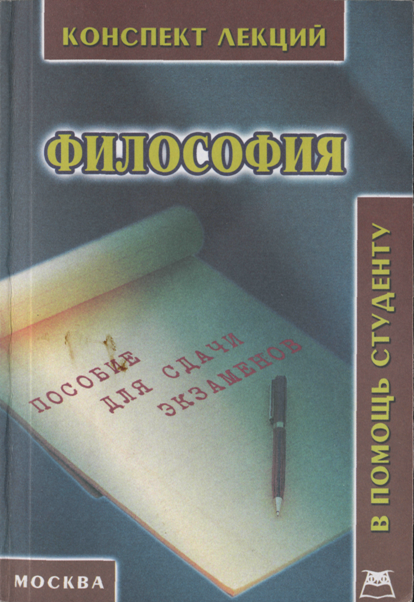
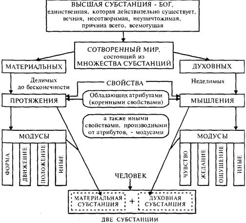

Сканирование и форматирование: Янко Слава (Библиотека Fort/Da) || slavaaa@yandex.ru || yanko_slava@yahoo.com || http://yanko.lib.ru || Icq# 75088656 || Библиотека: http://yanko.lib.ru/gum.html ||
update 29.12.04
ФИЛОСОФИЯ
Конспект лекций
МОСКВА 2004

Философия (конспект лекций). —
М.: Приор-издат, 2004. — 224 с.
Автор-составитель: Якушев А. В.
ISBN 5-9512-0192-6
Настоящим изданием мы продолжаем серию "В помощь студенту", в которую входят лучшие конспекты лекций по дисциплинам, изучаемым в гуманитарных вузах.
Материал приведен в соответствие с учебной программой курса "Философия".
Используя данную книгу при подготовке и сдаче экзамена, студенты смогут в предельно сжатые сроки систематизировать и конкретизировать знания, приобретенные в процессе изучения этой дисциплины. В издании даны основные понятия курса, их признаки и особенности.
Данная книга не является альтернативой учебникам для получения фундаментальных знаний, но служит пособием для успешной сдачи экзаменов.
Редактор — А. Г. Буланова Корректор — Д.М. Кирсанова Верстка — С.А. Симончук
ООО "Приор-издат" совместно с ООО "Концепт" 119071, г. Москва, Ленинский проспект, д.25, стр.1 http://www.xlibris.ra , e-mail prior@knigotorg.ra Оптовая торговля: (095) 964-42-00, 964-49-00 http://www.knigotorg.ra , e-mail: sales@knigotorg.ra Бумага газетная Гарнитура Times. Формат 70x100/32 Подписано в печать 24.03.2004 Заказ 3886. Тираж 5000 экз. Отпечатано с готовых диапозитивов издательства. ОАО "Тверской полиграфический комбинат" 170024, г. Тверь, пр-т Ленина, 5. Телефон: (0822)44-42-15 Интернет/Home page - www.tverpk.ru . Электронная почта (E-mail) - sales@tverpk.ru .
ISBN 5-9512-0192-6
© Приор, 2004
Вопрос 1. Философия как разновидность мировоззрения
Вопрос 2. Специфика философского знания
Вопрос 3. Предмет и методы философии
Вопрос 5. Основной вопрос и основные направления философии
Вопрос 6. Общее понятие и характерные черты китайской философии
Вопрос 7. Проблемы человека и возникновения окружающего мира в китайской философии и мифологии
Вопрос 8. Даосизм – древнейшее философское учение Китая
Вопрос 9. Социально-философские школы Древнего Китая -конфуцианство и легизм
Вопрос 10. Древнеиндийская философия
Вопрос 11. Буддизм и его основные идеи
Вопрос 12. Древнегреческая философия:
Вопрос 13. Первые философские (досократические) школы Древней Греции
Вопрос 14. Философия софистов и Сократа
Вопрос 15. Философия киников и стоиков
Вопрос 17. Философия Аристотеля
Вопрос 19. Теологическая философия средних веков
Вопрос 20. Философия Августина Блаженного
Вопрос 21. Философия Фомы Аквинского (томизм)
Вопрос 22. Основные направления и характерные черты философии эпохи Возрождения
Вопрос 23. Гуманизм, неоплатонизм, натурфилософия как направления философии эпохи Возрождения
Вопрос 24. Социально-политическая философия эпохи Возрождения
Вопрос 25. Арабская (арабоязычная) философия средних веков
Вопрос 26. Рационализм и эмпиризм как направления в философии
Вопрос 27. Рационалистическая философия Декарта. Учение о субстанции
Вопрос 28. Философия Нидерландов (Голландии) эпохи Возрождения и нового времени
Вопрос 30. Философия Лейбница. Учение о монадах
Вопрос 31. Философия французского Просвещения XVIII в. Общая характеристика
Вопрос 32. Деистическое направление философии французского Просвещения XVIII в.
Вопрос 33. Атеистическо-материалистическое направление философии французского Просвещения XVIII в.
Вопрос 34. Социалистическо-утопическое (коммунистическое) направление французской философии
Вопрос 35. Немецкая философия XIX в. как явление мировой философии, ее основные направления и идеи
Вопрос 36. Философия Иммануила Канта
Вопрос 38. Философия субъективного идеализма
Вопрос 41. Философия вульгарных материалистов
Вопрос 42. Философия марксизма
Вопрос 43. Философия позитивизма Огюста Конта
Вопрос 44. Неклассическая идеалистическая философия Шопенгауэра, Ницше, Дильтея
Вопрос 46. Материя (материальное бытие)
Вопрос 47. Сознание. Общее понятие, основные подходы, происхождение
Вопрос 48. Материалистическое объяснение природы сознания. Теория отражения
Вопрос 50. Альтернативы диалектики
Вопрос 51. Проблема человека, личности в философии. Общественная природа человека
Вопрос 54. Познание (гносеология)
Вопрос 57. Общая характеристика русской философии
Вопрос 58. Русская философия XIX в.
Вопрос 59. Русская философия ХХ в.
Вопрос 60. Американский прагматизм. Новаторство философии Джона Дьюи
Вопрос 62. Современная теологическая философия
Вопрос 63. Основные направления современной позитивистской философии
3
1. Мировоззрение — целостный взгляд на мир и место человека в нем.
В истории человечества выделяются три основные формы мировоззрения:
• мифология;
• религия;
• философия.
2. Мифология — форма общественного сознания, мировоззрение древнего общества, которое совмещает в себе как фантастическое, так и реалистическое восприятие окружающей действительности.
Как правило, мифы пытаются дать ответ на следующие
основные вопросы:
• происхождение Вселенной, Земли и человека;
• объяснение природных явлений;
• жизнь, судьба, смерть человека; деятельность человека и его достижения;
• вопросы чести, долга, этики и нравственности.
Чертами мифа являются:
• очеловечивание природы;
• наличие фантастических богов, их общение, взаимодействие с человеком;
• отсутствие абстрактных размышлений (рефлексии);
• практическая направленность мифа на решение конкретных жизненных задач (хозяйство, защита от стихии и т. д.);
• однообразие и поверхность мифологических сюжетов.
3. Религия — форма мировоззрения, основанная на вере в наличие фантастических, сверхъестественных сил, которые влияют на жизнь человека и окружающий мир.
При религиозном мировоззрении для человека характерна чувственная, образно-эмоциональная (а не рациональная) форма восприятия окружающей действительности.
Религия исследует вопросы те же, что и миф:
• происхождение Вселенной, Земли, жизни на Земле, человека;
• объяснение природных явлений;
• поступки, судьба человека;
• нравственно-этические проблемы.
4
Основными мировыми религиями являются:
• христианство;
• ислам;
• буддизм.
Крупнейшие и наиболее распространенные в мире национальные религии:
• синтоизм;
• индуизм;
• иудаизм.
Помимо мировоззренческих религия имеет ряд иных функций:
• объединительную (консолидирует общество вокруг идей либо ради идей);
• культурологическую (способствует распространению определенной культуры, влияет на культуру);
• нравственно-воспитательную (культивирует в обществе идеалы любви к ближнему, сострадания, честности, терпимости, порядочности, долга).
4. Философия — особый, научно-теоретический тип мировоззрения. Философское мировоззрение отличается от религиозного и мифологического тем, что оно:
• основано на знании (а не на вере либо вымысле);
• рефлексивно (имеет место обращенность мысли на саму себя);
• логично (имеет внутреннее единство и систему);
• опирается на четкие понятия и категории.
Таким образом, философия представляет собой высший уровень и вид мировоззрения, отличающийся рациональностью, системностью, логикой и теоретической оформленностью.
5. Философия как мировоззрение прошла три основные стадии своей эволюции:
• космоцентризм;
• теоцентризм;
• антропоцентризм.
Космоцентризм — философское мировоззрение, в основе которого лежит объяснение окружающего мира, явлений природы через могущество, всесильность, бесконечность внешних сил — Космоса и согласно которому все сущее зависит от Космоса и космических циклов (данная философия была свойственна Древней Индии, Древнему Китаю, иным странам Востока, а также Древней Греции).
Теоцентризм - тип философского мировоззрения, в основе которого лежит объяснение всего сущего через господство не-
5
объяснимой, сверхъестественной силы - Бога (был распространен в средневековой Европе).
Антропоцентризм — тип философского мировоззрения, в центре которого стоит проблема человека (Европа эпохи Возрождения, нового и новейшего времени, современные философские школы).
1. Основная специфика философского знания заключается в его двойственности, так как оно:
• имеет очень много общего с научным знанием — предмет,
методы, логико-понятийный аппарат;
• однако не является научным знанием в чистом виде.
Главное отличие философии от всех иных наук заключается в том, что философия является теоретическим мировоззрением, предельным обобщением ранее накопленных человечеством знаний.
Предмет философии шире предмета исследования любой отдельной науки, философия обобщает, интегрирует иные науки, но не поглощает их, не включает в себя все научное знание, не стоит над ним.
2. Можно выделить следующие особенности философского знания:
• имеет сложную структуру (включает онтологию, гносеологию, логику и т. д.);
6
• носит предельно общий, теоретический характер;
• содержит базовые, основополагающие идеи и понятия, которые лежат в основе иных наук;
• во многом субъективно — несет в себе отпечаток личности и мировоззрения отдельных философов;
• является совокупностью объективного знания и ценностей, нравственных идеалов своего времени, испытывает на себе влияние эпохи;
• изучает не только предмет познания, но и механизм самого познания;
• имеет качество рефлексии — обращенности мысли на саму себя (то есть знание обращено как на мир предметов, так и само на себя);
• испытывает на себе сильное влияние доктрин, вырабатываемых прежними философами;
• в то же время динамично — постоянно развивается и обновляется;
• опирается на категории — предельно общие понятия;
• неисчерпаемо по своей сути;
• ограничено познавательными способностями человека (познающего субъекта), имеет неразрешимые, "извечные" проблемы (происхождение бытия, первичность материи или сознания, происхождение жизни, бессмертие души, наличие либо отсутствие Бога, его влияние на мир), которые на сегодняшний день не могут быть достоверно разрешены логическим путем.
1. Предметом называется круг вопросов, которые изучает философия. Общую структуру предмета философии, философского знания составляют четыре основных раздела:
• онтология (учение о бытии);
• гносеология (учение о познании);
• человек;
• общество.
2. В рамках данных четырех основных разделов философии можно выделить множество изучаемых ею частных вопросов:
• сущность бытия;
• происхождение бытия;
• материя (субстанция), ее формы;
• сознание, его происхождение и природа;
• взаимоотношение материи и сознания;
7
• бессознательное;
• человек, его сущность и существование;
• душа, духовный мир человека;
• общество;
• общество и человек;
• природа;
• природа и общество;
• духовная сфера жизни общества;
• материально-экономическая сфера жизни общества;
• социальная сфера общества;
• общественно-экономические формации, цивилизации;
• перспективы человека, общества;
• экология, проблемы выживания;
• особенности познания;
• влияние познающего субъекта на процесс познания и его результаты;
• ограниченность и безграничность познания;
• движение;
• философские категории;
• диалектика и ее законы;
• иные вопросы.
3. Основными методами философии (путями, средствами, с помощью которых осуществляется философское исследование) являются:
• диалектика;
• метафизика;
• догматизм;
• эклектика;
• софистика;
• герменевтика.
Диалектика - метод философского исследования, при котором вещи, явления рассматриваются гибко, критически, последовательно с учетом их внутренних противоречий, изменений, развития, причин и следствий, единства и борьбы противоположностей.
Метафизика — метод, противоположный диалектике, при котором объекты рассматриваются:
• обособленно, как сами по себе (а не с точки зрения их взаимосвязанности) ;
• статично (игнорируется факт постоянных изменений, самодвижения, развития);
• однозначно (ведется поиск абсолютной истины, не уделяется внимания противоречиям, не осознается их единство).
8
Догматизм — восприятие окружающего мира через призму догм — раз и навсегда принятых убеждений, недоказуемых, "данных свыше" и носящих абсолютный характер. Данный метод был присущ средневековой теологической философии.
Эклектика — метод, основанный на произвольном соединении разрозненных, не имеющих единого творческого начала фактов, понятий, концепций, в результате которого достигаются поверхностные, но внешне правдоподобные, кажущиеся достоверными выводы. Часто эклектика применялась для обоснования каких-либо взглядов, идей, привлекательных для массового сознания, но не имеющих реальной ни онтологической, ни гносеологической ценности и достоверности (в средние века — в религии, в настоящее время — в рекламе).
Софистика — метод, основанный на выведении из ложных, но искусно и некорректно поданных как истинные посылок (суждений), новой посылки, логически истинной, но ложной по смыслу либо любой иной выгодной для принимающего данный метод. Софистика была распространена в Древней Греции, имела цель не получения истины, а победы в споре, доказательства "чего угодно кому угодно" и использовалась как прием ораторского искусства.
Герменевтика — метод правильного прочтения и истолкования смысла текстов. Широко распространен в западной философии.
Одновременно и направлениями в философии, и философскими методами являются:
• материализм;
• идеализм;
• эмпиризм;
• рационализм.
При материалистическом методе действительность воспринимается как реально существующая, материя — как первичная субстанция, а сознание — ее модус — есть проявление материи. (Материалистическо-диалектический метод господствовал в советской философии и имеет широкое распространение в современной российской.)
Суть идеалистического философского метода — признание в качестве первоначала и определяющей силы идеи, а материи — как производной от идеи, ее воплощением. Идеалистический метод особенно широко распространен в США и ряде стран Западной Европы (например, Германии).
Эмпиризм — метод и направление в познании, согласно которому в основе познавательного процесса, знания лежит опыт, получаемый преимущественно в результате чувственного познания. ("Нет ничего в мыслях, чего бы до этого не было в опыте и чувственных ощущениях".)
9
Рационализм — философский метод и направление в философии, в силу которого истинное, абсолютно достоверное знание может быть достигнуто только с помощью разума (то есть выведено из самого разума) без влияния опыта и ощущений. (Все можно подвергнуть сомнению, а любое сомнение — это уже работа мысли, разума.)
1. Функции философии — основные направления применения философии, через которые реализуются ее цели, задачи, назначение.
Принято выделять следующие функции философии:
• мировоззренческую;
• методологическую;
• мыслительно-теоретическую;
• гносеологическую;
• критическую;
• аксиологическую;
• социальную;
• воспитательно-гуманитарную;
• прогностическую
2. Мировоззренческая функция способствует формированию целостности картины мира, представлений об его устройстве, месте человека в нем, принципов взаимодействия с окружающим миром.
Методологическая функция заключается в том, что философия вырабатывает основные методы познания окружающей действительности (см. вопрос 3 "Предмет и методы философии").
Мыслительно-теоретическая функция выражается в том, что философия учит концептуально мыслить и теоретизировать — предельно обобщать окружающую действительность, создавать мыслительно-логические схемы, системы окружающего мира.
Гносеологическая — одна из основополагающих функций философии — имеет целью правильное и достоверное познание окружающей действительности (то есть механизм познания).
Роль критической функции - подвергать сомнению окружающий мир и существующее знание, искать их новые черты, качества, вскрывать противоречия. Конечная задача данной функции — расширение границ познания, разрушение догм, окостенелости знания, его модернизация, увеличение достоверности знания.
Аксиологическая функция философии (в переводе с греческого axios — ценный) заключается в оценке вещей, явлений окружающего мира с точки зрения различных ценностей - мораль-
10
но-нравственных, этических, социальных, идеологических и др. Цель аксиологической функции — быть "ситом", через которое пропускать все нужное, ценное и полезное и отбрасывать тормозящее и отжившее. Аксиологическая функция особенно усиливается в переломные периоды истории (начало средних веков — поиск новых (теологических) ценностей после крушения Рима; эпоха Возрождения; Реформация; кризис капитализма конца XIX — начала ХХ вв. и др.).
Социальная функция — объяснить общество, причины его возникновения, эволюцию, современное состояние, его структуру, элементы, движущие силы; вскрыть противоречия, указать пути их устранения или смягчения, совершенствования общества.
Воспитательно-гуманитарная функция философии состоит в том, чтобы культивировать гуманистические ценности и идеалы, прививать их человеку и обществу, способствовать укреплению морали, помочь человеку адаптироваться в окружающем мире и найти смысл жизни.
Прогностическая функция заключается в том, чтобы на основании имеющихся философских знаний об окружающем мире и человеке, достижениях познания спрогнозировать тенденции развития, будущее материи, сознания, познавательных процессов, человека, природы и общества.
1. Основным в философии традиционно считается вопрос об отношении мышления к бытию, а бытия - к мышлению (сознанию).
Важность данного вопроса заключается в том, что от его достоверного разрешения зависит построение целостного знания об окружающем мире и месте человека в нем, а это и является главной задачей философии.
Материя и сознание (дух) — две неразрывные и в то же время противоположные характеристики бытия. В связи этим существуют две стороны основного вопроса философии — онтологическая и гносеологическая.
Онтологическая (бытийная) сторона основного вопроса философии заключается в постановке и решении проблемы: что первично — материя или сознание?
Суть гносеологической (познавательной) стороны основного вопроса: познаваем или непознаваем ли мир, что первично в процессе познания?
11
В зависимости от онтологической и гносеологической сторон в философии выделяются основные направления — соответственно материализм и идеализм, а также эмпиризм и рационализм.
При рассмотрении онтологической (бытийной) стороны основного вопроса философии можно выделить такие направления, как:
• объективный идеализм;
• субъективный идеализм;
• материализм;
• вульгарный материализм;
• дуализм;
• деизм;
гносеологической (познавательной) стороны:
• гностицизм;
• агностицизм;
• эмпиризм (сенсуализм);
• рационализм.
2. Онтологическую сторону основного вопроса философии представляют:
• материализм;
• идеализм;
• дуализм.
Материализм (так называемая "линия Демокрита") — направление в философии, сторонники которого считали, что в отношениях материи и сознания первичной является материя.
Следовательно:
• материя реально существует;
• материя существует независимо от сознания (то есть существует независимо от мыслящих существ и от того, мыслит о ней кто-либо или нет);
• материя является самостоятельной субстанцией — не нуждается в своем существовании ни в чем, кроме самой себя;
• материя существует и развивается по своим внутренним законам;
• сознание (дух) есть свойство (модус) высокоорганизованной материи отражать саму себя (материю);
• сознание не является самостоятельной субстанцией, существующей наряду с материей;
• сознание определяется материей (бытием).
К материалистическому направлению принадлежали такие философы, как Демокрит; философы Милетской школы (Фалес, Анаксимандр, Анаксимен); Эпикур; Бэкон; Локк; Спиноза; Дидро и иные
12
французские материалисты; Герцен; Чернышевский; Маркс; Энгельс; Ленин.
Достоинство материализма — опора на науку,. в особенности на точные и естественные (физику, математику, химию и т. д.), логическая доказуемость многих положений материалистов.
Слабая сторона материализма — недостаточное объяснение сущности сознания, наличие явлений окружающего мира, необъяснимых с точки зрения материалистов.
В материализме выделяется особое направление — вульгарный материализм. Его представители (Фохт, Молешотт) абсолютизируют роль материи, чрезмерно увлекаются исследованием материи с точки зрения физики, математики и химии, ее механической стороной, игнорируют само сознание как сущность и его возможность ответно влиять на материю.
Материализм как господствующее направление философии был распространен в демократической Греции, эллинистических государствах, Англии периода буржуазной революции (XVII в.), Франции XVIII в., СССР и социалистических странах в ХХ в.
Идеализм ("линия Платона") — направление в философии, сторонники которого в отношениях материи и сознания первичным считали сознание (идею, дух).
В идеализме выделяются два самостоятельных направления:
• объективный идеализм (Платон, Лейбниц, Гегель и др.);
• субъективный идеализм (Беркли, Юм).
Основателем объективного идеализма считается Платон. Согласно концепции объективного идеализма:
• реально существует только идея;
• идея первична;
• вся окружающая действительность делится на "мир идей" и "мир вещей";
• "мир идей" (эйдосов) изначально существует в Мировом Разуме (Божественном Замысле и т. д.);
• "мир вещей" — материальный мир не имеет самостоятельного существования и является воплощением "мира идей";
• каждая единичная вещь — воплощение идеи (эйдоса) данной вещи (например, лошадь — воплощение общей идеи лошади, дом - идеи дома, корабль - идеи корабля и т. д.);
• большую роль в преобразовании "чистой идеи" в конкретную вещь играет Бог-Творец;
• отдельные идеи ("мир идей") объективно существуют независимо от нашего сознания.
13
В противоположность объективным идеалистам субъективные идеалисты (Беркли, Юм и др.) считали, что:
• все существует только в сознании познающего субъекта (человека);
• идеи существуют в разуме человека;
• образы (идеи) материальных вещей также существуют только в разуме человека через чувственные ощущения;
• вне сознания отдельного человека ни материи, ни духа (идей) не существует.
Слабая черта идеализма — отсутствие достоверного (логического) объяснения самого наличия "чистых идей" и превращения "чистой идеи" в конкретную вещь (механизма возникновения материи и идеи).
Идеализм как философское направление господствовал в платоновской Греции, средние века, в настоящее время широко распространен в США, Германии, других странах Западной Европы.
Наряду с полярными (конкурирующими) главными направлениями философии — материализмом и идеализмом — существуют промежуточные (компромиссные) течения — дуализм, деизм.
Дуализм как философское направление был основан Декартом. Суть дуализма заключается в том, что:
• существуют две независимые субстанции — материальная (обладающая свойством протяжения) и духовная (обладающая свойством мышления);
• все в мире производно (является модусом) либо от одной, либо от другой указанных субстанций (материальные вещи — от материальной, идеи — от духовной);
• в человеке соединяются одновременно две субстанции — и материальная, и духовная;
• материя и сознание (дух) — две противоположные и взаимосвязанные стороны единого бытия;
• основного вопроса философии (что первично — материя или сознание) в действительности не существует, так как материя и сознание взаимодополняют друг друга и существуют всегда. Деизм — направление в философии, сторонники которого
(преимущественно французские просветители XVIII в.) признавали наличие Бога, который, по их мнению, единожды сотворив мир, уже не участвует в его дальнейшем развитии и не влияет на жизнь и поступки людей (то есть признавали Бога, практически не имеющего никаких "полномочий", который должен лишь служить нравственным символом). Деисты также считали материю одухотворенной и не противопоставляли материю и дух (сознание).
14
3. Гносеологическая сторона основного вопроса философии представлена:
• эмпиризмом (сенсуализмом);
• рационализмом.
Основателем эмпиризма является Ф. Бэкон.
Эмпиристы считали, что в основе познания могут лежать лишь опыт и чувственные ощущения ("Нет ничего в мыслях (в разуме), чего бы не было до этого в опыте и чувственных ощущениях").
Основоположником рационализма (от лат. ratio — разум) считается Р. Декарт.
Основная идея рационализма в том, что истинное (достоверное) знание может быть выведено только непосредственно из разума и не зависит от чувственного опыта. (Во-первых, реально существует лишь сомнение во всем, а сомнение — мысль — деятельность разума. Во-вторых, существуют истины, очевидные для разума (аксиомы) и не нуждающиеся ни в каком опытном доказательстве, — "Бог существует", "У квадрата равные углы", "Целое больше, чем его часть" и т. д.)
В качестве особого направления выделяется иррационализм (Ницше, Шопенгауэр). Согласно иррационалистам мир хаотичен, не имеет внутренней логики, а следовательно, никогда не будет познан разумом.
С гносеологической стороной основного вопроса философии связаны понятия гностицизма и агностицизма.
Представители гностицизма (как правило, материалисты) считают, что:
• мир познаваем;
• возможности познания неограничены. Противоположной точки зрения придерживаются агностики
(как правило, идеалисты):
• мир непознаваем;
• возможности познания ограничены познавательными возможностями человеческого разума.
К числу видных теоретиков агностицизма принадлежал Иммануил Кант (1724 - 1804). Согласно Канту человеческий разум обладает большими возможностями, но и эти возможности имеют свои границы. Исходя из конечности и ограниченности познавательных возможностей человеческого разума, существуют загадки (противоречия), которые человеком не будут разгаданы никогда, например:
Бог существует Бога не существует
Всего таких неразрешимых противоречий (антиномий) Хант выделяет четыре (см. вопрос 36 "Философия Иммануила Канта").
15
Однако, по Канту, даже то, что входит в познавательные возможности человеческого разума, все равно не будет никогда познано, поскольку разум может лишь познать отображение веши в чувственных ощущениях, но никогда не познает внутреннюю сущность данной вещи — "вещи в себе".
4. В настоящее время, несмотря на тысячелетние искания философов, основной вопрос философии достоверно не решен ни с онтологической, ни с гносеологической стороны и фактически является извечной (неразрешенной) философской проблемой.
В ХХ в. в западной философии наметилась тенденция уделять меньше внимания традиционному основному вопросу философии, так как он трудноразрешим и постепенно теряет свою актуальность.
Ясперс, Хайдеггер, Камю и др. заложили основы того, что в будущем может появиться другой основной вопрос философии -проблема экзистенционализма, то есть проблема человека, его существования, управления собственным духовным миром, взаимоотношений внутри общества и с обществом, его свободного выбора, поиска смысла жизни и своего места в жизни, счастья.
1. Философия Китая в своем развитии прошла три основных этапа:
• VII в. до н. э. - III в. н. э. - зарождение и становление древнейших национальных философских школ;
• III — XIX вв. н. э. — проникновение в Китай из Индии буддизма (III в. н. э.) и его влияние на национальные философские школы;
• ХХ в. н. э. — современный этап — постепенное преодоление замкнутости китайского общества, обогащение китайской философии достижениями европейской и мировой философии.
2, Древнейшими национальными философскими учениями в Китае являлись:
• даосизм;
• конфуцианство;
• легизм.
Меньшее распространение получили:
• моизм;
• натурфилософия;
• номинализм.
После проникновения в Китай буддизма (III в. н. э.) и до конца XIX в. (второй этап) основу китайской философии составляли:
• чань-буддизм (национальный китайский буддизм, возникший в результате влияния китайской культуры на индийский буддизм, заимствованный Китаем;
16
• неодаосизм;
• неоконфуцианство.
В ХХ в. национальная китайская философия обогатилась достижениями мировой философской мысли, в частности идеями:
• христианской религии;
• марксизма;
• ведущих европейских философов;
• американской философии прагматизма.
3. Для китайского видения мира и окружающей действительности (что нашло отражение в китайской философии) характерно:
• восприятие своей страны — Китая — как центра существующего мира;
• понимание отдельных событий, истории в целом как циклического процесса;
• осознание своей ответственности перед Небом и Землей за правильное воплощение на Земле космических циклов;
• восприятие человека, природы и космоса как единого целого;
• консерватизм сознания, обращенность в прошлое, боязнь перемен;
• невыделение отдельной человеческой личности из коллектива;
• осознание беспомощности отдельного человека в борьбе против природной стихии (разливов рек, ураганов и др.); приоритет, отдаваемый коллективным (массовым) формам труда (строительство Великой Китайской стены, строительство плотин, рытье каналов, борьба с наводнениями, ирригационное земледелие и др.); отсюда — уважение и трепет перед организующей силой — государством;
• восприятие человеческой личности, коллектива, общества и государства как единого целого; распространение в обществе вертикальных связей (власти и подчинения), субординации, послушание начальству, восприятие главы государства (императора) высшей объединяющей силой государства, а государства — объединяющей силой общества, обожествление должности и личности императора, его власти;
• конформизм во взаимоотношениях, предпочтение покою и недеянию;
• понимание жизни прежде всего как жизни духа в телесной оболочке, предпочтение земной жизни загробной, стремление максимально продолжить жизнь отдельного человека на Земле (с помощью трав, физических упражнений, правильного образа жизни и правильного отношения к окружающей -действительности);
17
• восприятие потусторонних сил как реальности, одушевление умерших;
• уважение к родителям, старшим, почитание предков и духов
("шэнов").
1. Несмотря на то что человек в Китае отождествляется с природой и космосом и не выделяется из общества, он занимает центральное место в китайской философии.
Согласно китайской философской традиции человек является сгустком трех видов космической энергии:
• цзин;
• ци;
• шэнь.
Цзин — энергия зарождения всего сущего, "корень", "семя"
живого организма.
Выделяются два вида данной психофизической энергии:
• "семя Прежнего Неба" — то, что дано человеку от рождения, генетическая программа, физические данные;
• "семя Последующего Неба" — то, что человек накапливает в течение жизни.
Нередко цзин отождествляется с сексуальной энергией.
Ци — материально-духовная энергия, которая служит "строительным материалом" всего сущего (в отличие от цзин — энергии зарождения).
Энергия ци подразделяется на:
• вещественную ци, благодаря которой вещи и живые организмы приобретают материальную форму;
• духовную ци - душу человека и других живых существ. Духовная ци - основа жизни человека. Удачливый, физически и
морально здоровый человек обладает "светлой", "чистой" ци. Больной, слабый, неудачливый — "тяжелой", "загрязненной", "темной" ци.
Путь к успеху, физическому и духовному здоровью, счастью — освобождение ци от всего лишнего, очищение души.
Шэнь — неистребимая духовная энергия, существующая в человеке, которая составляет "стержень" человеческой личности и не исчезает после смерти человека (в отличие от ци).
18
Помимо трех видов космической энергии (энергии зарождения — цзин; энергии материального и духовного существования — ци; постоянной духовной энергии, остающейся после смерти, — шэнь) китайская философия выделяет два вица сексуальной энергии:
• ян — мужская сексуальная энергия;
• инь — женская сексуальная энергия.
Отсюда все сущее делится на два противоположных начала -мужское и женское. Это касается как живой природы (различие всех людей на мужчин и женщин, аналогичное половое деление среди животных), так и неживой природы (например, китайская философия относит к активному мужскому началу ян Солнце, небо, день, сухость, легкость, а к пассивному женскому началу инь — Луну, Землю, равнины, ночь, влагу).
В основе существования живой и неживой природы, всей окружающей действительности лежит "Тай-цзи" - единство, борьба, взаимопроникновение и взаимодополнение ян и инь.
Восприятие китайской философией человека имеет ряд особенностей. В отличие от западной философской традиции китайская философия:
• не дает четкого понятия человека, пытается вникнуть в сущность человека не путем вывода четких понятий, а путем создания и изучения его образа (поэтому правильнее говорить не о понятии человека в китайской философии, а об образах-понятиях как человека, так и иных явлений);
• начинает отсчет человеческой жизни не с момента рождения, а с момента зачатия;
• не исключает человека навсегда из системы человеческих отношений после его смерти, то есть человек (его дух, обладающий некоторой телесностью — "шэн") остается в системе человеческих отношений после смерти наравне с живыми людьми — нуждается в питании, заботе, сохраняет прежнюю должность, может быть повышен, награжден, снят с должности, наказан — в зависимости от поведения его потомков;
• выделяет в качестве духовного центра человека не голову (мозг, лицо, глаза и т. д.), а сердце;
• воспринимает человека как часть природы и космоса, не соглашается с идеей господства человека над природой и остальными живыми существами, не приветствует индивидуализм и противопоставление отдельной личности другим членам общества;
• призывает ценить земной отрезок жизни, максимально продлить его продолжительность.
19
Главными условиями долголетия в Китае считаются:
• поддержание в чистом состоянии духовной психофизической энергии ци, что включает освобождение от ненужных переживаний, отказ от вредных и злых помыслов, правильное отношение к окружающей действительности, уважение к окружающим и старшим, сдержанный оптимизм, правильное расположение жилища и мебели внутри его, избегание общения с людьми, обладающими "грязной", нездоровой ци, общение с людьми, имеющими чистую, здоровую ци;
• работа над своим телом и душой — "син чун" — окультуривание себя;
• работа над судьбой, принесение пользы обществу — "мин чун";
• соблюдение общественных порядков;
• употребление лекарств и целебных трав, правильное питание;
• проживание в Китае, соединение с китайской культурой, подпитка духовной энергией Китая.
2. Древнекитайская культура дает философски-мифологическое объяснение происхождения жизни на земле, живой и неживой природы, которое включало в себя ряд последовательных этапов:
• великий Хаос, напоминающий по форме огромное Яйцо;
• зарождение в Яйце-Хаосе в течение 18000 лет Первопредка всего сущего — гиганта Пань-Гу;
• выход гиганта Пань-Гу из Яйца, что привело яйцевидный Хаос к гибели;
• образование из Хаоса Неба и Земли путем концентрации всего легкого и сухого вверху (Небо) и тяжелого, влажного внизу (Земля);
• 18000-летнее стояние гиганта Пань-Гу между Небом и Землей, в результате которого Небо и Земля закрепились на своих местах;
• смерть Пань-Гу, создание всего сущего из его тела: Солнца и Луны - из глаз, грома - из голоса, ветра - из выдоха, рек -из крови, дорог — из жил, камней и полезных ископаемых — из костей, зубов и т. д.;
• возникновение человека из паразитов, ползавших по телу Пань-Гу, либо в результате любви фантастических первопредков Фуси и Нюйвы — людей-драконов.
Старинное философское произведение "И-Цзин" объясняет происхождение мира из пяти первоэлементов — земли, дерева, металла, огня, воды, которые находятся в постоянном круговороте.
Древнекитайская мифология и философия дали первичное объяснение происхождения мира, природы и человека, образы-понятия человека, явлений окружающей жизни, создали почву для возникновения всемирно известных философских школ Китая — даосизма, конфуцианства, легизма.
20
1. Даосизм — древнейшее философское учение Китая, которое пытается объяснить основы построения и существования окружающего мира и найти путь, по которому должны следовать человек, природа и космос.
Основателем даосизма считается Лао Цзы (Старый Учитель), живший в конце VI — начале V вв. до н. э. Главные источники — философские трактаты "Даоцзин" и "Дэцзин", совместно именуемые "Даодэцзин".
2. Основными понятиями даосизма являются "Дао" и "Дэ". "Дао" имеет два значения:
• путь, по которому в своем развитии должны идти человек и природа, универсальный мировой закон, обеспечивающий существование мира;
• субстанция, от которой произошел весь мир, первоначало, которое представляло собой энергетически емкую пустоту. "Дэ" — благодать, исходящая свыше; энергия, благодаря которой первоначало "Дао" преобразовалось в окружающий мир.
3. Философия даосизма несет в себе ряд основных идей:
• все в мире взаимосвязано, нет ни одной вещи, ни одного явления, которые не были бы взаимосвязаны с другими вещами и явлениями;
• материя, из которой состоит мир, едина; существует кругооборот материи в природе ("все происходит из земли и уходит в землю"), то есть сегодняшний человек вчера был воплощен в виде иных форм, существующих во вселенной — камня, дерева, частей животных, и после смерти то, из чего состоял человек, станет "строительным материалом" иных форм жизни или явлений природы;
• мировой порядок, законы природы, ход истории незыблемы и не зависят от воли человека, следовательно, главный принцип жизни человека — покой и недеяние ("у-вэй");
• особа императора священна, только император имеет духовный контакт с богами и высшими силами; через личность императора на Китай и все человечество сходит "Дэ" — животворящая сила и благодать; чем ближе человек к императору, тем больше "Дэ" перейдет от императора к нему;
• познать "Дао" и получить "Дэ" можно лишь при полном соблюдении законов даосизма, слиянии с "Дао" — первоначалом, послушании императору и близости к нему;
21
• путь к счастью, познанию истины — освобождение от желаний и страстей;
• необходимо во всем уступать друг другу.
1. Конфуцианство — древнейшая философская школа, которая рассматривает человека прежде всего как участника социальной жизни.
Основоположником конфуцианства является Конфуций (Кун-Фу-Цзы), живший в 551 — 479 гг. до н. э., главным источником учения - произведение Лунь Юй ("Беседы и суждения").
Основные вопросы, решаемые конфуцианством:
• Как необходимо управлять людьми?
• Как вести себя в обществе?
Представители данной философской школы выступают за мягкое управление обществом. В качестве примера подобного управления приводится власть отца над сыновьями, а в качестве главного условия — отношение подчиненных к начальникам как сыновей к отцу, а начальника к подчиненным — как отца к сыновьям.
Конфуцианское золотое правило поведения людей в обществе гласит: не делай другим того, чего не желаешь себе.
2. Учение Конфуция содержит ряд основополагающих принципов:
• жить в обществе и для общества;
• уступать друг другу;
• слушаться старших по возрасту и по званию;
• подчиняться императору;
• сдерживать себя, соблюдать меру во всем, избегать крайностей;
• быть человечным.
3. Большое внимание Конфуций уделяет вопросу, каким должен быть начальник (руководитель).
Руководитель должен обладать следующими качествами:
• подчиняться императору и следовать конфуцианским принципам;
• управлять на основе добродетели ("бадао");
• обладать необходимыми знаниями;
• верно служить стране, быть патриотом;
• обладать большими амбициями, ставить высокие цели;
• быть благородным;
• делать только добро государству и окружающим;
• предпочитать убеждение и личный пример принуждению;
22
• заботиться о личном благосостоянии подчиненных и страны в целом. В свою очередь, подчиненный должен:
• быть лояльным по отношению к руководителю;
• проявлять старание в работе;
• постоянно учиться и самосовершенствоваться.
Учение Конфуция сыграло большую роль в объединении китайского общества. Оно остается актуальным и в настоящее время, спустя 2500 лет со времени жизни и деятельности автора.
4. Другим важнейшим социальным учением Древнего Китая являлся легизм (школа законников, или Фацзя). Его основателями были Шан Ян (390 - 338 гг. до н. э.) и Хань Фэй (288 - 233 гг. до н. э.). В эпоху императора Цинь-Ши-Хуа (III в. до н. э.) легизм стал официальной идеологией.
Основной вопрос легизма.(как и конфуцианства): как управлять обществом?
Легисты выступают за то, чтобы управлять обществом путем государственного насилия, опирающегося на законы. Таким образом, легизм — философия сильной государственной власти.
5. Основными постулатами легизма являются следующие:
• человек обладает изначально злой природой;
• движущей силой человеческих поступков являются личные эгоистические интересы;
• как правило, интересы отдельных индивидов (социальных групп) взаимопротивоположны;
• чтобы избежать произвола и всеобщей вражды, необходимо государственное вмешательство в общественные отношения;
• государство (в лице армии, чиновников) должно поощрять законопослушных граждан и жестоко карать провинившихся;
• основным стимулом правомерного поведения большинства людей является страх перед наказанием;
• основным разграничением правомерного и неправомерного поведения и применения наказания должны являться законы;
• законы должны быть одинаковы для всех, а наказание должно применяться и к простолюдинам, и к высшим чиновникам (независимо от звания), если они нарушили законы;
• государственный аппарат должен формироваться из профессионалов (то есть чиновничьи должности должны даваться кандидатам, обладающим необходимыми знаниями и деловыми качествами, а не передаваться по наследству);
• государство — главный регулирующий механизм общества и, следовательно, имеет право вмешиваться в общественные отношения, экономику, личную жизнь граждан.
23
1. В основе периодизации древнеиндийской философии лежат различные источники философской мысли, известные как в древности, так и в современную эпоху. В соответствии с данными источников в древнеиндийской философии выделяются три основных этапа:
• XV — VI вв. до н. э. — ведический период;
• VI — И вв. до н. э. — эпический период;
• II в. до н. э. — VII в. н. э. — эпоха сутр.
Веды (дословно — "знания") — религиозно-философские трактаты, которые создавались пришедшими в Индию после XV в. до н. э. из Средней Азии, Поволжья и Ирана племенами арийцев.
Веды, как правило, включали в себя:
• "священное писание", религиозные гимны ("самхиты");
• описание ритуалов ("брахманы"), сочиненное брахманами (жрецами) и используемое ими при отправлении религиозных культов;
• книги лесных отшельников ("араньяки");
• философские комментарии к Ведам ("упанишады"). До наших дней дошло всего четыре Веды:
• Ригведа;
• Самаведа;
• Яджурведа;
• Атхарваведа.
Наибольший интерес у исследователей древнеиндийской философии вызывают заключительные части Вед — Упанишады (дословно с санскрита — "сидение у ног учителя"), в которых дается философская трактовка содержания Вед.
Наиболее известными источниками философии Древней Индии второго (эпического) этапа (VI — II вв. до н. э.) являются две поэмы — эпосы "Махабхарата" и "Рамаяна", в которых затрагиваются многие философские проблемы эпохи.
В ту же эпоху появляются учения, оппозиционные Ведам:
• буддизм;
• джайнизм;
• чарвана-лакаята.
Одновременно возникает ряд философских школ ("даршан"), которые развивают ведическое учение:
• йога;
• веданта;
• вайшешина;
• ньяя;
24
• миманса;
• санкхья.
Завершает период древнеиндийской философии эра сутр (II в. до н. э. — VII в. н. э.) — кратких философских трактатов, рассматривающих отдельные проблемы (например, "нама-сутра" и др.).
В дальнейшем (в средние века) господствующее положение в индийской философии заняло учение Гаутамы Будды — буддизм.
В XVIII — ХХ вв. индийская философия обогатилась достижениями европейской философской мысли (в частности, английской).
2. Онтология индийской философии (учение о бытии и небытии) опирается на закон Риты - космической эволюции, цикличности, порядка и взаимосвязанности. Бытие и небытие ассоциируется соответственно с выдохом и вдохом Брахмы-Космоса (Бога-творца). В свою очередь, Космос-Брахма (Бог-творец) живет 100 космических (8640000000 земных) лет, после чего он умирает и наступает абсолютное небытие, которое длится также 100 космических (8640000000 земных) лет — до нового рождения Брахмы.
Вся бесконечная история — это чередование жизни Космоса (Маха Манвантара) и Абсолютного Небытия (Маха Пралайя), которые сменяют друг друга через каждые 100 космических лет. При каждом новом рождении Космоса-Брахмы заново появляется жизнь, но в более совершенной форме.
Мир взаимосвязан. Любое событие (поступок человека, явление природы) влияет на жизнь Космоса. Цель эволюции, развития — достижение все более совершенного духа через постоянную смену материальных форм.
3. Главной особенностью древнеиндийской гносеологии (учения о познании) является не изучение внешних (видимых) признаков предметов и явлений (что характерно для европейского типа познания), а изучение процессов, происходящих в сознании при соприкосновении с миром предметов и явлений.
В этой связи индийская философия выделяет /при вида сознания.
• "пракрити" — материальное сознание;
• "пуруша" — чистое сознание (первичная энергия, из которой возникли Вселенная и люди);
• "майя" — сознание сновидения, мираж.
Каждое из данных видов сознания согласно индийской философии реально и заслуживает изучения — в отличие от европейской философии, которая признает только материальное сознание и длительное время (до И. Канта) не рассматривала вопросы подлинного и неподлинного бытия, сущности и иллюзорности.
25
4. Душа в индийской философии состоит из двух начал:
• атмана;
• манаса.
Атман — частица Бога-Брахмы в человеческой душе. Атман первоначален, неизменен, вечен.
Манас — душа человека, возникающая в процессе жизни. Манас постоянно эволюционизирует, достигает высоких ступеней либо ухудшается в зависимости от поступков человека, его личного опыта, хода судьбы.
Также для индийской философии характерны учения о сансаре, ахимсе, мокше и карме.
5. Сансара - учение о вечности и неуничтожимости души, которая проходит цепочку страданий в земной жизни.
Карма — предопределенность человеческой жизни, судьбы. Цель кармы - провести человека через испытания для того, чтобы его душа совершенствовалась и добилась высшего нравственного развития - мокши. (Для достижения этой цели душа может пройти через десятки, сотни земных жизней.)
Мокша — высшее нравственное совершенство, после достижения которого эволюция души (карма) прекращается. Наступление мокши (прекращение эволюционного развития души) — высшая цель любой души, которая может быть достигнута в земной жизни.
Души, достигшие мокши, освобождаются от цепи бесконечной жизни и становятся Махатмами — Великими Душами.
Ахимса - единство всех форм жизни на земле (следовательно, единение человека, животных и всей окружающей природы). Важнейший принцип ахимсы - непричинение вреда тому, что окружает (людям, животным, живой природе), неубиение.
1. Буддизм - религиозно-философское учение, распространившееся в Индии (после V в. до н. э.), Китае, Юго-Восточной Азии (после III в. н. э.), а также в иных регионах.
Основателем данного учения считается Гаутама Будда (Сидхардха Шакьямуни) (563 - 483 гг. до н. э.), родившийся в княжеской семье в Северной Индии. Будда прошел сложный жизненный путь (наследник престола, аскет-отшельник, мудрец), после чего "прозрел" (527 г. до н. э.) и передал свои духовные достижения людям.
Главная идея буддизма - "Средний путь" жизни между двумя крайними: "путем удовольствия" (развлечений, праздности, лени, физического и морального разложения) и "путем аскетизма"
26
(умерщвления плоти, лишений, страданий, физического и морального изнеможения).
"Средний путь" — путь знания, мудрости, разумного ограничения, созерцания, просветления, самосовершенствования, конечной целью которого является Нирвана — высшая благодать.
2. Будда вывел четыре благородные (арийские) истины:
• земная жизнь полна страданий;
• страдания имеют свои причины — жажду наживы, славы, удовольствия, жизни и т. д.;
• от страданий можно избавиться;
• существует путь, освобождающий от страданий, — отказ от земных желаний, просветление, Нирвана.
3. Буддистская философия предлагает каждому человеку план личностного самосовершенствования, целью которого является Нирвана - Великое Освобождение.
Данный план — так называемый Восьмеричный путь — предусматривает соблюдение следующих принципов:
• правильное видение — понимание основ буддизма и своего пути в жизни;
• правильная мысль - жизнь человека зависит от его мыслей, при изменении мыслей (с неправильных на правильные, благородные) меняется жизнь;
• правильная речь - слова человека, его речь воздействуют на его душу, характер;
• правильное действие — жить в согласии с собой и другими людьми, непричинение другим зла;
• правильный образ жизни — соблюдение буддистских заповедей в каждом поступке;
• правильное умение — усердие и трудолюбие;
• правильное внимание - контроль над мыслями, так как мысли порождают дальнейшую жизнь;
• правильное сосредоточение - регулярные медитации, осуществляющие связи с космосом.
4. К пяти заповедям-ориентирам буддизма относятся следующие:
• не убий;
• не. укради;
• будь целомудренным;
• не лги;
• не употребляй опьяняющих и одурманивающих веществ.
27
периодизация и основные черты
1. Древнегреческой называется философия (учения, школы), выработанная греческими философами, проживавшими на территории современной Греции, а также в греческих полисах (торгово-ремесленных городах-государствах) Малой Азии, Средиземноморья, Причерноморья и Крыма, в эллинистических государствах Азии и Африки, в Римской империи. (Нередко философия Древнего Рима либо непосредственно отождествляется с древнегреческой, либо объединяется с ней под общим названием "античная философия".)
Древнегреческая (античная) философия в своем развитии прошла четыре основных этапа.
• демократический — VII — V вв. до н. э.;
• классический (сократический) - середина V - конец IV вв. до н. э.;
• эллинистический - конец IV - II вв. до н. э.;
• римский - I в. до н. э. - V в. н. э.
2. К досократическому периоду относится деятельность так называемых философов-"досократиков":
• милетской школы — "физиков" (Фалеса, Анаксимандра, Анаксимена);
• Гераклита Эфесского;
• элейской школы;
• атомистов (Демокрита, Левкиппа);
• некоторых иных философов.
Основные проблемы, которыми занимались "досократики": объяснение явлений природы, сущности Космоса, окружающего мира, поиски первоначала всего сущего. Метод философствования — декларирование собственных взглядов, превращение их в догму.
Классический (сократический) период — время расцвета древнегреческой философии (совпавшее с расцветом древнегреческого полиса).
К данному этапу относятся:
• философско-просветительская деятельность софистов;
• философия Сократа;
• зарождение "сократических" школ;
• философия Платона;
• философия Аристотеля.
Философы сократического (классического) периода также пытались объяснить сущность природы и Космоса, однако сделали это глубже "досократиков":
• меньше уделяли внимания поиску первоначала;
28
• допускали участие богов и идей в создании природы и Космоса;
• выдвинули идеалистическую версию происхождения сущего
(Платон — автор учения о "чистых идеях", предшествующих реальному миру и воплощением которых стал реальный мир);
• положили начало спору между материализмом и идеализмом;
• проявили интерес к проблеме человека, общества, государства;
• от декларативно-догматического метода философствования перешли к диалогическо-доказательственному;
• внесли вклад в развитие логики;
• вели практическую философско-просветительскую деятельность (софисты и Сократ).
Для эллинистического периода (периода кризиса полиса и образования крупных государств в Азии и Африке под властью греков и во главе с соратниками Александра Македонского и их потомками) характерно:
• распространение антиобщественной философии киников;
• зарождение стоического направления философии;
• деятельность "сократических" философских школ: Академии Платона, Ликея Аристотеля, киренской школы (киренаиков) и др.;
• философия Эпикура и пр.
Отличительные черты эллинистической философии:
• кризис античных моральных и философских ценностей;
• снижение страха перед богами и иными сверхъестественными силами, уважения к ним;
• отрицание прежних авторитетов, пренебрежение к государству и его институтам;
• поиск физической и духовной опоры в самом себе;
• стремление к отрешению от действительности;
• преобладание материалистического взгляда на мир (Эпикур);
• признание высшим благом — счастья и удовольствия отдельного
человека (физическое - киренаики, моральное - Эпикур).
Наиболее известными философами римского периода являлись:
• Сенека;
• Марк Аврелий (император Рима в 161 - 180 гг.);
• Тит Лукреций Кар;
• поздние стоики;
• ранние христиане.
Для философии римского периода было характерно:
• взаимовлияние древнегреческой и древнеримской философий (древнегреческая философия развивалась в рамках рим-
29
ской государственности и испытывала на себе ее влияние, в то время как древнеримская философия вырастала на идеях и традициях древнегреческой);
• фактическое слияние древнегреческой и древнеримской философий в одну — античную философию;
• влияние на античную философию традиций и идей философии покоренных народов (Востока, Северной Африки и др.);
• близость философии, философов и государственных институтов (Сенека воспитывал римского императора Нерона, Марк Аврелий сам являлся императором);
• небольшое внимание к проблемам окружающей природы;
• повышенное внимание к проблемам человека, общества и государства;
• расцвет эстетики (философии, предметом которой были мысли и поведение человека);
• расцвет стоической философии, сторонники" которой видели высшее благо и смысл жизни в максимальном духовном развитии личности, учености, уходе в себя, безмятежности (атараксии, то есть невозмутимости);
• преобладание идеализма над материализмом;
• все более частое объяснение явлений окружающего мира волей богов;
• повышенное внимание к проблеме смерти и загробной жизни;
• рост влияния на философию идей христианства и раннехристианских ересей;
• постепенное слияние античной и христианской философий, их превращение в средневековую теологическую философию.
3. В целом древнегреческая (античная) философия имеет следующие особенности:
• материальной основой расцвета данной философии был экономический расцвет полисов (торгово-ремесленных городских центров);
• древнегреческая философия была оторвана от процесса материального производства, а философы превратились в самостоятельную прослойку, не отягощенную физическим трудом и претендующую на духовное и политическое руководство обществом;
• стержневой идеей древнегреческой философии являлся космоцентризм (страх и преклонение перед Космосом, проявление интереса прежде всего к проблемам происхождения материального мира, объяснению явлений окружающего мира);
• на поздних этапах — смешение космоцентризма и антропоцентризма (в основе которого были проблемы человека);
30
• допускалось существование богов;
• древнегреческие боги были частью природы и близки людям;
• человек не выделялся из окружающего мира, был частью природы;
• были заложены два направления в философии — идеалистическое ("линия Платона") и материалистическое ("линия Демокрита"), причем данные направления поочередно доминировали: в досократический период — материалистическое, в классический — имели одинаковое влияние, в эллинистический — материалистическое, в римский — идеалистическое.
1. Первые, досократические философские школы Древней Греции возникли в VII - У вв. до н. э. в ранних древнегреческих полисах, находившихся в процессе становления.
К наиболее известным ранним философским школам Древней Греции относятся:
• милетская школа;
• школа пифагорейцев;
• школа Гераклита Эфесского;
• элейская школа;
• атомисты.
Характерными чертами досократических философских школ являлись:
• ярко выраженный космоцентризм;
• повышенное внимание к проблеме объяснения явлений окружающей природы;
• поиск первоначала, породившего все сущее;
• гилозоизм (одушевление неживой природы);
• доктринерский (недискуссионный) характер философских учений.
2. Милетская школа существовала в Древней Греции в VI в. до н. э. и получила свое наименование от названия города, где она была основана: Милета — крупного торгово-ремесленного полиса в Малой Азии.
Представителями данной школы являлись Фалес, Анаксимандр, Анаксимен.
Философы милетской школы:
• выступали с материалистических позиций;
• занимались не только философией, но и другими науками — точными и естественными;
31
• пытались объяснить законы природы (за что получили свое второе название - школа "физиков");
• искали первоначало - субстанцию, из которой возник окружающий мир.
Фалес (примерно 640 - 560 гг. до н. э.) - основатель милетской школы, один из самых первых выдающихся греческих ученых и философов. Фалес, оставивший большое научное и философское наследие:
• первоначалом всего сущего считал воду ("архэ");
• представлял Землю в виде плоского диска, который покоится на воде;
• считал, что неживая природа, все вещи имеют душу (то есть был гилозоистом — одушевлял все сущее);
• допускал наличие множества богов;
• считал центром вселенной Землю;
• точно определил продолжительность года — 365 дней;
• сделал ряд математических открытий (теорема Фалеса и др.). Анаксимандр (610 - 540 гг. до н. э.), ученик Фалеса:
• первоначалом всего сущего считал "апейрон" - вечную, неизмеримую, бесконечную субстанцию, из которой все возникло, все состоит и в которую все превратится;
• вывел закон сохранения материи (фактически открыл атомарное строение вещества): все живое, все вещи состоят из микроскопических элементов; после гибели живых организмов, разрушения веществ элементы ("атомы") остаются и в результате новых комбинаций образуют новые вещи и живые организмы;
• первым выдвинул идею о происхождении человека в результате эволюции от других животных (предвосхитил учение Ч. Дарвина).
Анаксимен (546 - 526 гг. до н. э.) - ученик Анаксимандра:
• первопричиной всего сущего считал воздух;
• выдвинул идею о том, что все вещества на Земле - результат различной концентрации воздуха (воздух, сжимаясь, превращается сначала в воду, затем в ил, затем - в почву, камень и т. д.);
• проводил параллели между душой человека ("психэ") и воздухом ("пневмой") - "душой космоса";
• отождествлял божества с силами природы и небесными светилами.
3. Гераклит из Эфеса (2-я половина VI - 1-я половина V вв. до н. э.) - крупный древнегреческий философ-материалист, осно-
32
ватель философского направления (первоначально принадлежал к логической школе):
• первоначалом всего сущего считал огонь;
• вывел закон единства и борьбы противоположностей — ключевой закон диалектики (наиболее важное философское открытие Гераклита);
• считал, что весь мир находится в постоянном движении и изменении ("в одну и ту же реку нельзя войти дважды");
• был сторонником круговорота веществ в природе и цикличности истории;
• признавал относительность окружающего мира ("морская вода грязная для человека, но чистая для рыб", в разных ситуациях один и тот же поступок человека может быть и хорошим, и плохим);
• всеобъемлющим, всепроникающим божеством считал Логос — Мировой Разум;
• выступал за материальность человеческой и мировой души;
• был сторонником чувственного (материалистического) познания окружающей действительности;
• движущей силой всех процессов считал борьбу: "война (борьба) есть отец всему и мать всему".
4. Пифагорейцы - сторонники и последователи Пифагора (2-я половина VI — начало V вв. до н. э.), древнегреческого философа и математика:
• первопричиной всего сущего считали число (всю окружающую действительность, все происходящее можно свести к числу и измерить с помощью числа);
• выступали за познание мира через число (считали познание через число промежуточным между чувственным и идеалистическим сознанием);
• считали единицу мельчайшей частицей всего;
• пытались выделить "протокатегории", которые показывали диалектическое единство мира (четное — нечетное, светлое — темное, прямое — кривое, правое — левое, мужское — женское и др.).
5. Элеаты — представители элейской философской школы, существовавшей в VI — V вв. до н. э. в древнегреческом полисе Элея на территории современной Италии.
Наиболее известными философами данной школы являлись Парменид, Зенон Элейский, Мелисс Самосский.
Элеаты:
• изучали проблемы познания;
• жестко разделяли чувственное познание (мнение, "докса") и высшее духовное идеалистическое;
33
• были сторонниками монизма — выводили всю множественность явлений из единого первоначала;
• считали все сущее материальным выражением идей (были предвестниками идеализма).
6. Атомисты — материалистическая философская школа, философы которой (Демокрит, Левкипп) "строительным материалом", "первокирпичиком" всего сущего считали микроскопические частицы — "атомы".
Демокрит считался основоположником материалистического направления в философии ("линия Демокрита" — противоположность "линии Платона" — идеалистическому направлению).
В учении Демокрита можно выделить следующие основные положения:
• весь материальный мир состоит из атомов;
• атом — мельчайшая частица, "первокирпичик" всего сущего;
• атом неделим (данное положение было опровергнуто наукой только в наши дни);
• атомы имеют различную величину (от мельчайших до крупных), различную форму (круглые, продолговатые, кривые, "с крючками" и т. д.);
• между атомами существует пространство, заполненное пустотой;
• атомы находятся в вечном движении;
• существует круговорот атомов: вещи, живые организмы существуют, распадаются, после чего из этих же атомов возникают новые живые организмы и предметы материального мира;
• атомы невозможно "увидеть" путем чувственного познания.
1. Софисты — философская школа в Древней Греции, существовавшая в V — первой половине IV вв. до н. э. Представители данной философской школы выступали не столько в качестве философов-теоретиков, сколько в качестве философов-педагогов, обучавших граждан философии, ораторскому искусству и другим видам знаний (в переводе с греческого "софисты" — мудрецы, учителя мудрости).
Среди софистов выделяются группы так называемых:
• старших софистов (V в. до н. э.) - Протагор, Горгий, Гиппий, Продик, Антифонт, Критий;
• младших софистов — Ликофрон, Алкидамант, Трассимах. Сократ официально не принадлежал к указанным группам,
но разделял многие идеи софистов и использовал софистику в практической деятельности.
34
2. Для софистов характерно:
• критическое отношение к окружающей действительности;
• стремление все проверить на практике, логически доказать правильность или неправильность той или иной мысли;
• неприятие основ старой, традиционной цивилизации;
• отрицание старых традиций, привычек, правил, основанных на недоказанном знании;
• стремление доказать условность государства и права, их несовершенство;
• восприятие норм морали не как абсолютной данности, а как предмет критики;
• субъективизм в оценках и суждениях, отрицание объективного бытия и попытки доказать то, что действительность существует только в мыслях человека.
3. Свою правоту представители данной философской школы доказывали с помощью софизмов — логических приемов, уловок, благодаря которым правильное с первого взгляда умозаключение оказывалось в итоге ложным и собеседник запутывался в собственных мыслях.
Примером данного умозаключения является "рогатый" софизм:
"То, что ты не потерял, ты имеешь;
ты не потерял рога;
значит, ты их имеешь".
Данный результат достигается не в результате парадоксальности, логической трудности софизма, а в результате некорректного использования логических смысловых операций. В указанном софизме первая посылка ложна, но выдается за правильную, отсюда результат.
4. Несмотря на то что деятельность софистов вызывала неодобрение как властей, так и представителей иных философских школ, софисты внесли большой вклад в греческую философию и культуру. К их главным заслугам относят то, что они:
• критически взглянули на окружающую действительность;
• распространили большое количество философских и иных знаний среди граждан греческих полисов (за что впоследствии именовались древнегреческими просветителями).
5. Видным представителем старших софистов являлся Протагор (V в. до н. э.). Свое философское кредо Протагор выразил в высказывании: "Человек есть мера всех вещей, существующих, что они существуют, и несуществующих, что они не существуют".
Это означает, что в качестве критерия оценки окружающей действительности, хорошего и плохого софисты выдвинули субъективное мнение человека:
• вне человеческого сознания ничего не существует;
35
• нет ничего раз и навсегда данного;
• что хорошо для человека сегодня, то и есть хорошее в действительности;
• если завтра то, что хорошо сегодня, станет плохим, то, значит, оно является вредным и плохим в действительности;
• вся окружающая действительность зависит от чувственного восприятия человека ("То, что здоровому человеку покажется сладким, больному покажется горьким");
• окружающий мир относителен;
• объективное (истинное) познание недостижимо;
• существует только мир мнения.
Одному из современников Протагора приписывается создание произведения "Двоякие речи", которое также подводит к мысли об относительности бытия и познания ("Болезнь есть зло для больных, но благо для врачей"; "Смерть есть зло для умирающих, но благо для могильщиков и гробовщиков") и учит молодого человека достигать победы в споре при любой ситуации.
Оригинально и революционно для того времени и отношение Протагора к богам: "О богах я не могу знать, есть ли они, нет ли их, потому что слишком многое препятствует такому знанию — и вопрос темен, и людская жизнь коротка". 6. Наиболее уважаемым из философов, имеющих отношение к софистике, был Сократ (469 - 399 гг. до н. э.).
Сократ не оставил значительных философских произведений, но вошел в историю как выдающийся полемист, мудрец, философ-педагог.
Основной метод, выработанный и применяемый Сократом, получил название "майевтика". Суть майевтики не в том, чтобы научить истине, а в том, чтобы благодаря логическим приемам, наводящим вопросам подвести собеседника к самостоятельному нахождению истины.
Сократ вел свою философию и просветительскую работу в гуще народа, на площадях, рынках в форме открытой беседы (диалога, спора), темами которой были злободневные проблемы того времени, актуальные и ныне: добро; зло; любовь; счастье; честность и т. д.
Философ был сторонником этического реализма, согласно которому.
• любое знание есть добро;
• любое зло, порок совершается от незнания.
Сократ не был понят официальными властями и воспринимался ими как обычный софист, подрывающий устои общества, сбивающий с толку молодежь и не чтящий богов. За это он был в 399 г. до н. э. приговорен к смерти и принял чашу с ядом — цикутой.
36
Историческое значение деятельности Сократа в том, что он:
• способствовал распространению знаний, просвещению граждан;
• искал ответы на извечные проблемы человечества — добра и зла, любви, чести и т. д.;
• открыл метод майевтики, широко применяемый в современном образовании;
• ввел диалогический метод нахождения истины — путем ее доказательства в свободном споре, а не декларирования, как это делал ряд прежних философов;
• воспитал много учеников, продолжателей своего дела (например, Платона), стоял у истоков целого ряда так называемых "сократических школ".
7. "Сократические школы" — философские учения, сложившиеся под влиянием идей Сократа и развитые его учениками. К числу "сократических школ" относятся:
• Академия Платона;
• школа киников;
• киренская школа;
• лигарская школа;
• элидо-эритрийская школа.
Академия Платона — религиозно-философская школа, созданная Платоном в 385 г. до н. э., имевшая целью исследование философских проблем, почитание богов и муз и просуществовавшая до VI в. н. э. (около 1000 лет).
Киники — философская школа, которая обосновывала идею свободы вне общества (асоциальной свободы). Ее представители проверяли свои философские изыскания на себе. Киники вели паразитический, бродяжнический образ жизни, не имели семьи, игнорировали государство и законы, презирали традиционную культуру, мораль, богатство, концентрировали внимание на человеческих пороках.
Наиболее известными представителями киников являлись Антисфен, Диоген Синопский (прозванный Платоном "Сократ, сошедший с ума").
Киренская школа основана в IV в. до н. э. Аристиппом из Кирены, учеником Сократа. Представители данной школы (киренаики):
• выступали против изучения природы;
• высшим благом считали наслаждение;
• соответственно целью жизни видели наслаждение, счастье воспринимали как совокупность наслаждения, богатство — как средство для достижения наслаждения.
37
Мегарская школа основана учеником Сократа Евклидом из Мегары в IV в. до н. э. Представители - Евбулид, Диодор Крон.
Мегарцы считали, что существует абстрактное высшее благо, которое не поддается точному описанию, — Бог, разум, жизненная энергия. Противоположности высшего блага (абсолютного зла) не существует.
Помимо философских теоретических изысканий мегарцы вели активную практическую деятельность (фактически занимались софистикой) и получили прозвище "спорщики".
Представители мегарской школы (Евбулид) стали авторами известных апорий, то есть парадоксов (не путать с софизмами), — "Куча" и "Лысый", с помощью которых пытались понять диалектику перехода количества в качество.
Апория "Куча": "Если на землю бросить зерно и к нему добавлять по одному зерну, то с какого момента на этом месте возникнет куча? Может ли совокупность зерен превратиться в кучу после добавления одного зерна?"
Апория "Лысый": "Если из головы человека выпадает по одному волосу, то с какого момента он становится лысым? Можно ли установить конкретный волос, после выпадения которого человек становится лысым? Можно ли установить грань, разделяющую "еще не лысого" и "уже лысого"?"
1. Киники — одна из философских школ Древней Греции сократического периода.
Наиболее яркими представителями философской школы киников являлись Антисфен, Диоген Синопский, Кратет.
Главная цель кинического учения — не выработка глубоких философских теорий, а философское обоснование особого образа жизни — вне связи с обществом (нищенство, одиночество, бродяжничество и т. д.) — и проверка данного образа жизни на себе.
2. Характерными чертами философии и образа жизни киников являлись:
• возведение в абсолют асоциальной свободы (то есть свободы вне общества);
• добровольная отверженность, разрыв социальных связей, одиночество;
• отсутствие постоянного места жительства, скитания;
• паразитический образ жизни, попрошайничество;
• предпочтение, отдаваемое наихудшим условиям жизни, старой, изношенной одежде, пренебрежение к гигиене;
38
• восхваление физической и духовной бедности;
• крайний аскетизм;
• замкнутость;
• критика и отвержение иных философских учений, особенно идеалистических;
• непризнание авторитетов;
• воинственность и агрессивность в отстаивании своих взглядов и образа жизни;
• неготовность к спору, стремление подавить собеседника;
• отсутствие патриотизма, готовность жить в любом обществе не по его, а по собственным законам;
• концентрация внимания на пороках общества, худших человеческих чертах;
• радикализм, парадоксальность, скандальность. Киническая философия возникла в период кризиса античного полиса и завоевала симпатии людей, не нашедших своего места в официальной системе общественных отношений.
В современную эпоху большое сходство с философией и образом жизни киников имеют философия и образ жизни йогов, дервишей, хиппи и др.
3. Диоген Синопский (точные даты жизни неизвестны, жил в IV в. до н. э., современник Александра Македонского) — наиболее яркий и известный теоретик и практик кинической философии. Считается, что именно он дал название данной философской школе (так как одно из прозвищ Диогена — "кинос", "собака", что на греческом языке созвучно слову "киник"). В действительности название — от слова "Киносарг" — холм и гимнасий в Афинах, где Антисфен занимался с учениками.
Диоген не оставил фундаментальных философских трудов, однако вошел в историю своим анекдотическим, скандальным поведением и образом жизни, а также рядом высказываний и идей:
• жил в бочке;
• заявил царю Александру Македонскому: "Отойди и не загораживай мне солнце!";
• выдвинул лозунг: "Без общины, без дома, без отечества" (который стал его собственным жизненным и философским кредо, а также его последователей);
• вывел понятие "гражданин мира" (космополит);
• отвергал брак;
• жестоко высмеивал сторонников традиционного образа жизни;
• не признавал никаких законов, кроме закона природы;
39
• гордился своей независимостью от внешнего мира, живя попрошайничеством;
• идеализировал жизнь первобытных людей и животных.
4. Ответной реакцией на распространение идей киников стало возникновение и развитие философской школы стоиков ("Стоя" — название портика в Афинах, где она была основана).
Основателем данной философской школы считается Зенон Китайский (не путать с Зеноном Энейским, автором так называемых "апорий" — парадоксов).
Стоическая философия в своем развитии прошла ряд этапов.
• ранняя стоя (III — II вв. до н. э.), представители — Зенон,
Клеанф, Хрисипп и др.;
• средняя стоя (II — I вв. до н. э.) - Панеттий, Посидоний;
• поздняя стоя (I в. до н. э. — III в. н, э.) — Сенека, Эпиктет, Марк
Аврелий.
5. Основная идея философской школы стоиков (сходная с основной идеей философии киников) — освобождение от влияния внешнего мира. Но в отличие от киников, которые видели освобождение от влияния внешнего мира в отвержении ценностей традиционной культуры, асоциальном образе жизни (попрошайничестве, бродяжничестве и др.), стоики избрали иной путь для достижения этой цели — постоянное самосовершенствование, восприятие лучших достижений традиционной культуры, мудрость.
Таким образом, идеалом стоиков выступает мудрец, поднявшийся над суетой окружающей жизни, освободившийся от влияния внешнего мира благодаря своей просвещенности, знанию, добродетели и бесстрастию (апатии), автаркии (самодостаточности).
К характерным чертам стоической философии также относятся:
• призыв к жизни в согласии с природой и Мировым Космическим Разумом (Логосом);
• признание добродетели высшим благом, а порока — единственным злом;
• определение добродетели как знания о добре и зле и следования добру;
• призыв к добродетели как постоянному состоянию души и моральному ориентиру;
• признание официальных законов и государственной власти лишь в том случае, если они добродетельны;
• неучастие в жизни государства (самоотстранение), игнорирование законов, традиционной философии и культуры, если они служат злу;
• оправдание самоубийства, если оно совершено в знак протеста против несправедливости, зла и пороков и невозможности делать добро;
40
• восхищение богатством, здоровьем, красотой, восприятие лучших достижений мировой культуры;
• высокий эстетизм в мыслях и поступках;
• осуждение бедности, болезней, нищеты, бродяжничества, попрошайничества, человеческих пороков;
• признание стремления к счастью высшей целью человека.
6. Наиболее известными представителями стоической философии являлись Сенека и Марк Аврелий.
Сенека (5 г. до н. э. — 65 г. н. э.) — крупный римский философ, воспитатель императора Нерона, во время правления которого оказывал сильное и благотворное влияние на государственные дела. После того как Нерон начал проводить порочную политику, Сенека отошел от государственных дел и покончил жизнь самоубийством.
В своих произведениях философ:
• проповедовал идеи добродетели;
• призывал не участвовать в общественной жизни и сосредоточиться на себе, собственном духовном состоянии;
• приветствовал покой и созерцание;
• был сторонником незаметной для государства, но радостной для индивида жизни;
• верил в безграничные возможности развития человека и человечества в целом, предвидел культурный и технический прогресс;
• преувеличивал роль философов и мудрецов в управлении государством и всех иных сферах жизни, презирал простой и необразованный люд, "толпу";
• считал высшим благом нравственный идеал и человеческое счастье;
• видел в философии не отвлеченную теоретическую систему, а практическое руководство по управлению государством, общественными процессами, по достижению людьми счастья в жизни.
Марк Аврелий Антонин (121 — 180 гг. н. э.) — крупнейший римский философ-стоик, в 161 — 180 гг. — римский император. Написал философское произведение "К самому себе".
К основным идеям философии Марка Аврелия относятся:
• глубокое личное уважительное отношение к Богу;
• признание высшим мировым началом Бога;
• понимание Бога как активной материально-духовной силы, объединяющей весь мир и проникающей во все его части;
• объяснение всех происходящих вокруг событий Божественным промыслом;
41
• видение в качестве главной причины успеха любого государственного начинания, личного успеха, счастья сотрудничества с Божественными силами;
• разделение внешнего мира, который неподвластен человеку, . и внутреннего мира, подвластного только человеку;
• признание основной причиной счастья отдельного человека — приведение его внутреннего мира в соответствие с внешним миром;
• разделение души и разума;
• призывы к несопротивлению внешним обстоятельствам, к следованию судьбе;
• размышления о конечности человеческой жизни, призывы ценить и максимально использовать возможности жизни;
• предпочтение пессимистического взгляда на явления окружающей действительности.
1. Платон (427 - 347 гг. до н. э.) - крупнейший философ Древней Греции, ученик Сократа, основатель собственной философской школы — Академии, основоположник идеалистического направления в философии.
Платон — первый древнегреческий философ, оставивший после себя ряд фундаментальных философских произведений, наиболее важными из которых являются "Апология Сократа", "Парменид", "Горгий", "Федон", "Государство", "Законы".
Большинство произведений Платона написано в форме диалогов.
2. Платон является основателем идеализма. Главными положениями его идеалистического учения являются следующие:
• материальные вещи изменчивы, непостоянны и со временем прекращают свое существование;
• окружающий мир ("мир вещей") также временен и изменчив и в действительности не существует как самостоятельная субстанция;
• реально существуют лишь чистые (бестелесные) идеи (эйдосы);
• чистые (бестелесные) идеи истинны, вечны и постоянны;
• любая существующая вещь является всего лишь материальным отображением первоначальной идеи (эйдоса) данной вещи (например, кони рождаются и умирают, но они лишь являются воплощением идеи коня, которая вечна и неизменна, и т. д.);
• весь мир является отображением чистых идей (эйдосов).
42
3. Также Платон выдвигает философское учение о триаде, согласно которому все сущее состоит из трех субстанций:
• "единого";
• "ума";
• "души".
"Единое ":
• является основой всякого бытия;
• не имеет никаких признаков (ни начала, ни конца, ни частей, ни целостности, ни формы, ни содержания, и т. д.);
• есть ничто;
• выше всякого бытия, выше всякого мышления, выше всякого ощущения;
• первоначало всего — всех идей, всех вещей, всех явлений, всех свойств (как всего хорошего с точки зрения человека, так и всего плохого).
"Ум":
• происходит от "единого";
• разделен с "единым";
• противоположен "единому";
• является сущностью всех вещей;
• есть обобщение всего живого на Земле. "Душа ":
• подвижная субстанция, которая объединяет и связывает "единое — ничто" и "ум — все живое", а также связывает между собой все вещи и все явления;
• также согласно Платону душа может быть мировой и душой отдельного человека; при гилозоическом (одушевленном) подходе душу могут иметь также вещи и неживая природа;
• душа человека (вещи) есть часть мировой души;
• душа бессмертна;
• при смерти человека умирает только тело, душа же, ответив в подземном царстве за свои земные поступки, приобретает новую телесную оболочку;
• постоянство души и смена телесных форм — естественный закон Космоса.
4. Касаясь гносеологии (учения о познании), Платон исходит из созданной им идеалистической картины мира:
• поскольку материальный мир является всего лишь отображением "мира идей", то предметом познания должны стать прежде всего "чистые идеи";
• "чистые идеи" невозможно познать с помощью чувственного познания (такой тип познания дает не достоверное знание, а лишь мнение — "докса");
43
• "чистые идеи" можно познать лишь разумом, благодаря высшей духовной деятельности (идеалистическому познанию);
• высшей духовной деятельностью могут заниматься только люди подготовленные — образованные интеллектуалы, философы, следовательно, только они способны увидеть и осознать "чистые идеи".
5. Особую роль в своей философии Платон уделил проблеме государства (что было нетипично для предшественников — "досократиков" Фалеса, Гераклита и др., которые занимались поисками первоначала мира и объяснением явлений окружающей природы, но не общества).
Платон выделяет семь типов государства: идеальное "государство будущего", которого пока не существует и в котором отпадет необходимость в государственной власти и законах, и шесть типов ныне существующих государств.
Среди шести существующих типов Платоном указываются:
• монархия — справедливая власть одного человека;
• тирания — несправедливая власть одного человека;
• аристократия — справедливая власть меньшинства;
• олигархия — несправедливая власть меньшинства;
• демократия — справедливая власть большинства;
• тимократия — несправедливая власть большинства, власть
военных вождей, армии.
Поскольку тирания, олигархия и тимократия являются несправедливыми формами государства, а демократия — власть большинства — редко бывает справедливой и, как правило, вырождается в тиранию, олигархию или тимократию, двумя стабильными и оптимальными формами государства могут быть только аристократия и монархия.
6. Также Платон выдвигает собственный план государственного устройства, согласно данному плану:
• все население государства (полиса) делится на три сословия — философы, воины, работники;
• работники (крестьяне и ремесленники) занимаются грубым физическим трудом, создают материальные блага, могут в ограниченных размерах владеть частной собственностью;
• воины занимаются физическими упражнениями, тренируются, поддерживают в государстве порядок, в случае необходимости — участвуют в военных действиях;
• философы (мудрецы) — разрабатывают философские теории,
познают мир, учат, управляют государством;
• философы и воины не должны иметь частной собственности;
• жители государства вместе проводят свободное время, вместе едят (проводят трапезы), вместе отдыхают;
44
• не существует брака, все жены и дети общие;
• допускается и приветствуется труд рабов, как правило, варваров, захваченных в плен.
В дальнейшем Платон пересмотрел некоторые идеи своего проекта, допустив небольшую частную собственность и личное имущество для всех сословий, однако другие положения данного плана были сохранены.
7. Историческое значение философии Платона в том, что:
• впервые философом оставлено целое собрание фундаментальных произведений;
• положено начало идеализму как крупному философскому направлению (так называемая "линия Платона" — противоположность материалистической "линии Демокрита");
• впервые глубоко исследованы проблемы не только природы, но и общества — государство, законы и т. д.;
• были заложены основы понятийного мышления, произведена попытка выделить философские категории (бытие — становление, вечное — временное, покоящееся — движущееся, неделимое — делимое и др.);
• была создана философская школа (Академия), просуществовавшая около 1000 лет, где выросли многие видные последователи Платона (Аристотель и др.).
8. Академия Платона — религиозно-философская школа, созданная Платоном в 387 г. в пригороде Афин и просуществовавшая около 1000 лет (до 529 г. н. э.).
Наиболее знаменитыми воспитанниками Академии являлись: Аристотель (учился у Платона, основал собственную философскую школу — Ликей), Ксенокрит, Кратет, Аркесилай, Клитомах Карфагенский, Филон из Ларисы (учитель Цицерона).
Академия была закрыта в 529 г. византийским императором Юстинианом как рассадник язычества и "вредных" идей, однако за свою историю успела добиться того, что платонизм и неоплатонизм стали ведущими направлениями европейской философии.
1. Аристотель (384 — 322, гг. до н. э.) — древнегреческий философ классического периода, ученик Платона, воспитатель Александра Македонского.
В своей философской деятельности Аристотель прошел три основных этапа:
• 367 - 347 гг. до н. э. (20 лет) - работал, начиная с 17-летнего возраста, в Академии Платона и был его учеником (до момента смерти Платона);
45
• 347 - 335 гг. до н. э. (12 лет) - жил и работал в Пелле -столице Македонского государства по приглашению царя Филиппа; воспитывал Александра Македонского;
• 335 - 322 гг. - основал собственную философскую школу - Ликей (перипатетическую школу) и работал в ней до своей смерти. К наиболее известным произведениям Аристотеля относятся:
"Органон", "Физика", "Механика", "Метафизика", "О душе", "История животных", "Никомахова этика", "Риторика", "Политика", "Афинская политая", "Поэтика".
2. Философию Аристотель делил на три вида:
• теоретическую, изучающую проблемы бытия, различных сфер бытия, происхождения всего сущего, причины различных явлений (получила название "первичная философия");
• практическую - о деятельности человека, устройстве государства;
• поэтическую.
Считается, что фактически Аристотелем как четвертая часть философии была выделена логика.
3. Рассматривая проблему бытия, Аристотель выступил с критикой философии Платона, согласно которой окружающий мир делился на "мир вещей" и "мир чистых (бестелесных) идей", и "мир вещей" в целом, как и каждая вещь в отдельности, являлся лишь материальным отображением соответствующей "чистой идеи".
Ошибка Платона, по Аристотелю, в том, что он оторвал "мир идей" от реального мира и рассматривал "чистые идеи" вне всякой связи с окружающей действительностью, которая имеет и свои собственные характеристики - протяженность, покой, движение и др.
Аристотель дает свою трактовку данной проблемы:
• не существует "чистых идей", не связанных с окружающей действительностью, отображением которых являются все вещи и предметы материального мира;
• существуют только единичные и конкретно определенные веши;
• данные веши называются индивидуумы (в переводе - "неделимые"), то есть существует только конкретная лошадь в конкретном месте, а не "идея лошади", воплощением которой данная лошадь является, конкретный стул, находящийся в конкретном месте и имеющий свои признаки, а не "идея стула", конкретный дом, имеющий точно определенные параметры, а не "идея дома", и т. д.;
• индивидуумы являются первичной сущностью, а виды и роды индивидуумов (кони вообще, дома вообще и т. д.) -вторичной.
46
4. Поскольку бытие не есть "чистые идеи" ("эйдосы") и их материальное отражение ("вещи"), возникает вопрос: что такое бытие?
Дать ответ на этот вопрос (что такое бытие) Аристотель пытается через высказывания о бытие, то есть через категории (в переводе с древнегреческого — высказывания).
Аристотель выделяет 10 категорий, которые отвечают на поставленный вопрос (о бытии), причем одна из категорий говорит о том, что такое бытие, а 9 остальных дают его характеристики. Данными категориями являются:
• сущность (субстанция);
• количество;
• качество;
• отношение;
• место;
• время;
• положение;
• состояние;
• действие;
• страдание.
Иначе говоря, по Аристотелю, бытие — это сущность (субстанция), обладающая свойствами количества, качества, места, времени, отношения, положения, состояния, действия, страдания.
Человек, как правило, способен воспринимать лишь свойства бытия, но не его сущность. Также согласно Аристотелю категории — это высшее отражение и обобщение окружающей действительности, без которых немыслимо само бытие.
5. Важное место в философии Аристотеля занимают проблемы материи.
Что есть материя?
По Аристотелю, материя — это потенция, ограниченная формой (например, медный шар — это медь, ограниченная шарообразностью, и т. д.).
Касаясь данной проблемы, философ также приходит к выводам о том, что:
• все сущее на Земле обладает потенцией (собственно материей) и формой;
• изменение хотя бы одного из этих качеств (либо материи, либо формы) приводит к изменению сущности самого предмета;
• реальность — это последовательность перехода от материи к форме и от формы к материи;
• потенция (материал) есть пассивное начало, форма — активное;
• высшей формой всего сущего является Бог, имеющий бытие
вне мира.
47
6. Носителем сознания, по Аристотелю, является душа.
Философ выделяет три уровня души:
• растительная душа;
• животная душа;
• разумная душа.
Являясь носителем сознания, душа также ведает функциями организма.
Растительная душа отвечает за функции питания, роста и размножения. Этими же функциями (питание, рост, размножение) ведает и животная душа, однако благодаря ей организм дополняется функциями ощущения и желания. И только разумная (человеческая) душа, охватывая все вышеперечисленные функции, ведает еще и функциями рассуждения и мышления. Именно это выделяет человека из всего окружающего мира.
Аристотель материалистически подходит к проблеме человека. Он считает, что человек:
• по биологической сущности является одним из видов высокоорганизованных животных;
• отличается от животных наличием мышления и разума;
• имеет врожденную склонность жить вместе с себе подобными (то есть жить в коллективе).
Именно последнее качество - потребность жить в коллективе — приводит к возникновению общества — большого коллектива людей, занимающегося производством материальных благ и их распределением, проживающего на одной территории и объединенного языком, родственными и культурными связями.
Регулирующим механизмом общества (защита от врагов, поддержание внутреннего порядка, содействие экономике и т.д.) является государство.
7. Аристотель выделяет шесть типов государства:
• монархия;
• тирания;
• аристократия;
• крайняя олигархия;
• охлократия (власть толпы, крайняя демократия);
• полития (смесь умеренной олигархии и умеренной демократии).
Подобно Платону Аристотель разделяет "дурные" формы государства (тирания, крайняя олигархия и охлократия) и "хорошие" (монархия, аристократия и полития).
Наилучшей формой государства, по Аристотелю, является полития — совокупность умеренной олигархии и умеренной демократии, государство "среднего класса" (идеал Аристотеля).
48
8. Историческое значение философии Аристотеля в том, что он:
• внес существенные коррективы в ряд положений философии Платона, критикуя учение о "чистых идеях";
• дал материалистическую трактовку происхождения мира и человека;
• выделил 10 философских категорий;
• дал определение бытия через категории;
• определил сущность материи;
• выделил шесть типов государства и дал понятие идеального типа - политии;
• внес существенный вклад в развитие логики (дал понятие дедуктивного метода — от частного к общему, обосновал систему силлогизмов — вывода из двух и более посылок заключения).
1. Эпикур (341 — 270 гг. до н. э.) — древнегреческий философ-материалист.
Философия Эпикура делится на три больших раздела:
• учение о природе и космосе ("физика");
• учение о познании ("каноника");
• учение о человеке и его поведении ("эстетика").
2. Основными положениями учения Эпикура о природе и космосе являются следующие:
• ничего не происходит из несуществующего и ничего не становится несуществующим, ибо нет ничего помимо Вселенной, что могло бы войти в нее и произвести изменения (закон сохранения материи);
• вселенная вечна и бесконечна;
• все вещества (вся материя) состоят из атомов и пустоты;
• атомы и пустота вечны;
• атомы находятся в постоянном движении (по прямой, с отклонениями, сталкиваются друг с другом);
• "мира чистых идей" не существует;
• существует множество материальных миров во Вселенной.
3. "Каноника" (учение о познании) опирается на следующие основные идеи:
• окружающий мир познаваем;
• основным видом познания является чувственное познание;
• невозможно "созерцание разумом" каких-либо "идей" либо явлений, если этому не предшествовали чувственное познание и ощущение;
49
• ощущения возникают благодаря восприятию познающим субъектом (человеком) истечений (образов) предметов окружающей жизни.
4. "Эстетику" Эпикура (учение о человеке и его поведении) можно свести к таким основным положениям:
• своим появлением на свет человек обязан самому себе (родителям);
• человек есть результат биологической эволюции;
• боги, возможно, существуют (как нравственный идеал), но они никак не могут вмешиваться в жизнь людей и земные дела;
• судьба человека зависит от него самого и от обстоятельств, но не от богов;
• душа является особым видом материи;
• душа человека смертна, как и тело;
• человек должен стремиться к счастью в пределах земной жизни;
• счастье человека состоит в удовольствии;
• под удовольствием понимается отсутствие страданий, здоровье, занятие любимым делом (а не чувственные удовольствия);
• нормой жизни должны стать разумное ограничение (желаний, потребностей), невозмутимость и безмятежность (атараксия), мудрость.
1. Средневековой теологической философией называется ведущее философское направление, распространенное в Европе в V — XVI вв., которое признавало Бога в качестве высшего существующего начала, а весь окружающий мир — Его творения. Теологическая философия начала зарождаться еще в Римской империи в I — V вв. н. э. на основе раннего христианства, ересей и античной философии и достигла высшего расцвета в V — XIII вв. н. э. (в период между распадом Западной Римской империи (476 г.) и началом эпохи Возрождения).
Наиболее яркими представителями средневековой теологической философии являлись: Тертуллиан Карфагенский (160 — 220), Август Блаженный (354 - 430), Боэций (480 - 524), Альберт Великий (1193 - 1280), Фома Аквинский (1225 - 1274), Ансельм Кентерберийский (1033 - 1109), Пьер Абеляр (1079 - 1142), Уильям Оккам (1285 - 1349), Николай из Отрекура (XIV в.).
50
Можно выделить следующие основные черты средневековой теологической философии:
• теоцентризм (главной причиной всего сущего, высшей реальностью, основным предметом философских исследований являлся Бог);
• изучению самого по себе космоса, природы, явлений окружающего мира уделялось мало внимания, так как они считались творением Бога;
• господствовали догматы (истины, не нуждающиеся в доказательствах) о творении (всего Богом) и откровении (Бога о Самом Себе — в Библии);
• сглаживается противоречие между материализмом и идеализмом;
• человек выделялся из природы и объявлялся творением Бога, стоящим над природой (подчеркивалась божественная сущность человека);
• провозглашался принцип свободы воли человека в рамках божественного предопределения;
• выдвигалась идея о воскрешении человека из мертвых (как души, так и тела) в будущем при богоугодном поведении;
• выдвигался догмат о спасении окружающего мира и человечества путем воплощения Бога в теле человека — Иисуса Христа (боговоплощения) и принятия Иисусом Христом на Себя грехов всего человечества;
• мир считался познаваемым через познание Бога, которое
может быть осуществлено через веру в Бога.
Средневековая теологическая философия отличалась замкнутостью на самой себе, традиционностью, повернутостью в прошлое, оторванностью от реального мира, воинственностью, догматизмом, назидательностью, учительством.
2. Основополагающими догматами средневековой философии и теологии являлись догмат творения и догмат откровения. Согласно догмату творения:
• Бог сотворил окружающий мир из ничего;
• творение мира есть результат акта Божественной воли;
• мир сотворен благодаря всемогуществу Бога;
• природа не может творить сама себя;
• единственным творческим началом во Вселенной является Бог;
• Бог вечен, постоянен и всепроникающ;
• подлинным бытием является только Бог;
• сотворенный Богом мир не есть подлинное бытие, он вторичен по отношению к Богу;
• поскольку мир не обладает самодостаточностью и возник по воле другого (Бога), он непостоянен, изменчив и временен;
• нет четкой границы между Богом и Его творением.
51
Согласно догмату откровения:
• мир можно познать, только познав Бога;
• Бог недоступен для познания;
• несмотря на то, что Бог непознаваем, Он Сам разрешил познать Себя (дал информацию о себе) через откровение - Библию;
• единственный способ познания Бога и всего сущего - толкование Библии;
• Бога можно познать лишь сверхъестественным путем, благодаря особой способности человека — вере.
3. Особое место в средневековой теологической философии занимает проблема добра и зла.
Проблема добра и зла решается исходя из идеи творения:
• окружающий мир всецело сотворен Богом;
• Бог является носителем и сосредоточением добра и справедливости;
• следовательно, окружающий мир изначально наполнен добром;
• зло в мир приносит дьявол (сатана) - падший ангел, восставший против Бога;
• поскольку зла первоначально в мире не было, оно часто маскируется под добро и добивается своих темных целей;
• в мире идет постоянная борьба между добром и злом, но поскольку мир — творение Бога и Бог добрый, то добро в итоге одержит победу над злом.
В отношении проблемы добра и зла (как в отношении многих иных вопросов) теологическая философия средневековья имеет оптимистический характер.
4. Средневековая теологическая философия (в отличие от античной) практически не противопоставляет материю и идею (форму), материализм и идеализм. Однако то, что древнегреческие философы (например, Аристотель) считали единой сущностью — бытием, теологическая философия разделяет на:
• бытие (существование) - экзистенцию;
• сущность — эссенцию.
Экзистенция (бытие, существование) показывает, есть ли вещь вообще (то есть существует или не существует).
Эссенция (сущность) характеризует вещь:
• Что такое вещь?
• Какая вещь?
• Для чего она существует?
Античные философы видели сущность (признаки) и существование (факт бытия) в неразрывном единстве, как единую сущность — бытие.
52
Согласно теологической философии сущность (признаки) может иметь место и без бытия (без существования). Чтобы стать существующим (бытием), сущность (признаки) должна быть сотворена Богом.
Иначе говоря, бестелесная сущность (признаки, образы -сродни платоновским "чистым идеям") витает в сознании Бога и только актом его воли и благодаря присущей только ему способности творить становится материальным бытием.
Существование (бытие) может быть познано чувственными ощущениями, опытом (как существующее и доступное для такого познания), сущность же (признаки бытия, Божественный замысел) — только разумом.
Только в Боге сущность и существование совпадают. 5. Схоластика — господствующий тип средневековой теологической философии, отличительными чертами которого являлись оторванность от реальной действительности, замкнутость, консерватизм, крайний догматизм, полное и беспрекословное подчинение религиозным идеям, схематичность, назидательность, учительство.
Название "схоластика" произошло от латинского слова schola (школа), поскольку данный тип философии несколько столетий преподавался в школах и университетах Европы. Таким образом, схоластика представляла собой не столько науку, занимающуюся творческим поиском, сколько застывшую школьно-университетскую дисциплину, имевшую цель философски обосновать религиозное учение и догматы Церкви (за что получила прозвище "Философия — служанка богословия").
Для схоластики характерно восприятие Библии как жесткого нормативного текста, абсолютной истины.
Схоласты подразделяли знание на два вида:
• сверхъестественное, даваемое в откровении (то есть то, что имел в виду Бог, закладывая ту или иную мысль в Библии);
• естественное, отыскиваемое человеческим разумом (то есть то, что сумел человек "расшифровать" из текста Библии, как он понял идеи Бога).
В этой связи схоласты вели многочисленные споры, написали сотни философских томов, в которых пытались правильно понять идеи Бога, спрятанные за строчками Библии. Причем предметом данных споров и изысканий становилась не суть идей Бога, а правильность и четкость понятий, определений, формулировок, иначе говоря, внешняя, формально-логическая сторона религиозного учения.
В средневековой теологической философии (схоластике) выделяются два противоположных направления - номинализм и реализм.
53
Реализм - направление теологической философии, сторонники которого считали подлинно существующими (т. е. подлинным бытием) не сами вещи, а их общее понятие — универсалии (по смыслу реализм близок к учению Платона о "чистых идеях", воплощением которых являются реальные веши).
Видными представителями реализма были Ансельм Кентерберийский, Гильом из Шампо.
Номинализм (от лат. потеп — имена) — направление теологической философии, сторонники которого считали реально существующими лишь сами конкретные вещи, в то время как общие понятия (универсалии) воспринимали как имена вещей. (По смыслу номинализм близок учению Аристотеля, отвергавшего "чистые идеи" и считавшего реально существующими "индивидуумы" — определяемые материальные вещи.) Согласно номиналистам универсалии существуют не до, а после вещей, а вещи познаются чувственным опытом.
К числу номиналистов принадлежали Росцелин, Пьер Абеляр, Дунс Скот.
6. Значение средневековой теологической философии для последующего развития философии в том, что она:
• стала связующим звеном между античной философией и философией эпохи Возрождения и нового времени;
• сохранила и развила ряд античных философских идей, поскольку возникла на основе античной философии христианского учения;
• способствовала расчленению философии на новые сферы (помимо онтологии — учения о бытии, полностью сливавшегося с античной философией, выделилась гносеология — самостоятельное учение о познании);
• способствовала разделению идеализма на объективный и субъективный;
• положила начало появлению в будущем эмпирического (Бэкон, Гоббс, Локк) и рационалистического (Декарт) направлений философии как результатам соответственно практики номиналистов опираться на опыт (эмпиризм) и повышенного интереса к проблеме самосознания (Я-концепция, рационализм);
• пробудила интерес к осмыслению исторического процесса;
• выдвинула идею оптимизма, выразившегося в вере в победу добра над злом и в воскрешение.
54
1. Наиболее авторитетными представителями средневековой теологической философии являлись Августин Блаженный и Фома Аквинский.
Аврелий Августин (Блаженный) (354 — 430) — христианский теолог, епископ г. Гиппона (Северная Африка, Римская империя), заложил основы католицизма как главного в то время направления христианства. Был одним из основателей ранней схоластики. Главное произведение Августина Блаженного — "О граде Божьем" — на протяжении столетий стало распространенным религиозно-философским трактатом, на который опирались средневековые теологи при изучении и преподавании схоластики.
Иными известными произведениями Августина являются: "О прекрасном и пригодном", "Против академиков", "О порядке".
Можно выделить следующие основные положения философии Августина Блаженного:
• ход истории, жизнь общества — это борьба двух противоположных царств — Земного (грешного) и Божественного;
• Земное царство воплощается в государственных учреждениях, власти, армии, бюрократии, законах, императоре;
• Божественное царство представлено священнослужителями — особыми людьми, наделенными благодатью и близкими к Богу, которые объединены в христианскую Церковь;
• Земное царство погрязло в грехах и язычестве и будет рано или поздно побеждено Божественным царством;
• в связи с тем, что большинство людей грешны и далеки от Бога, светская (государственная) власть необходима и будет существовать далее, но будет подчинена духовной власти;
• короли и императоры должны выражать волю христианской Церкви и подчиняться ей, а также непосредственно Папе Римскому;
• Церковь — единственная сила, способная объединить мир;
• бедность, зависимость от других (ростовщиков, землевладельцев и т. д.), подчинение не угодны Богу, но, пока эти явления существуют, с ними надо смириться и терпеть, надеяться на лучшее;
• высшее блаженство — счастье человека, которое понималось как углубление в себя, ученость, понимание истины;
• после смерти праведники в награду от Бога получают загробную жизнь.
55
2. Особое место в философии Августина Блаженного занимают размышления о Боге:
• Бог существует;
• главными доказательствами существования Бога являются его присутствие во всем, всемогущество и совершенство;
• все — материя, душа, пространство и время — является творениями Бога;
• Бог не только сотворил мир, но и продолжает творить в настоящее время, будет творить в будущем;
• знания (чувства, мысли, ощущения, опыт) реальны и самодостаточны (самодостоверны), однако высшее, истинное, неопровержимое знание достигается только при познании Бога.
3. Значение философии Августина Блаженного в том, что им:
• уделено большое внимание проблеме истории (редкость для того времени);
• Церковь (часто подвластная государству и преследуемая в Римской империи) объявлена тоже властью наряду с государственной (а не элементом государства);
• обоснована идея господства Церкви над государством, а Римского Папы — над монархами — главная идея, за выдвижение которой и ее последующее воплощение в реальности католическая Церковь чтила и боготворила Августина Блаженного, особенно в средние века;
• выдвинута идея социального конформизма (смирение с бедностью и чужой властью), что также было крайне выгодно как Церкви, так и государству;
• воспевался человек, его красота, сила, совершенство, богоподобность (что также было редкостью для того времени и устраивало всех);
• одновременно человеку рекомендовалось умерщвлять плоть, развивать и возвышать дух, познавать Бога и полностью подчиняться Богу.
1. Фома Аквинский (1225 — 1274) — доминиканский монах, крупный теологический средневековый философ, систематизатор схоластики, автор томизма — одного из господствующих направлений католической Церкви.
Основные произведения Фомы Аквинского: "Сумма теологии", "Сумма философии" ("Против язычников"), комментарии к Библии, комментарии к произведениям Аристотеля.
56
2. Фома Аквинский считал недостаточным онтологическое доказательство существования Бога (то есть "очевидное" доказательство существование Бога, выводимое из существования его творения — окружающего мира, как считал Августин Блаженный).
Фома выдвигает пять собственных доказательств существования Бога:
• движение: все, что движется, движимо кем-то (чем-то) другим — следовательно, есть первичный двигатель всего — Бог;
• причина: все, что существует, имеет причину — следовательно, есть первопричина всего — Бог;
• случайность и необходимость: случайное зависит от необходимого — следовательно, первоначальной необходимостью является Бог;
• степени качеств: все, что существует, имеет различные степени качеств (лучше, хуже, больше, меньше и т. д.) — следовательно, должно существовать высшее совершенство — Бог; -
• цель: все в окружающем мире имеет какую-либо цель, направляется к цели, имеет смысл - значит, существует какое-то разумное начало, которое направляет все к цели, придает смысл всему, - Бог.
3. Также Фома Аквинский исследует проблему бытия не только Бога, но и всего сущего. В частности, он:
• разделяет сущность (эссенцию) и существование (экзистенцию). Их разделение — одна из ключевых идей католичества;
• подразумевает в качестве сущности (эссенции) "чистую идею" вещи либо явления, совокупность признаков, черт, назначения, которые существуют в разуме Бога (Божественный замысел);
• подразумевает в качестве существования (экзистенции) сам факт бытия вещи;
• считает, что любая вещь, любое явление есть сущность, которая обрела существование по воле Бога (то есть "чистая идея", которая приобрела материальную форму в силу акта Божественной воли);
• доказывает, что бытие и благо обратимы, то есть Бог, давший сущности существование, может данную сущность существования и лишить, следовательно, окружающий мир бренен и непостоянен;
• сущность и существование едины только в Боге, следовательно, Бог не может быть обратим — Он вечен, всемогущ и постоянен, не зависит от иных внешних факторов.
Исходя из данных посылок, согласно Фоме:
• все состоит из материи и формы (идеи);
57
• суть любой вещи — единство формы и материи;
• форма (идея) является определяющим началом, а материя есть лишь вместилище различных форм;
• форма (идея) есть одновременно цель возникновения вещи;
• идея (форма) любой вещи троична: существует в Божественном разуме, в самой вещи, в восприятии (памяти) человека.
4. Исследуя проблему познания, Фома Аквинский приходит к следующим выводам:
• откровение и разум (вера и знание) - не одно и то же (как считал Августин Блаженный), а различные понятия;
• вера и разум одновременно участвуют в процессе познания;
• вера и разум дают истинное знание;
• если человеческий разум противоречит вере, то он дает неистинное знание;
• все в мире делится на то, что можно познать рационально (разумом), и то, что разумом непознаваемо;
• разумом можно познать факт существования Бога, единство Бога, бессмертие человеческой души и др.;
• не поддаются рациональному (разумному) познанию проблемы сотворения мира, первородного греха, троичность Бога, а следовательно, могут быть познаны через Божественное откровение;
• философия и теология — разные науки;
• философия может объяснить только то, что познаваемо разумом;
• все остальное (божественное откровение) может познать только теология.
5. Историческое значение философии Фомы Аквинского (прежде всего для католической Церкви) в том, что им были:
• даны пять доказательств существования Бога;
• систематизирована схоластика;
• закреплено разделение эссенции и экзистенции (сущности и существования), что доказывало всемогущество Бога и полную зависимость от Него, Его воли всего сущего;
• доказаны (с точки зрения католиков) правильность, преимущество идеализма над материализмом, существование Божественных идей, которые предшествуют вещи: господство идеи над материей (а следовательно, Бога над окружающим миром);
• выдвинута идея об истинности знания, полученного разумом только в случае соответствия разума вере;
• вычленены сферы бытия, которые могут быть познаны только через откровение;
58
• разделены философия и теология, причем философия поставлена в подчиненное положение по отношению к теологии;
• логически доказан ряд положений теологии и схоластики.
В 1878 г. учение Фомы Аквинского решением Папы Римского было объявлено официальной идеологией католицизма.
В настоящее время получил распространение неотомизм — философско-религиозное учение, основанное на идеях Фомы Аквинского.
1. Философией эпохи Возрождения называется совокупность философских направлений, возникших и развивавшихся в Европе в XIV — XVII вв., которые объединяла антицерковная и антисхоластическая направленность, устремленность к человеку, вера в его великий физический и духовный потенциал, жизнеутверждающий и оптимистический характер.
Предпосылками возникновения философии и культуры эпохи Возрождения были:
• совершенствование орудий труда и производственных отношений;
• кризис феодализма;
• развитие ремесла и торговли;
• усиление городов, превращение их в торгово-ремесленные, военные, культурные и политические центры, независимые от феодалов и Церкви;
• укрепление, централизация европейских государств, усиление светской власти;
• появление первых парламентов;
• отставание от жизни, кризис Церкви и схоластической (церковной) философии;
• повышение уровня образованности в Европе в целом;
• великие географические открытия (Колумба, Васко да Гамы, Магеллана);
• научно-технические открытия (изобретение пороха, огнестрельного оружия, станков, доменных печей, микроскопа, телескопа, книгопечатания, открытия в области медицины и астрономии, иные научно-технические достижения).
59
2. Основными направлениями философии эпохи Возрождения являлись:
• гуманистическое (XIV - XV вв., представители: Данте Алигьери, Франческо Петрарка, Лоренцо Валли и др.) - в центр внимания ставило человека, воспевало его достоинство, величие и могущество, иронизировало над догматами Церкви;
• неоплатоническое (сер. XV - XVI вв.), представители которого - Николай Кузанский, Пико делла Мирандола, Парацельс и др. - развивали учение Платона, пытались познать природу, Космос и человека с точки зрения идеализма;
• натурфилософское (XVI - нач. XVII вв), к которому принадлежали Николай Коперник, Джордано Бруно, Галилео Галилей и др., пытавшиеся развенчать ряд положений учения Церкви о Боге, Вселенной, Космосе и основах мироздания, опираясь на астрономические и научные открытия;
• реформационное (XVI - XVII вв.), представители которого -Мартин Лютер, Томас Монцер, Жан Кальвин, Джон Усенлиф, Эразм Роттердамский и др. - стремились коренным образом пересмотреть церковную идеологию и взаимоотношение между верующими и Церковью;
• политическое (XV - XV] вв., Николо Макиавелли) - изучало проблемы управления государством, поведение правителей;
• утопическо-социалистическое (XV - XVII вв., представители -Томас Мор, Томмазо Кампанелла и др.) - искало идеально-фантастические формы построения общества и государства, основанные на отсутствии частной собственности и всеобщем уравнении, тотальном регулировании со стороны государственной власти.
3. К характерным чертам философии эпохи Возрождения относятся:
• антропоцентризм и гуманизм — преобладание интереса к человеку, вера в его безграничные возможности и достоинство;
• оппозиционность к Церкви и церковной идеологии (то есть отрицание не самой религии, Бога, а организации, сделавшей себя посредником между Богом и верующими, а также застывшей догматической, обслуживающей интересы Церкви философии — схоластики);
• перемещение основного интереса от формы идеи к ее содержанию;
• принципиально новое, научно-материалистическое понимание окружающего мира (шарообразности, а не плоскости Земли, вращения Земли вокруг Солнца, а не наоборот, бесконечности Вселенной, новые анатомические знания и т. д.);
60
• большой интерес к социальным проблемам, обществу и государству;
• торжество индивидуализма;
• широкое распространение идеи социального равенства
1. В философии эпохи Возрождения (XIV - XVII вв.) принято выделять следующие основные направления:
• гуманистическое;
• неоплатоническое;
• натурфилософское;
• реформационное;
• политическое;
• социалистическо-утопическое.
Последние три течения принято объединять под общим названием "социально-политические направления". Предметом их исследования являлись проблемы общества, государства и Церкви. Более подробно они описаны в вопросе 24 "Социально-политическая философия эпохи Возрождения". Данный же вопрос посвящен гуманистическому, неоплатоническому и натурфилософскому направлениям, предметом исследования которых были проблемы человека, бытия и природы.
2. Гуманизм как философское направление получил распространение в Европе в XIV - середине XV вв. Его центром была Италия.
К основным чертам гуманизма относились:
• антицерковная и антисхоластическая направленность;
• стремление уменьшить всемогущество Бога и доказать самоценность человека;
• антропоцентризм - особое внимание к человеку, воспевание его силы, величия, возможностей;
• жизнеутверждающий характер и оптимизм.
По своему жанру гуманистическая философия сливалась с литературой, излагалась иносказательно и в художественной форме. Наиболее известные философы-гуманисты одновременно были писателями. К ним прежде всего относились Данте Алигьери, Франческо Петрарка, Лоренцо Балла.
Данте Алигьери (1265 - 1321) - автор "Божественной комедии" (им самим названной просто "Комедия", поскольку в то время
61
комедиями именовались литературные произведения с благополучным концом). В своем произведении Данте:
• воспевает христианство, но одновременно между строк высмеивает противоречия и необъяснимые истины (догмы) христианского учения;
• восхваляет человека;
• отходит от трактовки человека исключительно как божественного создания;
• признает за человеком наличие как божественного, так и природного начала, которые гармонируют друг с другом;
• верит в счастливое будущее человека, его изначально добрую природу.
Тем же духом пронизаны иные произведения Данте ("Новая жизнь" и т. д.).
Франческо Петрарка (1304 - 1374) - автор "Книги песен", трактата "О презрении к миру" (на лат. языке) и иных трудов. По своим взглядам близок к Данте.
Петрарка вносит в литературу, философию, культуры чуждые схоластике идеи:
• человеческая жизнь дается один раз и уникальна;
• человек должен жить не для Бога, а для самого себя;
• человеческая личность должна быть свободной — как физически, так и духовно;
• человеку принадлежит свобода выбора и право выражать себя в соответствии с этим;
• человек может добиться счастья, опираясь только на себя и свои силы, имеет для этого достаточный потенциал;
• загробной жизни, скорее всего, не существует и бессмертия можно добиться лишь в памяти людей;
• человек не должен приносить себя в жертву Богу, а должен наслаждаться жизнью и любить;
• внешний облик и внутренний мир человека прекрасны.
Лоренцо Балла (1507 - 1557), автор трактата "О наслаждении как об истинном благе":
• ниспровергал церковные авторитеты;
• критиковал схоластику за искусственность, надуманность и
неистинность;
• в центр мироздания ставил человека;
• верил в возможности человека и его разум;
• отвергал аскетизм и самоотрешение;
• призывал к активному действию, борьбе, смелости в изменении мира;
62
• был сторонником равенства мужчины и женщины;
• высшим благом считал наслаждение, которое понимал как удовлетворение материальных и моральных запросов человека.
3. Неоплатонизм — идеалистическое направление в философии, которое ставило своей целью строгую систематизацию учения Платона, устранение из него противоречий и его дальнейшее развитие. Особого расцвета неоплатонизм достиг в эпоху Возрождения, в XV в.
Теоретики неоплатонизма:
• противопоставляли сложившейся и чрезмерно систематизированной схоластической философии новую философскую систему, основанную на идеях Платона;
• предложили новую картину мира, в которой уменьшалась роль Бога и усиливалось значение первоначальных (по отношению к миру и вещам) идей;
• не отрицали божественную природу человека, но в то же время рассматривали его как самостоятельный микрокосм;
• призывали к переосмыслению ряда постулатов прежней философии и созданию целостной мировой философской системы, которая охватила бы собой и согласовала все имеющиеся философские направления.
Наиболее известными представителями неоплатонизма эпохи Возрождения являлись Николай Кузанский и Джованни Пико делла Мирандола.
Николай Кузанский (1401 — 1464) был священнослужителем, богословом, однако придерживался новаторских для своего времени философских взглядов. Дал новую трактовку бытия и познания, согласно которой:
• не существует разницы между Богом и Его творением (то есть мир един, а Бог и окружающий мир, Вселенная — одно и то же);
• "единое" (Бог) и "бесконечное" (Его творение) относятся между собой как минимум и максимум (противоположности), а поскольку Бог и Его творение совпадают, то совпадают минимум и максимум;
• исходя из этого, Николаем Кузанским был выведен закон совпадения противоположностей: поскольку противоположности совпадают, то совпадают форма и материя (следовательно, сущность (эссенция) и существование (экзистенция) неразрывны и бытие едино);
• едины идея и материя;
• реально существует (поглощая все остальное) актуальная бесконечность;
63
• Вселенная бесконечна, не имеет начала, не имеет конца, не имеет центра, Земля не является центром Вселенной;
• Вселенная — это чувственно изменчивый Бог, абсолютный и завершенный (мир, природа, все сущее заключено в Боге, а не Бог — в окружающем мире);
• бесконечность сама по себе объединяет противоположности, что доказывается математически (вписанный в круг квадрат при бесконечном увеличении в нем углов станет кругом и т. д.);
• бесконечность Вселенной, окружающего мира приводит к бесконечности познания;
• невозможно достичь абсолютного (полного) знания, увеличение знаний приведет только к учености, но не истинному знанию ("ученому незнанию" — термин Николая Кузанского). Таким образом, Николай Кузанский, будучи философом
идеалистического направления и богословом, очень близко подошел к материалистическому объяснению окружающего мира (Вселенной) и подготовил почву для натурфилософских учений — Николая Коперника, Джордано Бруно, Галилео Галилея и др.
Джованни Пико делла Мирандола (1463 — 1494) попытался объединить все известные ему религиозные и философские учения и создал эклектическое произведение "900 тезисов", главные идеи которого заключались в том, чтобы:
• возвысить человека и отделить от окружающего мира, признать отдельной реальностью ("четвертым миром" космоса, наряду с элементарным, небесным и ангельским);
• признать за человеком полную свободу выбора;
• объединить все философские учения и найти "золотую середину" путем их согласования.
4. В период Позднего Возрождения (XVI — XVII вв.) в Европе (особенно Италии) получили распространение натурфилософские идеи.
Представители натурфилософии:
• обосновывали материалистический взгляд на мир;
• стремились отделить философию от теологии;
• формировали научное мировоззрение, свободное от теологии;
• выдвигали новую картину мира (в которой Бог, Природа и Космос едины, а Земля не является центром Вселенной);
• считали, что мир познаваем и в первую очередь благодаря чувственному познанию и разуму (а не Божественному откровению).
Наиболее яркими представителями натурфилософии эпохи Возрождения являлись Андреас Везалий, Леонардо да Винчи, Николай Коперник, Джордано Бруно, Галилео Галилей.
64
Андреас Везалий (1514 — 1564) совершил революцию в философии и медицине.
Везалий материалистически объяснил происхождение мира, в центре которого ставил человека.
Везалием были опровергнуты взгляды, более тысячи лет господствовавшие в медицине со времен Галена (130 — 200) — древнеримского врача, который описал физиологию и строение человека, опираясь на исследования животных. Напротив, Везалий основывал свои выводы на многочисленных анатомических экспериментах и издал знаменитую для своего времени книгу "О строении человеческого тела", где подробно описал анатомию человека, которая гораздо больше соответствовала реальности, чем анатомия, описанная Галеном.
Николай Коперник (1473 — 1543), опираясь на астрономические исследования, выдвинул принципиально иную картину бытия:
• Земля не является центром Вселенной (отвергался геоцентризм);
• Солнце является центром по отношению к Земле (геоцентризм заменялся гелиоцентризмом), Земля вращается вокруг Солнца;
• все космические тела движутся по собственной траектории;
• космос бесконечен;
• процессы, происходящие в космосе, объяснимы с точки зрения природы и лишены "священного" смысла.
Джордано Бруно (1548 — 1600) развил и углубил философские идеи Коперника:
• Солнце является центром только по отношению к Земле, но не центром Вселенной;
• Вселенная не имеет центра и бесконечна;
• Вселенная состоит из галактик (скоплений звезд);
• звезды — небесные тела, подобные Солнцу и имеющие свои планетные системы;
• число миров во Вселенной бесконечно;
• все небесные тела — планеты, звезды, а также все, что имеется на них, обладают свойством движения;
• не существует Бога, отдельного от Вселенной, Вселенная и Бог — одно целое.
Идеи Джордано Бруно не были приняты католической Церковью, и он был сожжен на костре в 1600 г.
Галилео Галилей (1564 — 1642) на практике подтвердил правильность идей Николая Коперника и Джордано Бруно:
• изобрел телескоп;
• с помощью телескопа исследовал небесные тела;
• доказал, что небесные тела движутся не только по траектории, но и одновременно вокруг своей оси;
65
• обнаружил пятна на Солнце и разнообразный ландшафт (горы и пустыни - "моря") на Луне;
• открыл спутники вокруг других планет;
• исследовал динамику падения тел;
• доказал множественность миров во Вселенной.
Галилеем был выдвинут метод научного исследования, который заключался в:
• наблюдении;
• выдвижении гипотезы;
• расчетах воплощения гипотезы на практике;
• экспериментальной (опытной) проверке на практике выдвинутой гипотезы.
1. Для эпохи Возрождения было характерно не только повышение интереса к человеку, но и большой интерес к проблеме государства, устройства общества, взаимоотношений Церкви и государственных институтов, верующих. Данная проблематика нашла отражение в социально-политической философии эпохи Возрождения, основными направлениями которой были:
• философия Реформации;
• политическая философия;
• философия социалистов-утопистов.
2. Философия Реформации имела своей целью реформу католицизма, демократизацию Церкви, установление более справедливых отношений между Богом, Церковью и верующими.
Предпосылками возникновения данного направления были:
• кризис феодализма;
• зарождение и укрепление класса торгово-промышленной буржуазии;
• ослабление феодальной раздробленности, становление европейских государств;
• незаинтересованность руководителей данных государств, политической элиты в чрезмерной, национальной, надгосударственной, общеевропейской власти Папы Римского и католической Церкви;
• кризис, моральное разложение католической Церкви, ее оторванность от народа, отставание от жизни, практика выдачи индульгенций;
• распространение в Европе идей гуманизма;
66
• рост самосознания личности, индивидуализм;
• рост влияния антикатолических религиозно-философских учений, ересей, мистики, гусизма.
В Реформации выделяются два основных течения:
• бюргерско-евангелическое;
• народное.
Лидерами бюргерско-евангелической Реформации являлись М. Лютер, У. Цвингли, Ж. Кальвин.
Народная Реформация была представлена движением Т. Мюнцера, анабаптистами, диггерами и др.
Основоположником Реформации считается доктор богословия Мартин Лютер (1483 - 1546). 31 октября 1517 года на дверях Виттенбергской замковой церкви в Германии им были прибиты 95 тезисов против индульгенций, что положило начало идеологической (а в ряде стран и вооруженной) борьбе против католицизма.
Основные идеи М. Лютера сводились к следующим:
• общение между Богом и верующими должно происходить напрямую;
• между Богом и верующими не должно быть такого посредника, как католическая Церковь;
• необходимо упрощение обрядов;
• церковь должна стать демократичной, а обряды — понятными людям;
• необходимо уменьшение влияния на политику других государств со стороны Папы Римского и католического духовенства;
• должен быть восстановлен авторитет государственных институтов и светской власти;
• дело служения Богу — не только профессия, которую монополизировало духовенство, но и функция всей жизни верующих христиан;
• необходимо освободить культуру и образование от засилья католических догм;
• необходимо запретить индульгенции.
Другим крупным лидером бюргерско-евангелической Реформации был Жан Кальвин (1509 — 1564). Он продолжил дело Лютера и систематизировал его идеи.
Согласно Кальвину:
• ключевой идеей протестантизма является идея предопределения;
• смысл данной идеи в том, что людям изначально предопределено Богом либо быть спасенным, либо погибнуть, не состояться в жизни;
67
• все люди должны надеяться, что именно они предопределены к спасению;
• выражением смысла жизни на Земле для человека является профессия;
• профессия — это не только способ зарабатывания денег, но и место служения Богу;
• добросовестное отношение к своему делу — путь к спасению;
• успех в работе — признак богоизбранности;
• вне работы необходимо быть скромным и аскетичным. Кальвин не только выдвинул собственное теоретическое религиозно-философское учение и систематизировал идеи Лютера, но и воплотил протестантизм на практике:
• возглавил реформационное движение в Женеве;
• добился признания реформированной (кальвинистской) Церкви в качестве официальной, упразднил в Женеве католическую Церковь и власть Римского Папы (сам Кальвин получил прозвище "Женевский Папа");
• подчинил кальвинистской Церкви светскую власть;
• провел реформы как внутри собственной Церкви, так и в городе: были запрещены пышные католические обряды, праздники, яркая одежда, развлечения, танцы, ношение украшений, был установлен строгий пасторский надзор за населением, целью которого было воспитание граждан в духе аскетизма, пуританизма, добросовестного отношения к работе.
Результатом теоретических изысканий Кальвина и его практической деятельности стала универсализация Реформации, превращение ее из узкогерманского в международное явление.
Народное направление Реформации возглавил Томас Мюнцер (1490 — 1525). Будучи священником, он первоначально примкнул к Лютеру, стал его сторонником, однако в 1520 г., через три года после начала Реформации, разошелся с учителем. В целом соглашаясь с Лютером, Мюнцер выдвинул и собственные идеи Реформации, смысл которых в следующем:
• необходимо реформировать не только Церковь, но общество
в целом;
• цель изменения общества — достижение всеобщей справедливости, "Божьего царства" на земле;
• главная причина всех зол — неравенство, классовое разделение, в основе которого лежат частная собственность и частный интерес;
• частный интерес необходимо подавить, все должно стать общим (имелось в виду прежде всего имущество, новый способ организации производства);
68
• жизнь и деятельность человека должны быть полностью подчинены интересам общества, что угодно Богу;
• власть и собственность должны принадлежать простому народу — "ремесленникам и пахарям".
В 1524 — 1525 гг. Томас Мюнцер возглавил антикатолическую и революционную по своим социальным целям Крестьянскую войну в Германии. Война была проиграна, а сам Мюнцер погиб.
Значение философии Реформации в том, что она послужила идеологическим обоснованием политической и вооруженной борьбы за реформу Церкви и против католицизма, которая продолжалась в течение XVI в. и в дальнейшем почти во всех странах Европы.
Результатом этой борьбы стало падение католицизма в ряде государств и религиозное размежевание в Европе:
• торжество различных направлений протестантизма (лютеранство, кальвинизм и др.) в Северной и Центральной Европе — Германии, Швейцарии, Великобритании, Голландии, Дании, Швеции, Норвегии;
• сохранение католицизма в странах Южной и Восточной Европы — Испании, Франции, Италии, Хорватии, Польше, Чехии и др.
3. В отличие от философии Реформации, предметом которой были отношения между Богом, Церковью, человеком и государством, политическая философия исследовала проблемы управления реально существующим государством, методы влияния на людей, приемы политической борьбы. Ярким представителем политической философии являлся Никколо Макиавелли (1469 - 1527) - итальянский (флорентийский) политический деятель, философ и писатель. Философия Макиавелли опирается на следующие основные положения:
• человек обладает изначально злой природой;
• движущими мотивами поступков человека являются эгоизм и стремление к личной выгоде;
• совместное существование людей невозможно, если каждый будет преследовать только свои эгоистические интересы;
• для обуздания низменной натуры человека, его эгоизма создается особая организация — государство;
• правитель должен руководить государством, не забывая о низменной природе подданных;
• правитель должен выглядеть щедрым и благородным, но не быть таковым в действительности, поскольку при соприкосновении с реальностью данные качества приведут к противоположному результату (правитель будет свергнут далеко не благородными соратниками либо противниками, а казна — промотана);
69
• ни в коем случае руководитель не должен посягать на имущество и личную жизнь людей;
• в борьбе за освобождение родины от иностранного владычества за ее независимость допустимы все средства, в том числе коварные и аморальные.
Философия Макиавелли, основанная на реалистическом отношении к окружающей действительности, стала руководством к действию для многих политиков как средневековой, так и последующих эпох.
4. В эпоху Возрождения наблюдается повышенный интерес к проблемам общества и государства, Церкви. Как правило, при их изучении философы стремились опираться на реальные факты, исследовать положение в конкретном обществе и государстве, пытались при жизни изменить ситуацию к лучшему. Однако часть философов основное внимание сосредоточила на разработке проектов идеального государства, где были бы уничтожены все социальные противоречия и восторжествовала социальная справедливость. Поскольку их проекты были сильно оторваны от реальности и практически неосуществимы, данные философы вошли в историю как социалисты-утописты.
Наибольший вклад в развитие теории утопического социализма внесли Томас Мор и Томмазо Кампанелла.
Томас Мор (1478 — 1535) считается основателем утопического социализма. Ему хорошо были знакомы проблемы реального государства, так как он профессионально занимался политической деятельностью: с 1504 г. являлся членом парламента, 1523 — 1529 гг. — председателем палаты общин, 1529 г. — лордом-канцлером Великобритании (высший пост в государстве после короля). В 1535 г. Т. Мор был казнен как сторонник католицизма за отказ дать присягу королю как главе независимой от Папы Римского англиканской Церкви.
Свои идеи по поводу устройства общества и государства будущего Т. Мор изложил в произведении "Утопия". Утопия (греч. — место, которого нигде нет) — выдуманный остров, на котором находится идеальное государство.
Согласно Т. Мору в Утопии:
• не существует частной собственности;
• все граждане участвуют в производительном труде;
• труд осуществляется на основе всеобщей трудовой повинности;
• все произведенные продукты (результаты труда) поступают в собственность общества (общественные склады) и затем равномерно распределяются между всеми жителями Утопии:
• в связи с тем, что трудом заняты все, для обеспечения Утопии достаточно короткого рабочего дня — шесть часов;
70
• от трудовой деятельности освобождаются люди, проявившие особые способности к наукам;
• самые грязные работы выполняют рабы — военнопленные и осужденные преступники;
• первичной ячейкой общества является не кровнородственная семья, а "трудовая семья" (фактически — трудовой коллектив);
• все должностные лица избираются — прямо или косвенно;
• мужчины и женщины имеют равные права (как и равные обязанности);
• жители верят в Бога, существует полная веротерпимость. Другой проект идеального общества был дан Томмазо Кампанеллой (1568 — 1639) в произведении "Город Солнца". Действие происходит в фантастическом Городе Солнца, где его жители — солярии — построили идеальное общество, основанное на социальной справедливости, и наслаждаются жизнью и трудом. По Кампанелле, в Городе Солнца:
• отсутствует частная собственность;
• все граждане участвуют в производительном труде;
• результаты труда поступают в собственность всего общества, а затем равномерно распределяются между его членами;
• труд совмещается с одновременным обучением;
• жизнь соляриев регламентирована до мельчайших подробностей, от подъема до отхода ко сну;
• солярии все делают вместе: ходят с работы и на работу, трудятся, едят, отдыхают, поют песни;
• большое внимание уделяется воспитанию — с рождения ребенок забирается от родителей и воспитывается в специальных школах, где обучается наукам и приучается к коллективной жизни, другим правилам поведения Города Солнца;
• во главе Города Солнца стоит пожизненный правитель (избираемый соляриями) — Метафизик, владеющий всеми знаниями своей эпохи и всеми профессиями.
Идеи социалистов-утопистов, выдвинутые в эпоху Возрождения, были ответом на имевшую место социальную несправедливость и имели много сторонников среди желающих изменить мир как в эпоху Возрождения, так и в будущем.
1. Под арабской (арабоязычной) подразумевается философия, созданная арабами, а также народами Ближнего и Среднего Востока, находившимися под культурным и часто политическим влиянием арабов.
71
Арабская средневековая философия в своем развитии прошла два основных этапа:
• VII — IX вв — период зарождения арабской философии;
• IX — XV вв. — период усвоения арабской философией древнегреческой философии, превращение арабской философии в арабо-греческую.
2. Основными направлениями арабской философии периода зарождения были:
• школа мутакаллимов;
• школа мутазилитов;
• суфизм.
Мутакаллимы были сторонниками радикального ислама. Представители школы мутакаллимов философски обосновывали религиозные догмы ислама и фактически играли роль арабо-исламских схоластов.
Мутазилиты ("обособившиеся") также являлись исламскими философами, однако ряд положений их учения носил относительно материалистический характер. В частности, мутазилиты:
• отвергали многие догмы (недоказуемые "исходные" истины) ислама о происхождении мира, человека, предопределенности судьбы и пытались объяснить проблемы с позиций рационализма и материализма;
• отвергали антропоморфные представления о Боге (согласно
которым Бог имел человеческий облик);
• отождествляли Бога и Вселенную;
• верили в силу и разум человека;
• считали, что человек способен познать окружающий мир с
помощью разума.
Представители суфизма (суфисты, от суф - шерсть, власяница; по мнению Аль-Бируни, созвучно слову "софист") считали высшим благом для человека добровольное отрешение от окружающего мира, аскетизм, уход в себя, созерцание, мистику. 3. В IX в. начался новый этап арабской философии, для которого были характерны:
• усиление влияния материалистических идей (что стало результатом открытий в области медицины и естественных наук);
• заимствование идей европейской философии, особенно древнегреческой, превращение собственно арабской философии в арабо-европейскую (арабо-греческую). Наибольший вклад в становление новой (европеизированной) арабской философии внесли Аль-Кинди, Ибн-Сина, Аль-Фараби, Ибн-Рушд (Аверроэс).
72
Аль-Кинди (800 — 879) сделал первый шаг по европеизации арабской философии. Ему принадлежит заслуга открытия древнегреческой философии для арабов, в частности Аристотеля. Под влиянием идей Аристотеля в арабскую философию пришли многие материалистические идеи, понятие категорий, логика, учение о познании.
Взяв в качестве примера учение Аристотеля о 10 категориях (бытие и 9 характеристик бытия — время, место и т. д.), Аль-Кинди выдвинул собственное учение о прасубстанциях (арабский аналог категорий), к которым причислил:
• материю;
• форму;
• движение;
• пространство;
• время.
Также философ выдвинул революционную для своего времени идею о познаваемости мира человеческим разумом (что отвергали мутакаллимы — ортодоксальные "исламские схоласты") и выделил три ступени научного познания, через которые последовательно необходимо пройти, чтобы добиться истинного знания:
• логическо-математическую;
• естественно-научную;
• метафизическую (философскую).
Причем, по мнению Аль-Кинди, только разум может быть источником и эталоном познания.
Философия Аль-Кинди значительно опережала эпоху и была непонятна его современникам (философ подвергался преследованиям, а его произведения уничтожались), однако именно Аль-Кинди заложил традицию аристотелизма в арабской философии (восточная перипатетика) и создал предпосылки для ее превращения в одну из самых прогрессивных в Европе и Азии (по сравнению со средневековой схоластикой).
Аль-Фарби (870 — 950) систематизировал и пытался адаптировать философию Аристотеля к арабским условиям. Первым выдвинул идею об "эманации" и невсемогуществе Бога. Его идеи послужили фундаментом философии Ибн-Сины (Авиценны).
Ибн-Сина (Авиценна) (980 - 1037) вывел арабскую философию на новый уровень прогресса. Главные труды по философии: "Книга исцеления" ("Книга спасения"), "Книга знания".
Авиценна:
• высмеивал косность и догматизм исламских теологов;
• пытался отделить философию от религии (в то время как многие его современники считали их неразрывно связанными
73
и видели роль философии в обосновании положений и догм ислама);
• видел в философии отдельную науку, которая должна обобщать достижения человеческого разума;
• основывал многие философские идеи на достижениях естественных наук (например, собственных медицинских открытиях);
• не отрицал наличие Бога, но выступал против признания за ним всемогущей воли;
• считал, что многие явления в окружающем мире происходят помимо воли Бога, по естественным законам природы;
• причину возникновения мира видел в "эманации" — истекании мира из Божества, но не по воле Бога, а в силу естественной необходимости;
• выступал против идеи "первотолчка", которую заменял идеей о движении, которое является неотъемлемым свойством материи;
• считал, что все существующее материально (как Бог, так и окружающий мир);
• наделял душу особыми свойствами — идеальностью (существованием наряду с материей) и вечностью;
• также считал вечным Бога и окружающий мир. 4. Из арабских философов в средневековой Европе наибольшей известностью и популярностью пользовался Ибн-Рушд (Аверроэс) (1126- 1198).
Аверроэс жил и работал в Испании, находившейся под властью арабов, и был представителем западноарабско-европейской философии. Им была создана философия аверроизма, получившая широкое распространение в Европе и противостоящая католицизму и схоластике.
Философия Аверроэса была материалистична по своей сути и возникла как синтез передовой арабской философии (представители — Аль-Кинди, Авиценна) и систематизированного и творчески переработанного учения Аристотеля. Можно выделить ее следующие основные положения:
• отвергалась идея творения (мир вечен, он несотворим и неуничтожим);
• допускалось наличие Бога, но за ним не признавалась первичность по отношению к материи (Бог и окружающий материальный мир "совечны");
• за Богом признавались весьма ограниченные возможности, которые сводились к главной — придать материи форму;
• отвергалась идея о том, что Бог приводит все в движение;
74
• доказывалось, что движение — самостоятельное свойство материи, заключенное в ней самой;
• выдвигалась идея жесткого детерминизма (обусловленности и необходимости всего в природе);
• отвергалась возможность бессмертия души (смерть тела есть одновременно смерть души, но коллективный разум — разум всего человечества, частью которого является душа отдельного человека, — бессмертен);
• была выдвинута идея о "двойственной истине" — философские и религиозные истины раздельны; то, что истинно в религии, может быть ложно для философии и наоборот. Материалистическая, антирелигиозная философия Аверроэса
оказала большое влияние на европейскую философию. Аверроизм получил широкое распространение, преподавался в университетах, был духовным центром притяжения философских учений, противостоящих схоластике. Впоследствии убежденным и последовательным критиком аверроизма и борцом против философских идей Аверроэса был видный теоретик католицизма и схоластики Фома Аквинский: среди его трудов есть сочинение "О единстве разума против аверроистов".
1. Рационализм (от лат. ratio — разум) — направление в философии, согласно которому основой как бытия, так и познания является разум.
Рационализм имеет два основных направления — онтологическое и гносеологическое.
Согласно онтологическому рационализму в основе бытия лежит разумное начало (то есть бытие разумно). В этом смысле рационализм близок к идеализму (например, учению Платона о "чистых идеях", которые предшествуют материальному миру и воплощением которых данный материальный мир ("мир вещей") является). Однако рационализм не тождественен идеализму, так как смысл рационализма не в первичности идей по отношению к материи (бытию), а именно в разумности бытия. Например, материалисты, убежденные в божественной либо иной разумности, внутренней логичности бытия, являются рационалистами (Демократ, Эпикур и др.).
Основная идея гносеологического рационализма заключается в том, что в основе познания также лежит разум. Соответственно, гносеологические рационалисты выступали против средневековой теологии и схоластики, представители которых видели в основе познания
75
Божественное откровение и отвергали разум. Наряду с этим рационалисты были оппонентами эмпиристов — сторонников философского направления, распространенного в новое время, тоже выступавших против схоластов и видевших в основе познания не откровение, а знание и опыт (девиз эмпиристов — "Знание — сила").
Главными аргументами рационалистов в споре с эмпириками были следующие:
• сам по себе опыт, не переработанный разумом, не может лежать в основе познания;
• разум способен самостоятельно делать открытия, которые первоначально не были основаны на опыте и лишь впоследствии подтверждены опытным путем.
Также в качестве направления рационализма выделяется этический рационализм, суть которого в том, что разум лежит в основе этики, поведения.
К рационалистам можно отнести множество философов, начиная с античных времен вплоть до нынешней эпохи (Платон, Демокрит, Эпикур, Сократ, Кант и др.), но наибольший вклад в разработку рационализма, превращение его в официально признанное философское направление внесли философы Рене Декарт, Барух Спиноза, Готфрид Лейбниц.
2. Эмпиризм — направление в философии, сторонники которого считают, что в основе познаний лежит опыт: "нет ничего в разуме, чего бы до этого не было в опыте (в чувствах)", "знание — сила". Получил широкое распространение в Англии XVII в. и в последующем в США.
Основателем эмпиризма считается Фрэнсис Бэкон.
Видными представителями являлись Томас Гоббс, Джон Локк, Джон Дьюи (США).
Эмпиристы, как правило, были оппонентами рационалистов.
1. Основоположником рационализма считается Рене Декарт (1596 — 1650) - видный французский философ и ученый-математик.
Заслуга Декарта перед философией в том, что он:
• обосновал ведущую роль разума в познании;
• выдвинул учение о субстанции, ее атрибутах и модусах;
• стал автором теории дуализма, чем попытался примирить материалистическое и идеалистическое направление в философии;
• выдвинул теорию о научном методе познания и о "врожденных идеях".
76
2. То, что в основе бытия и познания лежит разум, Декарт доказал следующим образом:
• в мире существует много вещей и явлений, которые непонятны человеку (есть ли они? каковы их свойства? Например: есть ли Бог? конечна ли Вселенная? и т. д.);
• зато абсолютно в любом явлении, любой вещи можно усомниться (существует ли окружающий мир? светит ли Солнце? бессмертна ли душа? и т. д.);
• следовательно, сомнение реально существует, этот факт очевиден и не нуждается в доказательствах;
• сомнение — свойство мысли, значит, человек, сомневаясь, -мыслит;
• мыслить может реально существующий человек;
• следовательно, мышление является основой как бытия, так и познания;
• поскольку мышление — это работа разума, то в основе бытия и познания может лежать только разум.
В этой связи Декарт стал автором всемирно известного афоризма, в котором заключается его философское кредо: "Я мыслю, следовательно, я существую".
3. Изучая проблему бытия, Декарт пытается вывести базовое, основополагающее понятие, которое бы характеризовало сущность бытия. В качестве такового философ выводит понятие субстанции.
Субстанция — это все, что существует, не нуждаясь для своего существования ни в чем, кроме самого себя. Таким качеством (отсутствие необходимости для своего существования ни в чем, кроме самого себя) обладает только одна субстанция и ею может быть только Бог, который вечен, несотворим, неуничтожим, всемогущ, является источником и причиной всего.
Будучи Творцом, Бог создал мир, также состоящий из субстанций. Сотворенные Богом субстанции (единичные вещи, идеи) также обладают главным качеством субстанции — не нуждаются в своем существовании ни в чем, кроме самих себя. Причем сотворенные субстанции самодостаточны лишь по отношению друг к другу. По отношению же к высшей субстанции — Богу они производны, вторичны и зависят от него (поскольку сотворены им).
Все сотворенные субстанции Декарт делит на два рода:
• материальные (вещи);
• духовные (идеи).
При этом выделяет коренные свойства (атрибуты) каждого рода субстанций:
• протяжение — для материальных;
• мышление - для духовных.
77
Это значит, что все материальные субстанции обладают общим для всех признаком — протяжением (в длину, в ширину, в высоту, вглубь) и делимы до бесконечности.
Все же духовные субстанции обладают свойством мышления и, наоборот, неделимы.
Остальные свойства как материальных, так и духовных субстанций производны от их коренных свойств (атрибутов) и были названы Декартом модусами. (Например, модусами протяжения являются форма, движение, положение в пространстве и т. д.; модусами мышления — чувства, желания, ощущения.)
Человек, по мнению Декарта, состоит из двух, отличных друг от друга субстанций — материальной (телесно-протяженной) и духовной (мыслящей).
Человек — единственное существо, в котором соединяются и существуют обе (и материальная, и духовная) субстанции, и это позволило ему возвыситься над природой.
В целом учение Декарта о субстанции можно выразить следующей схемой:

78
4. Исходя из того, что человек совмещает в себе две субстанции, следует идея дуализма (двойственности) человека.
С точки зрения дуализма Декартом решается и "основной вопрос философии": спор о том, что первично — материя или сознание, бессмыслен. Материя и сознание соединяются только в человеке, а поскольку человек дуалистичен (соединяет в себе две субстанции — материальную и духовную), то ни материя, ни? сознание не могут быть первичны — они существуют всегда и являются двумя различными проявлениями единого бытия.
5. При изучении проблемы познания особый акцент Декарт делает на научном методе.
Суть его идеи в том, что научный метод, который применяется в физике, математике, иных науках, практически не имеет применения в процессе познания. Следовательно, активно применив научный метод в процессе познания, можно значительно продвинуть вперед сам познавательный процесс (по Декарту: "превратить познание из кустарного промысла в промышленное производство"). В качестве данного научного метода предлагается дедукция (но не в строго математическом смысле — от общего к частному, а в философском).
Смысл философского гносеологического метода Декарта в том, что в процессе познания опираться только на абсолютно достоверные знания и с помощью разума, используя полностью достоверные логические приемы, получить (выводить) новые, также достоверные знания. Только используя дедукцию как метод, по мнению Декарта, разум может достичь достоверного знания во всех сферах познания.
Также Декарт при использовании рационалистическо-дедуктивного метода предлагает применить следующие приемы исследования:
• допускать при исследовании в качестве исходных положений только истинное, абсолютно достоверное, доказанное разумом и логикой, не вызывающее никаких сомнений знание;
• сложную проблему расчленять на отдельные, более простые задачи;
• последовательно переходить от известных и доказанных вопросов к неизвестным и недоказанным;
• строго соблюдать последовательность, логическую цепь исследования, не пропускать ни единого звена в логической цепочке исследования.
6. Одновременно Декарт выдвигает учение о врожденных идеях. Суть данной теории в том, что большинство знаний достигается благодаря познанию и дедукции, однако существует особый род
79
знаний, который не нуждается ни в каких доказательствах. Данные истины (аксиомы) изначально очевидны и достоверны. Подобные аксиомы Декарт именует "врожденными идеями", которые существуют всегда в разуме Бога и разуме человека и передаются из поколения в поколение.
Данные идеи могут быть двух видов:
• понятия;
• суждения.
Примером могут служить следующие:
• врожденных понятий - Бог (существует); "число" (существует), "воля", "тело", "душа", "структура" и т. д.;
• врожденных суждений — "целое больше своей части", "из ничего не бывает ничего", "нельзя одновременно быть и не быть". Декарт был сторонником не отвлеченного, а практического познания.
Целями познания, по Декарту, являются:
• расширение и углубление знаний человека об окружающем мире;
• использование этих знаний для извлечения максимальной выгоды из природы для человека;
• изобретение новых технических средств;
• усовершенствование природы человека.
В качестве конечной цели познания философ видел господство человека над природой.
1. Голландия (Нидерланды) стала родиной передовой и прогрессивной для своего времени (XVI — XVII вв.) философии. Этому способствовали:
• выдающиеся успехи Нидерландов в ремесле и торговле (использование новейших технических средств, изобретения, развитое мореплавание, коммуникации);
• более ранние, чем в других странах Европы, буржуазные общественно-экономические отношения;
• первая в Европе буржуазно-демократическая революция;
• высокий уровень грамотности населения, развитое книгопечатание, распространение идей гуманизма.
Наиболее выдающимися философами Голландии эпохи Возрождения и нового времени являлись:
• Эразм Роттердамский;
• Гуго Гроций;
• Бенедикт (Барух) Спиноза.
80
2. Дезидерий Эразм Роттердамский (1469 — 1536) — философ богослов, гуманист, представитель так называемого "Северном Возрождения". Основными направлениями его философии были:
• критика и высмеивание средневековой схоластики;
• восхваление раннего христианства (именно в возвращении к идеям и практике ранних христиан — "ренессансе раннего христианства" и отказе от католического идейного, организационного, политического засилья философ видел путь спасения христианства как истинной веры);
• призывы к моральному поведению (соблюдению "философии Христа");
• обоснование в качестве идеала государства сильной, но гуманной монархии.
Самое знаменитое произведение философа (в котором затрагиваются данные вопросы) — "Похвала Глупости".
Также Эразм Роттердамский пытается объяснить окружающий мир и найти оптимальный путь поведения в нем человека. Он приходит к следующим главным выводам:
• мир двойственен (диалектичен) — все взаимосвязано, все противоположные процессы, явления. Есть разные стороны одного целого;
• необходимо всеми силами избегать эксцессов, аффектов, экзальтации, ослепленности какой-либо идеей — всегда соблюдать спокойствие и трезвость мышления.
Рисуя идеал человека, философ выделяет его хорошие и дурные качества.
К первым (хорошим и желательным) он относит:
• свободу;
• миролюбие;
• воздержанность;
• простоту;
• образованность;
• здравый смысл.
К отрицательным (нежелательным и несущим беду) философ относит:
• фанатизм;
• невежество;
• насилие;
• лицемерие;
• чрезмерную интеллектуальную усложненность (за что он особенно критиковал "схоластику" - "идеологические основы" прогресса того времени).
81
3. Гуго Гроций (1583 - 1645) - философ, юрист, общественный деятель, яркий представитель социально-политической и правовой философии Голландии.
Основными проблемами его философских исследований были:
• гносеология (познание);
• государство и право;
• проблемы войны и мира;
• международные отношения.
Гроций стал одним из основоположников теории естественного права, в которой можно выделить следующие основные идеи:
• право не дано Богом;
• право изначально заложено в человеке;
• все существующее право можно разделить на два больших раздела — естественное право и писаное (позитивное) право;
• естественное право — это право, заложенное самой человеческой природой (право на жизнь, право на достоинство, право на свободу и т. д.) — оно должно неукоснительно соблюдаться независимо от того, записано оно в законах или нет;
• писаное (позитивное) право — те нормы поведения, которые создаются человеком и записываются в официальных источниках — законах и т. д.;
• официальное (писаное, позитивное) право должно опираться на естественное и не противоречить ему.
4. Бенедикт (Барух) Спиноза (1632 — 1677) стал автором наиболее разработанной, полной и обоснованной философской системы Голландии нового времени, последователем Рене Декарта и ярким представителем европейского рационализма.
Предметом философских исследований Спинозы были:
• проблема субстанции;
• теория познания;
• этика, вопрос соотношения свободы и необходимости.
Важная философская заслуга Спинозы — подробная разработка теории субстанции, в которой рассматривалась суть бытия. За основу была взята теория о субстанции Декарта (см. вопрос 27 "Рационалистическая философия Декарта. Учение о субстанции"), с которой Спиноза был в целом согласен, но пытался преодолеть ее недостатки и создать собственную, более совершенную.
Главным недостатком декартовой теории субстанции Спиноза считал ее дуализм, видя в нем противоречивость, которая заключалась в том, что, по Декарту: субстанция — это сущность, которая для своего существования не нуждается ни в чем, кроме самого себя; все сущности (субстанции), не нуждающиеся для
82
своего существования ни в чем, кроме самого себя, тем не менее сотворены кем-то (чем-то) иным — высшей и единственной истинной субстанцией — Богом и в своем существовании полностью зависит от него.
Отсюда налицо противоречие между независимостью субстанций от всех других субстанций и одновременной зависимостью их всех (и в отношении сотворения, и в отношении существования) от другой субстанции — Бога.
5. Данное противоречие Спиноза попытался решить, выдвинув самостоятельное учение о единой субстанции, суть которого в следующем:
• не существует различия между высшей субстанцией — Богом и сотворенными им другими Субстанциями;
• существует только одна единая субстанция, которая заключает в себе все сущее;
• данная субстанция заключает в себе окружающий мир (Природу) и Бога;
• природа и Бог — едины;
• не существует Бога, находящегося и творящего вне Природы, возвышающегося над природой;
• Бог внутри Природы;
• только единая Природа-Бог обладает способностью творить, является "миром творящим" и создает "мир сотворенный" — единичные вещи;
• единичные вещи существуют не сами по себе, они являются всего лишь проявлениями — "модусами" единой субстанции — Природы-Бога;
• внешней причиной существования модусов является единая субстанция (Природа-Бог), они (модусы) всецело зависят от нее, а значит, подвержены изменениям, движутся во времени и пространстве, имеют начало и конец своего существования. Сама же субстанция (Природа-Бог) обладает следующими качествами:
• существует;
• самостоятельна и независима от кого-либо;
• имеет внутреннюю (а не внешнюю, как модусы) причину самой себя;
• обладает множеством свойств (атрибутов), основные из которых — мышление и протяжение (в данном случае мышление и протяжение — свойства всей субстанции, а не отдельных модусов, как у Декарта);
• бесконечна в пространстве и времени;
83
• вечна (несотворима и неуничтожима);
• неподвижна.
Теорию субстанции Спинозы можно представить в виде следующей схемы (сравните ее со схемой теории субстанции Декарта, вопрос 27 "Рационалистическая философия Декарта. Учение о субстанции").
6. Изучая проблемы гносеологии, Спиноза выделяет три ступени познания:
• "познание в чистом виде", которое непосредственно исходит из разума человека и не зависит ни от каких внешних причин, — высший вид познания;
• познание, полученное в результате деятельности разума (размышлений, логических операций), - второй уровень, менее истинный;
• чувственное отражение окружающего мира согласно Спинозе - полученное данным путем знание недоказуемо, недостоверно, неполно и поверхностно; оно не играет большой роли при получении истинного знания.
7. Ключевыми в этике Спинозы являлись проблемы:
• детерминизма (обусловленности всего в природе);
• соотношения свободы и необходимости.
Исследуя их, философ пришел к следующим выводам:
• свобода и необходимость в субстанции соединяются в одно
целое;
• Бог (Природа) наделен полной свободой, но Он действует в
рамках жесткой необходимости;
84
• модусы (проявления субстанции - единичные вещи) вообще не имеют свободы и находятся в полном подчинении необходимости;
• модус-человек отличается от всех иных модусов наличием мышления, и, следовательно, стремится к свободе, но, в то же время, будучи модусом, несвободен и находится в "тисках" необходимости;
• желая в душе быть свободным, человек зачастую плывет по течению необходимости, не может справиться с этим течением и вынужден мириться с необходимостью (является "духовным автоматом", по выражению Спинозы);
• путь к свободе — это нахождение условий, при которых внешняя необходимость превращается во внутреннюю;
• свобода — это познанная необходимость.
Чтобы достичь большей степени свободы, считает Спиноза, человеку необходимо:
• максимально познать необходимость в виде субстанции (Природы-Бога) — внешней причины всего сущего;
• освободиться от аффектов (печали, радости, влечений и т. д.) — так как они тоже мешают свободе, подчиняют человека и заставляют действовать по необходимости.
По этим причинам девиз Спинозы: "Не смеяться, не плакать, не проклинать, а понимать".
1. Новое время стало периодом расцвета философии в Англии. Английская философия XVII — XVIII вв. имела свою специфику:
• материалистическую направленность (большинство философов Англии, в противоположность философам других стран, например Германии, предпочитало материалистически объяснять проблемы бытия и резко критиковало идеализм);
• господство эмпиризма над рационализмом (Англия стала редкой для своего времени страной, где в вопросах познания победил эмпиризм — направление философии, которое при познании ведущую роль отводило опыту и чувственному восприятию, а не разуму, как рационализм);
• большой интерес к социально-политическим проблемам (философы Англии не только пытались объяснить суть бытия и по-
85
знания, роль человека в мире, но и искали причины возникновения общества и государства, выдвигали проекты оптимальной организации реально существующих государств). Философия Англии была для XVII в. очень прогрессивной.
Большое влияние на ее характер имели следующие политические
события:
• революция Оливера Кромвеля середины XVII в. (свержение и казнь короля, непродолжительное существование республики, движение индепендентов);
• "славная революция" 1688 года;
• окончательная победа протестантизма над католицизмом, достижение внутренней автономии англиканской Церкви, ее независимость от Папы Римского;
• упрочение роли парламента;
• развитие новых буржуазных общественно-экономических отношений.
Наибольший след в философии Англии нового времени оставили:
• Фрэнсис Бэкон — считается родоначальником эмпирического (опытного) направления в философии;
• Томас Гоббс (уделял большое внимание проблемам государства, автор книги "Левиафан", выдвинул идею "общественного договора");
• Джон Локк (изучал проблемы государства, продолжил традицию Т. Гоббса).
2. Основателем эмпирического (опытного) направления в философии считается Фрэнсис Бэкон (1561 — 1626) — английский философ и политический деятель (в 1620 — 1621 гг. — лорд-канцлер Великобритании, второе должностное лицо в стране после короля).
Суть основной философской идеи Фрэнсиса Бэкона — эмпиризма - заключается в том, что в основе познания лежит исключительно опыт. Чем больше опыта (как теоретического, так и практического) накопило человечество (и отдельный человек), тем ближе оно к истинному знанию. Истинное знание, по Бэкону, не может быть самоцелью. Главные задачи знания и опыта — помочь человеку добиваться практических результатов в его деятельности, способствовать новым изобретениям, развитию экономики, господству человека на природе.
В связи с этим Бэконом был выдвинут афоризм, который сжато выразил все его философское кредо: "Знание — сила".
3. Бэкон выдвинул новаторскую идею, в соответствии с которой главным методом познания должна стать индукция.
86
Под индукцией философ понимал обобщение множества частных явлений и получение на основе обобщения общих выводов (например, если многие отдельные металлы плавятся, то, значит, все металлы обладают свойством плавления).
Метод индукции Бэкон противопоставил методу дедукции, предложенному Декартом, согласно которому истинное знание можно получить, опираясь на достоверную информацию с помощью четких логических приемов.
Достоинство индукции Бэкона перед дедукцией Декарта — в расширении возможностей, интенсификации процесса познания. Недостаток индукции — ее недостоверность, вероятностный характер (так как если несколько вещей или явлений обладают общими признаками, это вовсе не значит, что данными признаками обладают все вещи или явления из данного их класса; в каждом отдельном случае возникает необходимость в экспериментальной проверке, подтверждении индукции).
Путь преодоления главного недостатка индукции (ее неполноты, вероятностного характера), по Бэкону, — в накоплении человечеством как можно большего опыта во всех областях знания. 4. Определив главный метод познания — индукцию, философ выделяет конкретные пути, с помощью которых может проходить познавательная деятельность. Это:
• "путь паука";
• "путь муравья";
• "путь пчелы".
"Путь паука" — получение знания из "чистого разума", то есть рационалистическим путем. Данный путь игнорирует либо значительно принижает роль конкретных фактов, практического опыта. Рационалисты оторваны от реальной действительности, догматичны и, по Бэкону, "ткут паутину мыслей из своего ума".
"Путь муравья" — такой способ получения знаний, когда во внимание принимается исключительно опыт, то есть догматический
• эмпиризм (полная противоположность оторванного от жизни рационализма). Данный метод также несовершенен. "Чистые эмпирики" концентрируют внимание на практическом опыте, сборе разрозненных фактов, доказательств. Таким образом, они получают внешнюю картину знания, видят проблемы "снаружи", "со стороны", но не могут понять внутреннюю сущность изучаемых вещей и явлений, увидеть проблему изнутри.
"Путь пчелы", по Бэкону, — идеальный способ познания. Используя его, философ-исследователь берет все достоинства "пути паука" и "пути муравья" и в то же время освобождается от их недостатков. Следуя по "пути пчелы", необходимо собрать
87
всю совокупность фактов, обобщить их (взглянуть на проблему "снаружи") и, используя возможности разума, заглянуть "вовнутрь" проблемы, понять ее сущность.
Таким образом, лучшим путем познания, по Бэкону, является эмпиризм, основанный на индукции (сбор и обобщение фактов, накопление опыта) с использованием рационалистических приемов понимания внутренней сущности вещей и явлений разумом.
5. Фрэнсис Бэкон не только показывает, какими путями должен происходить процесс познания, но и выделяет причины, которые препятствуют человеку (человечеству) получить истинное знание. Данные причины философ иносказательно называет "призраками" ("идолами") и определяет четыре их разновидности:
• призраки рода;
• призраки пещеры;
• призраки рынка;
• призраки театра.
Призраки рода и призраки пещеры - врожденные заблуждения людей, которые заключаются в смешивании природы познания с собственной природой.
В первом случае (призраки рода) речь идет о преломлении познания через культуру человека (рода) в целом — то есть человек осуществляет познания, находясь в рамках общечеловеческой культуры, и это откладывает отпечаток на итоговый результат, снижает истинность знания.
Во втором случае (призраки пещеры) речь идет о влиянии личности конкретного человека (познающего субъекта) на процесс познания. В итоге личность человека (его предрассудки, заблуждения — "пещера") отражается в конечном результате познания.
Призраки рынка и призраки театра - приобретенные заблуждения.
Призраки рынка — неправильное, неточное употребление речевого, понятийного аппарата: слов, дефиниций, выражений.
Призраки театра — влияние на процесс познания существующей философии. Зачастую при познании старая философия мешает проявлять новаторский подход, направляет познание не всегда в нужное русло (пример: влияние схоластики на познание в средние века).
Исходя из наличия четырех основных препятствий познания, Бэкон советует максимально абстрагироваться от существующих "призраков" и получать свободное от их влияния "чистое знание".
6. Ф. Бэкону принадлежит одна из попыток классифицировать имеющиеся науки. Основание классификации — свойства человеческого ума:
• память;
88
• воображение;
• рассудок.
Памяти соответствуют исторические науки, воображению -поэзия, рассудку — философия, что составляет основу всех наук. Философию Бэкон определяет как науку о:
• Боге;
• природе;
• человеке.
Каждый из трех предметов философии человек познает по-разному:
• природу — непосредственно с помощью чувственного восприятия и опыта;
• Бога — через природу;
• себя — через рефлексию (то есть обращенность мысли на саму себя, изучение мыслью мысли).
Философия Ф. Бэкона оказала огромное влияние на философию нового времени, английскую философию, философию последующих эпох:
• было положено начало эмпирическому (опытному) направлению в философии;
• гносеология (наука о познании) поднялась из второстепенной отрасли философии до уровня онтологии (науки о бытии) и стала одним из двух главных разделов любой философской системы;
• определена новая цель философии — помогать человеку добиваться практических результатов в его деятельности (тем самым Бэкон косвенно заложил основы будущей философии американского прогматизма);
• предпринята первая попытка классифицировать науки;
• дан импульс антисхоластической, буржуазной философии как Англии так и Европы в целом.
7. Томас Гоббс (1588 — 1679), ставший учеником и продолжателем философской традиции Ф. Бэкона:
• решительно отвергал теологическую схоластическую философию;
• целью философии видел достижение практических результатов в деятельности человека, способствовании научно-техническому прогрессу;
• в споре между эмпиризмом (опытным познанием) и рационализмом (познанием с помощью разума) выступил на стороне эмпиризма; критиковал рационалистическую философию Декарта;
89
• был убежденным материалистом;
• считал важнейшей философской проблемой вопросы общества и государства;
• разработал теорию государства;
• первым выдвинул идею, согласно которой в основе возникновения государства лежал общественный (совместный) договор. Основной предмет философских интересов Гоббса — гносеология (учение о познании) и проблема государства.
Т. Гоббс считал, что человек осуществляет познание главным образом благодаря чувственному восприятию. Чувственное восприятие — это получение органами чувств (глаза, уши и т. д.) сигналов из окружающего мира и их последующая переработка. Данные сигналы Т. Гоббс именует "знаками" и дает их следующую классификацию:
• сигналы — звуки, издаваемые животными для выражения своих действий или намерений ("пение" птиц, рычание хищников, мяуканье и т. д.);
• метки — различные знаки, придуманные человеком для общения;
• естественные знаки — "сигналы" природы (гром, молния, тучи и т. д.);
• произвольные коммуникативные знаки — слова различных языков;
• знаки в роли "меток" — специальная "закодированная" речь, понятная немногим (научный язык, язык религии, жаргон и т. д.);
• знаки знаков — имена имен — универсалии (общие понятия). В качестве метода познания Т. Гоббс выступал за одновременное использование как индукции, так и дедукции.
Проблема общества и государства, по Гоббсу, — главная в философии, поскольку цель философии - помогать человеку добиваться практических результатов в своей деятельности, а человек живет и действует в обществе и конкретном государстве.
Философ стал автором всемирно известной книги "Левиафан" ("Чудовище" — вышла в 1651 г. в период диктатуры Кромвеля), в которой обосновал теорию общества и государства. Суть Данной теории в следующем:
• человек обладает изначально злой природой;
• движущей силой действий человека являются личная выгода
и эгоизм, страсти, потребности, аффекты;
• указанные качества приводят к осознанию каждым человеком права на все;
• право каждого человека на все и пренебрежение к интересам других приводит к "войне всех против всех", в которой не может быть победителя и которая делает невозможной нормальную совместную жизнь людей и экономический прогресс;
90
• в целях совместного выживания люди заключили общественный (совместный) договор, в котором ограничили свои притязания и "право всех на все";
• для предотвращения "войны всех против всех", подавления крайнего эгоизма возник общий институт (механизм) для регулирования жизни в обществе — государство;
• чтобы эффективно выполнять свои очень трудные функции, государство должно стать всесильным;
• государство — непоколебимое, многоликое, всесильное чудо-вище-"Левиафан", которое "пожирает и сметает все на своем пути" — сила, которой невозможно противостоять, но которая необходима для поддержания жизнеспособности общества, порядка и справедливости в нем.
8. Джон Локк (1632 — 1704) развил многие философские идеи Бэкона и Гоббса, выдвинул ряд собственных теорий, продолжил эмпирическую и материалистическую традицию английской философии нового времени.
Можно выделить следующие основные положения философии Дж. Локка:
• мир материалистичен;
• в основе познания может лежать только опыт ("нет ничего в мыслях (разуме) человека, чего до этого не было в чувствах");
• сознание — пустое помещение (empty cabinet), которое в течение жизни заполняется опытом (в этой связи является всемирно известным высказывание Локка о сознании как о "чистой доске", на которой записывается опыт — tabula rasa);
• источником опыта выступает внешний мир;
• цель философии — помочь человеку добиваться успеха в своей деятельности;
• идеал человека — спокойный, законопослушный, добропорядочный джентельмен, который повышает свой уровень образования и добивается хороших результатов в своей профессии;
• идеал государства — государство, построенное на основе разделения властей на законодательную, исполнительную (в том числе судебную) и федеративную (внешнеполитическую). Локк стал первым, кто выдвинул данную идею, и в этом его большая заслуга.
1. Готфрид Лейбниц (1646 — 1716) — немецкий ученый-математик, юрист, философ — считается последним видным представителем
91
философии нового времени и предшественником немецкой классической философии.
Лейбниц принадлежал к философскому направлению рационализма. В сфере его исследования основными являлись проблемы:
• субстанции;
• познания.
2. Изучив теории Декарта и Спинозы о субстанции, Лейбниц пришел к выводу об их несовершенстве.
Во-первых, он не принял дуализма Декарта в смысле разделения им всех субстанций (сущностей, не нуждающихся для своего существования ни в ком и ни в чем, кроме самого себя), с одной стороны, — на высшую — Бога и сотворенные им, но независимые субстанции, с другой — всех сотворенных — на материальные (протяженные) и духовные (мыслящие).
Во-вторых, по мнению Лейбница, Спиноза, соединив все субстанции в одну (Природу-Бога), не преодолел дуализма Декарта, так как разделил все модусы (единичные вещи — проявления субстанции) на два класса — протяженные и мыслящие; то есть то, что у Декарта выступало двумя видами субстанций, у Спинозы стало аналогичными видами модусов (проявлений) единой субстанции.
В противовес теории Декарта и Спинозы Лейбниц выдвинул теорию о монадах (или о множественности субстанций). Основные положения данной теории (монадологии) следующие:
• весь мир состоит из огромного количества субстанций,
имеющих не дуалистическую (двойственную, как у Декарта и
Спинозы), а единую природу;
• данные субстанции называются монадами (в переводе с греческого — "единое", "единица");
• монада проста, неделима, не имеет протяжения, не является
материально-вещественным образованием;
• монада обладает четырьмя качествами: стремлением, влечением, восприятием, представлением;
• по своей сути монада — это деятельность, единое, непрерывно меняющее свое состояние;
• в силу непрерывности своего существования монада осознает себя;
• монады абсолютно замкнуты и независимы друг от друга (по мнению Лейбница: "не имеют окон, через которые что-либо могло бы войти туда и оттуда выйти").
Все существующие монады Лейбниц делит на четыре класса:
• "голые монады" — лежат в основе неорганической природы (камней, земли, полезных ископаемых);
92
• монады животных — обладают ощущениями, но неразвитым самосознанием;
• монады человека (души) — обладают сознанием, памятью, уникальной способностью разума мыслить;
• высшая монада — Бог.
Чем выше класс монады, тем больше ее разумность и степень свободы.
3. Другой сферой философских интересов Лейбница наряду с проблемами бытия и учением о субстанциях (монадах) была гносеология (философия познания).
Лейбниц попытался примирить эмпиризм и рационализм и сделал это следующим образом:
• все знания разделил на два вида — "истины разума" и "истины факта";
• "истины разума" выводятся из самого разума, могут быть доказаны логически, имеют необходимый и всеобщий характер;
• "истины факта" — знания, полученные эмпирическим (опытным) путем (например, магнитное притяжение, температура кипения воды, температура плавления различных металлов); как правило, данные знания лишь констатируют сам факт, но не говорят о его причинах, имеют вероятностный характер;
• несмотря на то, что опытное (эмпирическое, "истины факта") знание вероятностное, а не достоверное (подобно "истинам разума"), тем не менее его нельзя игнорировать в качестве знания. Таким образом, по Лейбницу, познание может осуществляться не только путем получения только одного вида знаний — либо рационального, либо опытного, а их обоих видов, причем одно из них — рациональное (полученное на основе разума) — будет носить достоверный характер, а другое — эмпирическое (основанное на опыте) — лишь вероятностный.
1. Французскую философию XVIII в. принято называть философией Просвещения. Такое название французская философия XVIII в. получила в связи с тем, что ее представители разрушали устоявшиеся представления о Боге, окружающем мире и человеке, проявляли новаторство в своих философских исследованиях, открыто пропагандировали идеи нарождающейся буржуазии и, в конечном итоге, идеологически подготовили Великую французскую революцию 1789 — 1794 гг.
93
В философии французского Просвещения можно выделить три основных направления:
• деистическое;
• атеистическо-материалистическое;
• утопическо-социалистическое (коммунистическое).
2. Деизм (не путать с дуализмом Декарта — взаимосвязанностью и равноправием материализма и идеализма) — направление в философии, сторонники которого:
• отвергали идею личного Бога;
• не соглашались с отождествлением Бога и Природы (пантеизмом);
• видели в Боге первоначало, причину всего сущего (но не более);
• отвергали возможность вмешательства Бога в процессы природы и дела людей, Его какое-либо влияние на ход истории, окружающий мир после его сотворения.
К деистическому направлению принадлежали Вольтер, Монтескье, Руссо, Кондильяк.
3. Другим возможным направлением философии французского Просвещения было атеистическо-материалистическое.
Атеисты отвергали саму идею существования Бога в любых формах, объясняли происхождение мира и человека с материалистических и естественно-научных позиций, в вопросах познания отдавали предпочтение эмпиризму.
Представителями атеистическо-материалистической философии были Мелье, Ламетри, Дидро, Гельвеций, Гольбах.
4. Утопическо-социалистическое (коммунистическое) направление в философии французского Просвещения начало формироваться еще в середине XVIII в., но особое распространение получило во время Великой французской революции 1789 — 1794 гг. и после ее завершения.
К числу французских социалистов-утопистов (коммунистов) принадлежали Мабли, Морелли, Бабеф, Оуэн, Сен-Симон.
Основной интерес социалисты-утописты сосредоточили на проблеме разработки и построения идеального общества, основанного на равенстве и социальной справедливости.
1. Деизм - направление в философии, сторонники которого допускали существование Бога только как первопричины, Творца всего сущего, однако отвергали Его какое-либо последующее влияние на окружающий мир, человека, ход истории, выступали как
94
против персонификации Бога (наделения Его личностными чертами), так и против отождествления Бога с природой (пантеизма). К числу видных французских философов-деистов принадлежали Вольтер, Монтескье, Руссо, Кондильяк.
2. Вольтер (наст. фамилия — Аруэ) Франсуа (1694 —- 1778) — философ, писатель, публицист, один из основоположников французского Просвещения, который:
• страстно выступал против религии, особенно католицизма (в отношении религии ему принадлежит известное высказывание: "Раздавите гадину!");
• считал Бога основателем окружающего мира, связующим началом всего сущего, однако был убежден, что никакая теория и практика не сможет достоверно доказать ни Его наличие, ни Его отсутствие;
• видел необходимость в признании существования Бога с морально-эстетической точки зрения для того, чтобы поддерживать порядок в обществе, держать людей (под угрозой Божьего наказания) в повиновении и жестких рамках нравственности;
• в отношении познания выступал за совмещение эмпиризма и рационализма, отдавая предпочтение первому;
• выступал за гуманное отношение к простому народу и уважение его прав, однако идеалом государства считал абсолютную монархию во главе с просвещенным властителем (то есть выдвинул идею "просвещенного абсолютизма"), а также вел переписку с рядом "просвещенных" монархов (в числе которых была императрица России Екатерина II) и давал практические рекомендации по обустройству государства. 3. Современником и во многом единомышленником Вольтера был Шарль Луи Монтескье (1689 - 1755) - французский философ, писатель, юрист, ученый (во многих сферах знаний), который:
• выступал с позиций деизма — видел в Боге создателя, но отвергал Его возможность вмешиваться в дела людей и процессы природы;
• видел в Боге средство для поддержания порядка и воспитания нравственности;
• отвергал идею бессмертия души, критиковал христианство и католическую Церковь за претензии на власть и влияние в обществе, введение в заблуждение верующих (во многих вопросах) и подавление человеческой инициативы;
• считал, что история делается людьми, а не в силу Божественного предопределения;
• видел влияние климата и географии на устройство общества (южные страны с жарким климатом обычно тяготеют к дес-
95
потизму, северные с холодным климатом — к демократии, среднеевропейские с умеренным климатом периодически переходят от деспотизма к демократии и наоборот);
• считал, что до появления государства существовало "естественное состояние", где люди беспрепятственно проявляли Свои инстинкты и удовлетворяли потребности, не считаясь друг с другом, но когда подобное существование стало невозможным, люди создали государство на основе "общественного договора", который предусматривал взаимное признание прав и обязанностей друг друга и возникновение публичной власти;
• выдвинул идею "разделения властей" — то есть разделение государственной власти в целях ее более эффективного функционирования и предотвращения деспотизма на три ветви — законодательную, исполнительную и судебную;
• выступал за верховенство закона.
Философия Монтескье имела большое значение для всей дальнейшей истории человечества, философом были выдвинуты основополагающие идеи, на которых строится большинство современных демократических государств:
• идея приоритета закона;
• идея разделения властей на законодательную, исполнительную и судебную.
4. Жан Жак Руссо (1712 — 1778) основное внимание уделял социально-политической философии, выступал с позиций революционной демократии.
В целом можно выделить следующие основные положения философии Руссо. Он:
• видел в Боге мировую волю и мировой разум;
• считал, что материя несотворима и объективно существует всегда;
• считал, что человек состоит из смертного тела и бессмертной
души;
• был убежден, что человек не в силах до конца познать мир
(в частности, сущностей вещей и явлений);
• выступал против религии как таковой, против христианства, однако из-за боязни того, что в случае ликвидации религии упадут нравы и исчезнут моральные ограничения, предлагал создать заменитель религии — "гражданскую религию", "культ великого существа (Бога)", "культ мировой воли" и т. д.;
• был сторонником эмпирического (опытного) познания;
• считал главной причиной противоречий в обществе частную собственность;
• обосновал право народа на восстание (угнетенное, лишенное прав и собственности большинство имеет право свергнуть
96
паразитирующее меньшинство и властителя и создать общество по собственному усмотрению);
• в справедливом, идеальном обществе все должны обладать равными правами, а частная собственность равномерно должна быть распределена между всеми гражданами в размерах, необходимых для жизни (но не для обогащения);
• власть должна осуществляться не через парламент, а гражданами — непосредственно через собрания, сходы,
• в будущем государстве должна быть применена принципиально новая система воспитания детей: дети должны быть изолированы от окружающего мира в специальных учебных заведениях, где из них будут воспитывать людей нового общества — на идеях личной свободы, взаимоуважения, нетерпимости к религии и деспотизму, владеющих профессией И понимающих ведущие науки.
5. Этьенн Кондильяк (1715 - 1780) меньше уделял внимания проблемам общества и основные усилия приложил к исследованию проблем познания (гносеологии). Можно выделить следующие основополагающие идеи его философии:
• мир познаваем;
• человек может познать внешний мир настолько, насколько это позволят сделать его человеческие возможности (ума, органов чувств);
• окружающий мир является источником всех знаний;
• в основе познания лежит чувственное восприятие (отражение органами чувств окружающей действительности в разуме человека);
• самостоятельного познания разумом без участия чувственного восприятия не существует.
1. Атеизм — направление в философии, сторонники которого полностью отрицают существование Бога в каких-либо его проявлениях, а также религию.
Материализм — направление в философии, не признающее самостоятельного идеального (духовного) начала в сотворении и бытии окружающего мира и объясняющее окружающий мир, его явления, человека с точки зрения естественных наук.
Атеистическо-материалистическая философия была распространена во Франции XVIII в., накануне и во время Великой французской революции.
97
Ее видными представителями являлись Мелье, Ламетри, Дидро, Гельвеций, Гольбах.
2. Жан Мелье (1664 — 1729) — священник по профессии, в процессе жизни пришедший к полному отрицанию Бога и религии (атеизму), философ-материалист:
• не допускал существования ничего сверхъестественного (в том числе и Бога);
• не верил в наличие идей, обособленных от материи, бессмертие души;
• считал, что весь окружающий мир состоит из особой субстанции — материи;
• материя является первопричиной всех вещей, всего сущего, она вечна, несотворима, реально существует, изменяется и постоянно развивается благодаря заложенному в ней самой свойству - движению;
• материя состоит из мельчайших частиц, в результате комбинации которых образуются вещи;
• познание — отражение материи самой материей;
• источником большинства знаний являются чувства;
• причиной социальных антагонизмов видел частную собственность, которая возникла "по злой воле" некоторых лиц, желающих избавиться от физического труда;
• выступал за свержение абсолютизма, ликвидацию существующего государства и частной собственности;
• в качестве общества будущего видел союз братских общин, члены которых равны, вместе живут, вместе занимаются производительным трудом, равномерно делят полученные доходы и радуются жизни.
За социально-политические взгляды Мелье зачастую относят к социалистам-утопистам, первым коммунистам.
3. Жюльен Ламетри (1709 — 1751) также выступал с атеистически-материалистических позиций:
• полностью отвергал идеализм и теологию;
• считал окружающий мир совокупностью различных проявлений единой субстанции — материи, которая несотворима, вечна, бесконечность;
• душа, сознание, чувства, по Ламетри, имеют естественное происхождение, являются свойствами материи;
• поскольку материя самодостаточна, то нет вечной необходимости в Боге;
• выступал за полную познаваемость мира, причем главную роль в познании отводил органам чувств;
98
• был утилитаристом — считал, что смысл жизни человека — личное счастье;
• считал частную собственность гарантией свободы человека;
• идеалом государства видел "просвещенный абсолютизм".
4. Дени Дидро (1713 — 1784) - один из самых выдающихся французских философов-материалистов. Дидро внес большой вклад в Просвещение, выдвинув идею создания "Энциклопедии наук, искусств и ремесел". "Энциклопедия" была свободна от религиозных предрассудков и содержала основы ведущих наук, искусства и знания в области производства, закладывала основы буржуазного мировоззрения. В ее создании принимали участие ведущие философы эпохи — современники Дидро: Вольтер, Монтескье, Кондильяк, Гольбах и др. На создание "Энциклопедии" ушло свыше 20 лет.
Философские взгляды Дидро близки к взглядам других французских просветителей-материалистов:
• признавал материю единственно существующей субстанцией, проявлением которой считал все единичные вещи;
• движение объяснял таким свойством материи, как разнородность (взаимодействие бесчисленного множества разнородных частей материи приводит к движению);
• отвергал духовное начало мироздания, считал сознание свойством материи;
• в основе общества и государства видел "общественный договор", исходя из которого, отрицал божественность власти короля и феодалов;
• идеалом государства считал "просвещенную монархию", а экономики — разделенную разумно, с учетом интересов большинства частную собственность.
5. Сходные взгляды имели такие философы-просветители, как Гольбах (1723 - 1789) и Гельвеций (1715 - 1771).
Значение деятельности французских философов атеистическо-материалистического направления для философии и для общества в целом в том, что они:
• четко выделили два ведущих философских направления — материализм и идеализм ("линию Демокрита" и "линию Платона");
• освободили философию от многих религиозных предрассудков;
• дали более реалистическое определение субстанции — материя;
• выдвинули идею (распространенную в настоящее время) о сознании как свойстве материи отражать саму себя;
• подвергли критике доопытное, сверхчувственное ("чистое") знание;
99
• обосновали и распространили теорию материалистического сенсуализма (в основе познания лежат чувственные ощущения);
• выдвинули идею о том, что все единичные вещи являются различными комбинациями микрочастиц;
• обратили внимание на движение не как на сверхъестественное явление, а как на свойство материи;
• обосновали идеи социальной справедливости;
• идеологически подготовили Великую французскую революцию.
1. Социалистическо-утопическое (коммунистическое) направление получило широкое распространение в философии Франции во второй половине XVIII — начале XIX вв.
Представители данного направления жестко критиковали существующий общественно-экономический и политический строй, выдвигали проекты построения нового общества и государства, основанного на общественной собственности, где торжествует идея справедливости, понимаемая социалистами-утопистами как всеобщее равенство. Социалистическо-утопические (коммунистические) идеи нашли поддержку среди широких слоев простого народа Франции накануне и во время Великой французской революции 1789 - 1794 гг.
Видными социалистами-утопистами Франции (первыми коммунистами) были Мабли, Бабеф, Сен-Симон, Фурье.
2. Габриэль Мабли (1709 — 1785) - философ, историк, писатель (брат Кондильяка), один из зачинателей социалистическо-утопического направления в философии Франции:
• подвергал суровой критике философию Просвещения в целом (называл свое время "веком болтовни и парадоксов");
• отвергал и материализм, и деизм;
• считал, что атеисты, материалисты, деисты (а к их числу принадлежало большинство философов — современников и соотечественников Мабли) слишком схематично, механически подходят к изучению окружающего мира и человека, убивают душу народа, практически не уделяют никакого внимания морали;
• главным назначением философии считал распространение морали и нравственности; этой же цели должна быть подчинена сильная, поддерживаемая государством, широко распространенная религия;
100
• был сторонником идеи дуализма Декарта, согласно которой человек совмещает в себе как материальное (телесное) начало, так и духовное, — отсюда большое влияние на поступки и поведение людей, по Мабли, оказывают страсти, любовь к себе, стремление избежать неприятностей, тяга к удовольствиям;
• считал, что сама природа человека заставляет его жить сообща с другими людьми - в обществе;
• видел в первобытнообщинном строе, где все было общим, а деятельность людей направлена на обеспечение себя и соплеменников (а не на обогащение), золотой век человечества;
• был сторонником идеи о том, что причиной гибели первобытного коммунизма, "золотого века человечества", а также причиной всех несчастий и противоречий в обществе явилось возникновение частной собственности и разделение людей на классы;
• идеалом общества видел первобытнообщинный коммунизм, призывал возвратиться к обществу без частной собственности, без деления на классы, без оторванной от народа власти, где торжествовали бы равенство, справедливость, братство людей;
• одновременно считал, что его идеалы неосуществимы на практике, частная собственность вечна и неуничтожима, классовое разделение будет всегда, а народ не сможет подняться на восстание в силу своей забитости, а даже если и свергнет существующий строй, то в силу человеческой природы, страстей, стремлению к наживе и т. д. не сумеет удержаться в рамках коммунизма.
3. Франсуа Бабеф (псевдоним - Гракх Бабеф) (1760 - 1797) считается первым коммунистом-теоретиком и практиком. Он:
• решительно отвергал все философские теории, которые, по его мнению, носили половинчатый характер и не имели целью принесение народу счастья;
• подвергал жесткой критике существующее общество и государство;
• главным социальным злом видел возникновение частной собственности и разделение общества на противоположные классы -богатых и бедных;
• считал лучшим и практически осуществимым общество, где нет классового деления, частной собственности, вся земля разделена поровну между теми, кто на ней работает, где существует полное экономическое и политическое равенство, совместный труд и всеобщее, равномерное, государственное распределение произведенного всем обществом продукта между всеми его членами;
101
• был убежден, что указанное (коммунистическое) общество можно построить только путем насильственной революции бедных против богатых и жесткого революционного порядка. Бабеф стал первым философом-коммунистом, который попытался осуществить свои идеи на практике. Им была проделана работа по подготовке вооруженного восстания, найдены сторонники, составлены манифесты и программа действий будущего революционного правительства. Данная организация получила название "Заговор во имя равенства". В 1797 г. заговор был раскрыт, а Бабеф и некоторые его соратники были казнены.
В дальнейшем, в XIX и ХХ вв., его учение о коммунистическом обществе и о вооруженном восстании как средстве его достижения получило название бабувизма и нашло много сторонников.
4. Клод Сен-Симон (1760 - 1825) продолжил традицию утопического социализма во Франции. Он:
• близко подошел к диалектическому пониманию мира (единство и борьба противоположностей);
• выдвинул теорию социальной физиологии, в которой рассматривал общество как целостный организм;
• в качестве определяющей, базовой сферы жизни общества видел экономику (экономика, производственные отношения определяют все — политику, социальные отношения, мировоззрение) — экономический детерминизм;
• выдвинул идею о том, что в зависимости от развития экономики и производственных отношений общество в своем развитии переходит от низших форм к высшим, от одной ступени — к другой (что было зачатком будущей теории общественно-экономических формаций К. Маркса);
• целью философии видел создание лучшего, разумного общества;
• лучшее общество, по Сен-Симону, то, которое предоставляет его членам максимум возможностей для удовлетворения потребностей;
• в качестве лучшего Сен-Симон видел так называемое "промышленное общество", которое будет построено по иерархическому принципу, причем критерием нахождения на той или иной ступени социальной лестницы будут исключительно способности человека (так называемая "иерархия способностей"), будет запрещено право наследования (чтобы уровнять всех в возможностях, предотвратить праздность и тунеядство, дать каждому "начать с нуля" и добиться того положения в обществе, которое отвечает его способностям), будет введена всеобщая обязанность трудиться, а экономика будет развиваться по плану (чтобы избежать перепроизводства или дефицита и были удовлетворены потребности всех членов общества);
102
• руководить данным обществом будут лучшие представители индустриального "класса" (то есть буржуазия), но не в качестве собственников, а в качестве управляющих различными звеньями народнохозяйственного организма.
Также Сен-Симон считал, что:
• пролетариат и буржуазия сольются в один класс — индустриальный;
• оптимистически смотрел в будущее — человечество обречено (в силу неуклонного прогресса экономики) на построение идеального общества;
• считал, что новое общество возникнет не революционным, а эволюционным путем — неуклонно развивающаяся экономика приведет к тому, что общество из классово-антагонистического постепенно преобразуется в ассоциативное;
• выдвинул идею о замене существующей религии "новой религией", смыслом которой будет лозунг: "Человек человеку - брат". 5. Франсуа Фурье (1772 - 1837) также принадлежал к числу видных социалистов-утопистов. Можно выделить следующие основные положения его философии:
• буржуазная мораль лжива;
• атеизм опасен, так как лишает человека надежды на будущее;
• человек, история, общество развиваются по законам природы;
• буржуазное общество имеет три основных вида противоречий — между личными интересами (магнатов, буржуа) и общественными (остальным народом), социально-экономические (несбалансированное, дающее то избытки, то кризис производства), моральные (буржуазный брак и т. д.);
• идеальное общество — "общество гармонии", которое будет основано на всеобщей трудовой обязанности, правильном распределении, высоком уровне экономики, свободе любви и нравов, уважении к Богу.
1. Немецкая философия XIX в. — уникальное явление мировой философии.
Уникальность немецкой философии в том, что за чуть более чем 100 лет ей удалось:
• глубоко исследовать проблемы, веками мучающие человечество, и прийти к таким выводам, которые определили все будущее развитие философии;
103
• совместить в себе почти все известные в тот период философские направления — от субъективного идеализма до вульгарного материализма и иррационализма;
• открыть десятки имен выдающихся философов, которые вошли в "золотой фонд" мировой философии (Кант, Фихте, Гегель, Маркс, Энгельс, Шопенгауэр, Ницше и др.).
2. В целом в немецкой философии XIX в. можно выделить следующие основные направления:
• немецкая классическая философия (первая половина XIX в.);
• материализм (середина и вторая половина XIX в.);
• иррационализм (вторая половина и конец XIX в.), "философия жизни".
3. Немецкая классическая философия получила особое распространение в конце XVIII - первой половине XIX вв. Ее основу составило творчество пяти наиболее выдающихся немецких философов того времени:
• Иммануила Канта (1724 - 1804);
• Иоганна Фихте (1762 - 1814);
• Фридриха Шеллинга (1775 - 1854);
• Георга Гегеля (1770 - 1831);
• Людвига Фейербаха (1804 - 1872).
В немецкой классической философии были представлены три ведущих философских направления:
• объективный идеализм (Кант, Шеллинг, Гегель);
• субъективный идеализм (Фихте);
• материализм (Фейербах).
Немецкая классическая философия разработала несколько общих проблем, что позволяет говорить о ней как о целостном явлении. Она:
• повернула внимание философии от традиционных проблем (бытие, мышление, познание и др.) к исследованию человеческой сущности;
• особое внимание уделила проблеме развития;
• значительно обогатила логико-теоретический аппарат философии;
• взглянула на историю как целостный процесс.
4. Основоположником немецкой классической философии считается Иммануил Кант (1724 — 1804).
Иммануил Кант:
• дал объяснение возникновению Солнечной системы в силу естественных причин на основе законов Ньютона — из вращающейся туманности разряженных в пространстве частиц материи;
104
• выдвинул теорию о наличии границ познавательной способности человека и невозможности познать внутреннюю сущность вещей и явлений окружающего ("вещей в себе");
• выдвинул учение о категориях — основополагающих, предельно общих понятиях, которыми оперирует философия;
• сформулировал моральный закон ("категорический императив");
• выдвинул идею о "вечном мире" в будущем, основанном на экономической неэффективности войны и ее правовом запрете. Георг Гегель (1770 — 1831) отождествил бытие и мышление,
выдвинул учение об абсолютной идее, независимой от сознания и являющейся первопричиной всего сущего, материального мира, и тем самым глубоко обосновал концепцию объективного идеализма, распространенную в ряде стран Запада.
Исключительная заслуга Гегеля перед философией - разработка диалектики — учения о всеобщем развитии, его основных законов и принципов.
Иоганн Фихте (1762 —.1814), наоборот, внес большой вклад в разработку концепции субъективного идеализма, согласно которой единственной и главной реальностью для человека является он сам, его сознание (так называемая "Я-концепция").
Фридрих Шеллинг (1775 - 1854) глубоко обосновал понимание природы с позиций объективного идеализма, выдвинул идею, согласно которой свобода и правовой строй изначально заложены в природе.
Людвиг Фейербах (1804 — 1872) был представителем материалистического направления в немецкой классической философии. Фейербах подверг критике идеализм и выдвинул целостную и последовательную материалистическую картину мира. В своей философии Фейербах выступал как полный атеист, доказывал отсутствие Бога, его искусственность, выдуманность людьми, перенесением на личность Бога нереализованных человеческих идеалов. 5. Другим направлением немецкой философии XIX в. наряду с немецкой классической философией был материализм, получивший широкое распространение во второй половине XIX в.
Немецкий материализм XIX в. представлен главным образом:
• философией Людвига Фейербаха;
• марксистской философией;
• творчеством вульгарных материалистов.
Атеистическая и материалистическая философия Людвига Фейербаха причисляется как к немецкой классической философии, так и к материализму. Это справедливо, так как философия Фейербаха завершила немецкую классическую философию и зало-
105
жила основы немецкого материализма XIX в., явилась водоразделом между ними.
6. Классический материализм XIX в. представлен марксизмом, комплексным учением, в состав которого входили:
• марксистская философия;
• политэкономия (экономическое учение);
• научный коммунизм (социально-политическая теория). Основателями марксизма были немецкие ученые и философы Карл Маркс (1818 - 1883) и Фридрих Энгельс (1820 - 1895).
Марксистская философия:
• выдвинула последовательно-материалистическую картину мира;
• показала роль экономики, производства для материального и общественного бытия;
• осмысливала философские проблемы с позиций диалектики (диалектического материализма);
• рассматривала историю как целенаправленный и закономерный процесс (исторический материализм);
• дала подробную картину возникновения человека, общества, государства;
• выступала с атеистических позиций.
7. Разновидностью немецкого материализма XIX в. был вульгарный материализм. Вульгарные материалисты — Фохт, Бюхнер, Молешотт — смотрели на проблемы человека, окружающего мира, познания исключительно с позиций естественных наук (физики, химии, биологии). В частности, они:
• механически переносили законы природы (поведение, организацию жизни животных, естественный отбор, борьбу за существование) на человеческое общество (социальный дарвинизм); отрицали идеальное, идеальность сознания;
• рассматривали деятельность сознания как физиологический процесс ("мозг выделяет мысль, как печень — желчь").
8. Во второй половине XIX в. особое распространение в Германии получили идеи иррационализма.
Иррационализм — направление в философии, отрицавшее объективные законы бытия и истории, диалектику, воспринимавшее окружающий мир и историю как хаос, цепь случайностей.
Основоположником иррационализма считается Артур Шопенгауэр (1788 - 1860).
В целом философия Шопенгауэра наполнена пессимистическим духом, неверием в возможности человека влиять на окружающий мир и собственную жизнь.
106
Близкой к иррационализму является "философия жизни", которая ставит в центр внимания не отвлеченные понятия — бытие, идея, материя и т. д., а бытие человека в мире — то есть жизнь, единственную реальность для человека.
Одним из основоположников "философии жизни" являлся Фридрих Ницше (1844 — 1900). В частности, им были выдвинуты идеи о возможности человека полностью влиять на свою судьбу, движущих силах человеческого поведения ("воля к жизни", "воля к власти" — экспансия своего "Я"), иллюзорности, неактуальности Бога ("Бог умер").
В будущем "философия жизни" легла в основу популярных современных философских направлений — прагматизма и экзистенциализма.
1. Основоположником немецкого классического идеализма считается Иммануил Кант (1724 - 1804) - немецкий (прусский) философ, профессор Кенигсберского университета.
Все творчество И. Канта можно разделить на два больших периода:
• докритический (до начала 70-х гг. XVIII в.);
• критический (начало 70-х гг. XVIII в. и до 1804 г.).
В течение докритического периода философский интерес И. Канта был направлен на проблемы естествознания и природы.
В более поздний, критический период интерес Канта сместился на вопросы деятельности разума, познания, механизма познания, границ познания, логики, этики, социальной философии. Свое наименование критический период получил в связи с названием вышедших в то время трех фундаментальных философских произведений Канта:
• "Критика чистого разума";
• "Критика практического разума";
• "Критика способности суждения".
2. Важнейшими проблемами философских исследований Канта докритического периода были проблемы бытия, природы, естествознания. Новаторство Канта при исследовании данных проблем заключается в том, что он был одним из первых философов, который, рассматривая данные проблемы, большое внимание уделил проблеме развития.
Философские выводы Канта были революционными для его эпохи:
• Солнечная система возникла из большого первоначального облака разреженных в космосе частиц материи в результате
107
вращения данного облака, которое стало возможным благодаря движению и взаимодействию (притяжению, отталкиванию, столкновению) составлявших его частиц.
• природа имеет свою историю во времени (начало и конец), а не вечна и неизменна;
• природа находится в постоянном изменении и развитии;
• движение и покой относительны;
• все живое на земле, в том числе и человек, — результат естественной биологической эволюции.
В то же время идеи Канта несут в себе отпечаток мировоззрения того времени:
• механические законы изначально не заложены в материи, а имеют свою внешнюю причину;
• данной внешней причиной (первоначалом) является Бог. Несмотря на это, современники Канта считали, что его открытия (особенно о возникновении Солнечной системы и биологической эволюции человека) по своей значимости соизмеримы с открытием Коперника (вращение Земли вокруг Солнца).
3. В основе философских исследований Канта критического периода (начало 70-х гг. XVIII в. и до 1804 г.) лежит проблема познания.
В своей книге "Критика чистого разума" Кант отстаивает идею агностицизма — невозможности познания окружающей действительности.
Большинство философов до Канта видело в качестве главной причины трудностей познания именно объект познавательной деятельности — бытие, окружающий мир, который содержит в себе множество неразгаданных на протяжении тысячелетий тайн. Кант же выдвигает гипотезу, согласно которой причиной трудностей при познании является не окружающая действительность — объект, а субъект познавательной деятельности — человек, а точнее, его разум.
Познавательные возможности (способности) человеческого разума ограничены (то есть разум не может всего). Как только разум человека со своим арсеналом познавательных средств пытается выйти за собственные рамки (возможности) познания, он наталкивается на неразрешимые противоречия. Данные неразрешимые противоречия, которых Кантом было обнаружено четыре, Кант назвал антиномиями.
|
Первая антиномия - ОГРАНИЧЕННОСТЬ ПРОСТРАНСТВА |
|
|
Мир имеет начало во времени и ограничен в пространстве. |
Мир не имеет начала во времени и безграничен. |
108
|
Вторая антиномия - ПРОСТОЕ И СЛОЖНОЕ |
|
|
Существуют только простые элементы и то, что состоит из простых. . |
В мире нет ничего простого. |
|
Третья антиномия - СВОБОДА И ПРИЧИННОСТЬ |
|
|
|
|
|
Существует не только причинность по законам природы, но и свобода. |
Свободы не существует. Все в мире совершается в силу строгой причинности по законам природы. |
|
Четвертая антиномия - НАЛИЧИЕ БОГА |
|
|
Есть Бог - безусловно необходимое существо, причина всего сущего. |
Бога нет. Нет никакого абсолютно необходимого существа - причины всего сущего. |
С помощью разума можно логически доказать одновременно оба противоположных положения антиномий — разум заходит в тупик. Наличие антиномий, по Канту, - доказательство наличия границ познавательных способностей разума.
Также в "Критике чистого разума" И. Кант классифицирует само знание как результат познавательной деятельности и выделяет три понятия, характеризующих знание:
• апостериорное знание;
• априорное знание;
• "вещь в себе".
Апостериорное знание — то знание, которое получает человек в результате опыта. Данное знание может быть только предположительным, но не достоверным, поскольку каждое утверждение, взятое из данного типа знания, необходимо проверять на практике, и не всегда такое знание истинное. Например, человек из опыта знает, что все металлы плавятся, однако теоретически могут встретиться металлы, не подверженные плавлению; или "все лебеди белые", но иногда в природе могут встретиться и черные, следовательно, опытное (эмпирическое, апостериорное) знание может давать осечки, не обладает полной достоверностью и не может претендовать на всеобщность.
Априорное знание — доопытное, то есть то, которое существует в разуме изначально и не требует никакого опытного доказательства. Например: "Все тела протяженные", "Человеческая жизнь протекает во времени", "Все тела имеют массу". Любое из этих положений очевидно и абсолютно достоверно как с опытной проверкой, так и без нее. Нельзя, например, встретить тело, не имеющее размеров или без массы, жизнь живого человека, протекающую вне времени. Только априорное (доопытное) знание абсолютно достоверно и надежно, обладает качествами всеобщности и необходимости.
109
Следует оговориться: теория Канта об априорном (изначально истинном) знании была полностью логичной в эпоху Канта, однако открытая А. Энштейном в середине ХХ в. теория относительности поставила ее под сомнение.
"Вещь в себе" — одно из центральных понятий всей философии Канта. "Вещь в себе" — это внутренняя сущность вещи, которая никогда не будет познана разумом.
4. Кант выделяет схему познавательного процесса, согласно которой:
• внешний мир первоначально осуществляет воздействие ("аффицирование") на органы чувств человека;
• органы чувств человека принимают аффицированные образы внешнего мира в виде ощущений;
• человеческое сознание приводит полученные органами чувств разрозненные образы, ощущения в систему, в результате чего в человеческом разуме возникает целостная картина окружающего мира;
• целостная картина окружающего мира, возникающая в разуме на основании ощущений, есть всего лишь видимый разумом и чувствами образ внешнего мира, который не имеет ничего общего с реальным миром;
• реальный мир, образы которого воспринимают разум и чувства, является "вещью в себе" — субстанцией, которая абсолютно не может быть понята разумом;
• человеческий разум может лишь познать образы огромного множества предметов и явлений окружающего мира — "вещей в себе", но не их внутреннюю сущность.
Таким образом, при познании разум наталкивается на две непроницаемые границы:
• собственные (внутренние для разума) границы, за которыми
возникают неразрешимые противоречия — антиномии;
• внешние границы - внутреннюю сущность вещей в себе.
5. Само человеческое сознание (чистый разум), принимающее сигналы — образы от непознаваемых "вещей в себе" — окружающего мира, также, по Канту, имеет свою структуру, которая включает в себя:
• формы чувственности;
• формы рассудка;
• формы разума.
Чувственность — первый уровень сознания. Формы чувственности — пространство и время. Благодаря чувственности сознание первоначально систематизирует ощущения, размещая их в пространстве и времени.
110
Рассудок — следующий уровень сознания. Формы рассудка — категории — предельно общие понятия, с помощью которых происходит дальнейшее осмысление и систематизация первоначальных ощущений, размещенных в "системе координат" пространства и времени. (Примеры категорий — количество, качество, возможность, невозможность, необходимость и т. д.)
Разум - высший уровень сознания. Формами разума являются окончательные высшие идеи, например: идея Бога; идея души; идея сущности мира и др.
Философия, по Канту, является наукой о данных (высших) идеях. 6. Большая заслуга Канта перед философией в том, что им было выдвинуто учение о категориях (в переводе с греческого — высказываниях) - предельно общих понятиях, с помощью которых можно описать и к которым можно свести все сущее. (То есть нет таких вещей или явлений окружающего мира, которые не обладали бы признаками, характеризуемыми данными категориями.) Таких категорий Кант выделяет двенадцать и делит их на четыре класса по три в каждом.
Данными классами являются:
• количество;
• качество;
• отношение;
• модальность.
(То есть все в мире обладает количеством, качеством, отношениями, модальностью.)
Сами категории:
• количества — единство, множество, цельность;
• качества — реальность, отрицание, ограничение;
• отношения - субстанциональность (присущность) и акциденция (самостоятельность); причина и следствие; взаимодействие;
• модальность — возможность и невозможность, существование и несуществование, необходимость и случайность.
Система категорий также имеет свою внутреннюю структуру:
первые две категории каждого из четырех классов — противоположные характеристики свойства класса, третьи — их синтез. Например, крайними противоположными характеристиками количества являются единство и множество, их синтезом - цельность; качества - реальность и отрицание (нереальность), их синтез -ограничение и т. д.
Согласно Канту с помощью категорий — предельно общих характеристик всего сущего — рассудок осуществляет свою деятельность: располагает по "полочкам разума" хаос первоначальных ощущений, благодаря чему является возможной упорядоченная мыслительная деятельность.
111
7. Наряду с "чистым разумом" — сознанием, осуществляющим мыслительную деятельность и познание, Кант выделяет "практический разум", под которым понимает нравственность и также подвергает его критике в своем другом ключевом произведении — "Критика практического разума".
Главные вопросы "Критики практического разума":
• Какой должна быть мораль?
• Что есть моральное (нравственное) поведение человека? Осмысливая данные вопросы, Кант приходит к следующим
выводам:
• чистая нравственность — признанное всеми добродетельное общественное сознание, которое отдельный индивид воспринимает как свое собственное;
• между чистой нравственностью и реальной жизнью (поступками, побуждениями, интересами людей) существует сильное противоречие;
• мораль, поведение человека должны быть независимы от всяких внешних условий и должны подчиняться только моральному закону.
И. Кант следующим образом сформулировал моральный закон, который имеет высший и безусловный характер, и назвал его категорическим императивом: "Поступай так, чтобы максима твоего поступка могла быть принципом всеобщего законодательства".
В настоящее время моральный закон (категорический императив), сформулированный Кантом, понимается следующим образом:
• человек должен действовать так, чтобы его поступки были образцом для всех;
• человек должен относиться к другому человеку (как и он -мыслящему существу и уникальной личности) только как к цели, а не как к средству.
8. В своей третьей книге критического периода — "Критика способности суждения" — Кант выдвигает идею всеобщей целесообразности:
• целесообразности в эстетике (человек наделен способностями, которые должен максимально успешно использовать в различных сферах жизни и культуры);
• целесообразности в природе (все в природе имеет свой смысл — в организации живой природы, организации неживой природы, строении организмов, размножении, развитии);
• целесообразности духа (наличие Бога).
9. Социально-политические взгляды И. Канта:
• философ считал, что человек наделен изначально злой природой;
• видел спасение человека в моральном воспитании и жестком следовании моральному закону (категорическому императиву);
112
• был сторонником распространения демократии и правового порядка — во-первых, в каждом отдельном обществе; во-вторых, в отношениях между государствами и народами;
• осуждал войны как наиболее тяжкое заблуждение и преступление человечества;
• считал, что в будущем неизбежно наступит "высший мир" — войны будут либо запрещены правом, либо станут экономически невыгодными.
10. Историческое значение философии Канта в том, что им было:
• дано основанное на науке (механике Ньютона) объяснение возникновения Солнечной системы (из вращающейся туманности разряженных в пространстве элементов);
• выдвинута идея о наличии границ познавательной способности разума человека (антиномии, "вещи в себе");
• выведено двенадцать категорий - предельно общих понятий, которые составляют каркас мышления;
• сформулирован категорический императив — моральный закон;
• выдвинута идея демократии и правового порядка как в каждом отдельном обществе, так и в международных отношениях;
• осуждены войны, предсказан "вечный мир" в будущем, основанный на экономической невыгодности войн и их правовом запрете.
1. Георг Вильгельм Фридрих Гегель (1770 — 1831) — профессор Гейдельбергского, а затем Берлинского университетов, был одним из самых авторитетных философов своего времени как в Германии, так и в Европе, ярким представителем немецкого классического идеализма.
Основная заслуга Гегеля перед философией заключается в том, что им были выдвинуты и подробно разработаны:
• теория объективного идеализма (стержневым понятием которой является абсолютная идея — Мировой дух);
• диалектика как всеобщий философский метод.
К важнейшим философским трудам Гегеля относятся:
• "Феноменология духа";
• "Наука логики";
• "Философия права".
2. Главная идея онтологии (учения о бытии) Гегеля - отождествление бытия и мышления. В результате данного отождествления Гегель выводит особое философское понятие — абсолютной идеи.
Абсолютная идея - это:
• единственно существующая подлинная реальность;
113
• первопричина всего окружающего мира, его предметов и явлений;
• Мировой дух, обладающий самосознанием и способностью творить.
Следующим ключевым онтологическим понятием философии Гегеля является отчуждение.
Абсолютный дух, о котором нельзя сказать ничего определенного, отчуждает себя в виде:
• окружающего мира;
• природы;
• человека;
• а затем, после отчуждения через мышление и деятельность человека, закономерный ход истории возвращается снова к самому себе: то есть происходит круговорот Абсолютного духа по схеме: Мировой (Абсолютный) дух — отчуждение — окружающий мир и человек — мышление и деятельность человека — реализация духом самого себя через мышление и деятельность человека — возвращение Абсолютного духа к самому себе. Само отчуждение включает в себя:
• творение материи из воздуха;
• сложные отношения между объектом (окружающим миром) и субъектом (человеком) — через человеческую деятельность Мировой дух опредмечивает себя;
• искажение, неправильное понимание человеком окружающего мира.
Человек в онтологии (бытии) Гегеля играет особую роль. Он — носитель абсолютной идеи. Сознание каждого человека — частица Мирового духа. Именно в человеке абстрактный и безличный мировой дух приобретает волю, личность, характер, индивидуальность. Таким образом, человек есть "конечный дух" Мирового духа.
Через человека Мировой дух:
• проявляет себя в виде слов, речи, языка, жестов;
• целенаправленно и закономерно движется — действия, поступки человека, ход истории;
• познает себя через познавательную деятельность человека;
• творит — в виде результатов материальной и духовной культуры, созданной человеком.
3. Историческая заслуга Гегеля перед философией заключается в том, что им впервые было четко сформулировано понятие диалектики.
Диалектика, по Гегелю, — основополагающий закон развития и существования Мирового духа и сотворенного им окружающего мира. Смысл диалектики в том, что:
• все - Мировой дух, "конечный дух" — человек, предметы и явления окружающего мира, процессы - содержит в себе противоположные начала (например, день и ночь, тепло и холод,
114
молодость и старость, богатство и бедность, черное и белое, война и мир и т. д.);
• данные начала (стороны единого бытия и Мирового духа) находятся в противоречии по отношению друг к другу, но, одновременно, едины по своей сути и взаимодействуют;
• единство и борьба противоположностей — основа развития и существования всего в мире (то есть основа всеобщего существования и развития).
Развитие происходит от абстрактного к конкретному и имеет следующий механизм:
• существует определенный тезис (утверждение, форма бытия);
• данному тезису всегда находится антитезис — его противоположность;
• в результате взаимодействия двух противоположных тезисов получается синтез — новое утверждение, которое, в свою очередь, становится тезисом, но на более высоком уровне развития;
• данный процесс происходит снова и снова, и каждый раз в результате синтеза противоположных тезисов образуется тезис все более и более высокого уровня.
Например:
В качестве самого первого тезиса,- с которого начинается всеобщее развитие, Гегель выделяет тезис "бытие" (то есть то, что существует). Его антитезис — "небытие" ("абсолютное ничто"). Бытие и небытие дают синтез - "становление", который
115
является новым тезисом. Далее развитие продолжается по восходящей линии по указанной схеме.
По Гегелю, противоречие — не зло, а благо. Именно противоречия являются движущей силой прогресса. Без наличия противоречий, их единства и борьбы развитие невозможно. 4. В своих исследованиях Гегель стремится понять:
• философию природы;
• философию духа;
• философию истории;
• а значит, и их сущность.
Природу (окружающий мир) Гегель понимает как инобытие идеи (то есть антитезис идеи, другую форму существования идеи). Дух, по Гегелю, имеет три разновидности:
• субъективный дух;
• объективный дух;
• абсолютный дух.
Субъективный дух — душа, сознание отдельного человека (так называемый "дух для себя").
Объективный дух - следующая ступень духа, "дух общества в целом". Выражением объектов нового духа является право — данный свыше, изначально существующий как идея (поскольку свобода заложена в самом человеке) порядок взаимоотношений между людьми. Право — реализованная идея свободы. Другим наряду с правом выражением объективного духа являются нравственность, гражданское общество, государство.
Абсолютный дух — высшее проявление духа, вечно действительная истина. Выражением Абсолютного духа являются:
• искусство;
• религия;
• философия.
Искусство — непосредственное отображение человеком абсолютной идеи. Среди людей, согласно Гегелю, "увидеть" и отобразить абсолютную идею могут лишь талантливые и гениальные люди, в силу этого они являются творцами искусства.
Религия — антитезис искусства. Если искусство — абсолютная идея, "увиденная" гениальными людьми, то религия — абсолютная идея, открытая человеку Богом в виде откровения.
Философия — синтез искусства и религии, высшая ступень развития и понимания абсолютной идеи. Это знание, данное Богом и в то же время понятое гениальными людьми — философами. Философия — полное раскрытие всех истин, познания Абсолютным духом самого себя ("мир, схваченный мыслью" —
116
по Гегелю), соединение начала абсолютной идеи с ее концом, высшее знание.
Согласно Гегелю предмет философии должен быть шире, чем это традиционно принято, и должен включать в себя:
• философию природы;
• антропологию;
• психологию;
• логику;
• философию государства;
• философию гражданского общества;
• философию права;
• философию истории;
• диалектику — как истину всеобщих законов и принципов. История, по Гегелю, процесс самореализации Абсолютного
духа. Поскольку Абсолютный дух включает в себя идею свободы, вся история есть процесс завоевания человеком все большей и большей свободы. В этой связи Гегель делит всю историю человечества на три больших эры:
• восточную;
• антично-средневековую;
• германскую.
Восточная эра (эпоха Древнего Египта, Китая и т. д.) — такой период истории, когда в обществе осознает себя, пользуется свободой и всеми благами жизни лишь один человек — фараон, китайский император и т. д., а все остальные являются его рабами и слугами.
Антично-средневековая эра - период, когда себя стала осознавать уже группа людей (глава государства, окружение, военачальники, аристократия, феодалы), однако основная масса подавлена и не свободна, зависит от "верхушки" и служит ей.
Германская эра — современная Гегелю эпоха, когда себя осознают и свободны все.
5. Можно также выделить следующие социально-политические взгляды Гегеля:
• государство — форма существования Бога в мире (по своей силе и "возможностям" воплощенный Бог);
• право - наличное бытие (воплощение) свободы;
• общие интересы выше частных, и отдельный человек, его интересы могут быть принесены в жертву общему благу;
• богатство и бедность естественны и неизбежны, это данная свыше реальность, с которой нужно мириться;
• противоречия, конфликты в обществе - не зло, а благо, двигатель прогресса;
117
• противоречия и конфликты между государствами, войны — двигатель прогресса во всемирно-историческом масштабе;
• "вечный мир" приведет к загниванию и моральному разложению; регулярные войны, наоборот, очищают дух нации. Один из важнейших философских выводов Гегеля о бытии и
сознании в том, что противоречия между бытием (материей) и идеей (сознанием, разумом) не существует. Разум, сознание, идея обладает бытием, а бытие — сознанием. Все разумное действительно, а все действительное разумно.
1. В отличие от объективных идеалистов (Гегеля и др.), которые считали, что первичная по отношению к материи идея существует сама по себе как объективная реальность, независимо от сознания человека, сторонники субъективного идеализма были убеждены в том, что:
• во-первых, единственной реальностью является идея;
• во-вторых, что идея существует только в сознании человека, то есть сознание человека является существенной реальностью, вне которого ничего не существует.
Видными представителями субъективного идеализма являлись Беркли, Юм, Фихте.
2. Джордж Беркли (1685 — 1753) — английский философ нового времени, субъективный идеалист. Можно выделить следующие основные идеи его философии:
• само понятие материи ложно;
• существуют отдельные вещи, отдельные ощущения, но единой материи как таковой нет;
• материализм — тупиковое направление в философии, материалисты не способны доказать первичность отдельных вещей (которые они именуют материей) по отношению к идее;
• наоборот, первичность идеи легко доказуема — перед изготовлением любой вещи существует ее идеал, замысел в уме человека, как и замысел окружающего мира в сознании Бога-творца;
• единственная очевидная реальность есть сознание человека;
• со смертью человека и его сознания исчезает все;
• идеи — это самостоятельный субстрат, а не отражение чего-либо, окружающий мир подстраивается под идеи;
• высшим доказательством первичности идеи является существование Бога; Бог вечно существует и не может исчезнуть, в
118
то время как его творенье, окружающий мир непостоянен,
хрупок и всецело зависит от него.
3. Дэвид Юм (1711 — 1776) - другой английский философ, субъективный идеалист — придерживался следующих взглядов:
• проблема отношения бытия и духа неразрешима;
• человеческое сознание склонно к идеям;
• сам человек есть концентрированная идея (вся человеческая жизнь есть процесс роста его идеальной силы — опыта, знаний, чувств);
• без своей идеальной сущности (например, без воспитания, опыта, системы ценностей) человек не смог бы вообще полноценно воспринять мир;
• человек состоит из двух идеальных начал: "впечатления внешнего опыта" — приобретенные знания и опыт; "впечатления внутреннего опыта" — аффекты, страсти;
• аффекты, страсти играют большую роль в жизни человека и в ходе истории.
4. Особый вклад в разработку системы субъективного идеализма внес Иоганн Готлиб Фихте (1762 — 1814) — представитель немецкой классической философии, профессор (в последний годы жизни — ректор) Берлинского университета.
Ключевым моментом философии Фихте было выдвижение так называемой "Я-концепции" Повод к ее выдвижению — противоречия в философии Канта, учеником и сторонником которого был Фихте. Главное противоречие Фихте видел в кантовском разделении познающего субъекта (человека) и непознаваемого окружающего мира ("вещей в себе"). Данное разделение, по Фихте, как и идеал об ограниченных познавательных возможностях разума, антиномиях, окончательно лишает философию надежды выполнить ее главную задачу - объединить бытие и мышление.
Фихте идет дальше своего учителя Канта:
• отвергает саму идею "вещей в себе" — непознаваемой разумом внешней реальности;
• единственной реальностью провозглашает внутренне, субъективное, человеческое "Я", в котором заключается весь мир (то есть объединяет бытие и мышление путем помещения бытия внутрь мышления, причем субъективного, перенесения субъекта в объект);
• считает, что жизнь окружающего мира происходит только внутри субъективного "Я";
• вне мышления, вне "Я" самостоятельной окружающей действительности нет;
119
• само "Я" — не просто сознание человека, это движение, творящая сила, вместилище окружающего мира, наддействительность, фактически высшая субстанция (по аналогии с высшей субстанцией — Богом в философии Декарта и Спинозы).
"Я" имеет сложные взаимоотношения с окружающим миром, которые Фихте описываются диалектически по схеме "тезис — антитезис — синтез", а именно:
• Абсолютное Я полагает само себя ("Я" полагает Я);
• "Я" полагает (образует) "не-Я" — внешнюю окружающую действительность (антитезис);
• "Я" (активное творение, начало, субъект, сознание человеческой личности) взаимодействует с "не-Я" (пассивным началом — окружающим миром) внутри Абсолютного Я (вместилища, высшей субстанции).
Взаимодействие между "Я-человеком" и "не-Я" — окружающим миром внутри "Абсолютного Я" — субъективного духа может быть:
• практическим (от "Я" — к "не-Я"; "Я" — творит, определяет "не-Я", основной вид взаимодействия);
• теоретическим (от "не-Я" к "Я" — второй, более редкий вид взаимодействия, эмпирический, передача опыта, информации из "не-Я" — окружающего мира - в "Я" (конкретное сознание). Другой вопрос философии Фихте — проблема свободы. По Фихте, свобода — добровольное подчинение всеобщей необходимости. Вся человеческая история — процесс распространения свободы, путь к ее торжеству. Основа всеобщей свободы — наделение всех частной собственностью.
В конце жизни Фихте стал постепенно переходить с позиций крайнего субъективного идеализма (солипсизма) на позиции умеренного объективного идеализма — начал признавать объективный высший дух, существующий независимо от человеческого сознания, объективную реальность - воплощение духа.
120
Преждевременная смерть в расцвете сил (в 1814 г.) помешали Фихте внести изменения и глубже проработать "Я-концепцию". Несмотря на то, что "Я-концепция" осталась незавершенной и была не понята и не принята многими его современниками (особенно материалистами), она остается оригинальным взглядом на окружающий мир, его устройство, нетрадиционной попыткой его философского осмысления.
1. Фридрих Вильгельм Йозеф Шеллинг (1775 — 1854) был видным представителем объективного идеализма немецкой классической философии, другом, затем оппонентом Гегеля. Пользовался большим авторитетом в философском мире Германии в начале XIX в. до появления Гегеля. Проиграв Гегелю открытую философскую дискуссию в 20-е гг. XIX в., потерял свое прежнее влияние и не сумел его восстановить даже после смерти Гегеля, заняв его кафедру в Берлинском университете.
Главная цель философии Шеллинга — понять и объяснить "абсолютное", то есть первоначало бытия и мышления. В своем развитии философия Шеллинга прошла три основных этапа:
• натурфилософию;
• практическую философию;
• иррационализм.
2. В своей натурфилософии Шеллинг дает объяснение природы и делает это с позиций объективного идеализма. Суть философии природы Шеллинга в следующем:
• прежние концепции объяснения природы ("не-Я" Фихте, субстанции Спинозы) неистинны, поскольку в первом случае (субъективные идеалисты, Фихте) природа выводится из сознания человека, а во всех остальных (теория субстанции Спинозы и др.) дается ограничительное толкование природы (то есть философы пытаются "втиснуть" природу в какие-либо рамки);
• природа есть "абсолютное" — первопричина и первоначало всего, охватывающее все остальное;
• природа есть единство субъективного и объективного, вечный разум;
• материя и дух едины и являются свойствами природы, различными состояниями абсолютного разума;
• природа есть целостный организм, обладающий одушевленностью (едины живая и неживая природа, материя, поле, электричество, свет);
121
• движущей силой природы является ее полярность - наличие внутренних противоположностей и их взаимодействие (например, полюса магнита, плюсовые и минусовые заряды электричества, объективное и субъективное и т. д.).
3. Практическая философия Шеллинга решает вопросы социально-политического характера, хода истории.
Главной проблемой человечества в целом и главным предметом философии, по Шеллингу, является проблема свободы. Стремление к свободе заложено в самой природе человека и является главной целью всего исторического процесса. При окончательной реализации идеи свободы люди создают "вторую природу" — правовой строй. В дальнейшем правовой строй должен распространяться от государства к государству, и человечество должно в итоге прийти к всемирному правовому строю и всемирной федерации правовых государств.
Другой важнейшей проблемой (наряду с проблемой свободы) практической философии Шеллинга является проблема отчуждения. Отчуждение — противоположный изначальным целям результат человеческой деятельности при соприкосновении идеи свободы с реальной действительностью. (Пример: перерождение высоких идеалов Великой Французской революции в противоположную реальность — насилие, несправедливость, еще большее обогащение одних и обеднение других; подавление свободы).
Философ приходит к следующим выводам:
• ход истории случаен, в истории царит произвол;
• и случайные события истории, и целенаправленная деятельность подчинены жесткой необходимости, которой человек бессилен что-либо противопоставить;
• теория (замыслы человека) и история (реальная действительность) очень часто противоположны и не имеют ничего общего;
• в истории часто встречаются случаи, когда борьба за свободу и справедливость приводит к еще большему порабощению и несправедливости.
В конце жизни Шеллинг пришел к иррационализму — отрицанию какой-либо логики закономерности в истории и восприятию окружающей действительности как необъяснимого хаоса.
122
1. Философия Людвига Фейербаха (1804 — 1872) считается завершающим этапом немецкой классической философии, видными представителями которой были Кант, Гегель, Шеллинг и Фихте, и началом материалистической эпохи в немецкой и мировой философии.
Главное направление философии Фейербаха — критика немецкого классического идеализма и обоснование материализма.
Материализм как направление философии возник задолго до Фейербаха (Древняя Греция — Демокрит и Эпикур; Англия нового времени - Бэкон, Локк; Франция - просветители-материалисты), однако указанные материалистические философские школы были, главным образом, внутренним национальным явлением своего времени и отличались непоследовательностью и противоречиями, находились под сильным влиянием теологии, искали компромисс между материалистическими идеями и существованием Бога (формой подобного компромисса был, в частности, деизм).
Философия Людвига Фейербаха стала первым случаем глубоко последовательного материализма, основными чертами которого были:
• полный разрыв с религией (атеизм) и освобождение от многовекового религиозного влияния;
• попытка объяснить Бога и религию с материалистической точки зрения, исходя из человеческой природы;
• материалистическое, с учетом новейших достижений науки объяснение проблем окружающего мира и человека;
• большой интерес к социально-политическим вопросам;
• убеждение в познаваемости окружающего мира. Философия Фейербаха стала водоразделом между немецкой
классической философией и немецким материализмом XIX в., предтечей марксизма. Сформировавшаяся под большим влиянием философии Фейербаха марксистская философия (К. Маркс, Ф. Энгельс) вышла за национальные рамки Германии и стала общемировой философией, особенно популярной в середине и конце XIX - первой половине ХХ вв. В ряде стран, пошедших по коммунистическому пути развития (СССР, Китай, Восточная Европа, некоторые страны Азии и Африки), материалистическая философия (выросшая на основе философии Фейербаха, Маркса, Энгельса и др.) стала официальной и общеобязательной.
123
2. Ранний период философии Фейербаха характерен критикой идеалистической философии, особенно Гегеля. Так, Фейербах:
• отвергает идею тождества бытия и мышления;
• не признает наличия абсолютной идеи — самостоятельной субстанции и превопричины материального мира;
• логически доказывает невозможность отчуждения (превращения) абсолютной идеи в материальный мир — окружающий мир очевиден и осязаем, в то время как абсолютная идея — лишь догадка разума, выдумка Гегеля;
• не признает единства философии и религии;
• отвергает диалектику (ошибка Фейербаха).
Философию Гегеля Фейербах считает искусственной, подверженной предрассудкам, обращенной в прошлое, не соответствующей новейшим достижениям науки.
3. В противовес объективному идеализму Гегеля Фейербах выдвинул теорию антропологического материализма. Суть этой теории в том, что:
• единственно существующими реальностями являются природа и человек;
• человек является частью природы;
• человек есть единство материального и духовного;
• человек должен стать главным интересом философии;
• идея существует не сама по себе, а есть продукт сознания человека;
• Бога как отдельной и самостоятельной реальности не существует; Бог — плод воображения человека;
• природа (материя) вечна и бесконечна, никем не сотворима и никем не уничтожима;
• все, что нас окружает (предметы, явления), — различные проявления материи.
4. Особое место в философии Фейербаха занимает проблема Бога. В отличие от прежних философов-материалистов, искавших компромисс между своими материалистическими взглядами и идей существования Бога, — деистов и др., Фейербах:
• выступает с атеистических позиций;
• тесно увязывает проблему Бога с антропологией.
Можно выделить следующие основные положения атеистическо-антропологической теории Л. Фейербаха:
• Бога как самостоятельной реальности нет;
• Бог — порождение сознания человека;
• религия — глубоко разработанная мифологически-фантастическая идеология и не имеет ничего общего с реальностью;
124
• распространение религии стало возможным благодаря невежеству человека, его тяжелым жизненным условиям;
• корни религии — в чувстве бессилия человека перед внешним миром, его зависимости от него и незащищенности;
• мысль о Боге — сверхсильном разумном существе — утешает человека, притупляет его страх и аффекты;
• Бог — идеальный образ человека, созданный человеком, это то, чем хотел бы себя видеть человек;
• Бог в действительности не является творцом, Он — творение человека, его разума, в то время как истинный творец (а не творенье) — человек.
5. Также Л. Фейербахом были затронуты вопросы познания (гносеология).
Фейербах был оппонентом И. Канта, который выдвинул теорию об ограниченных познавательных способностях разума человека и непознаваемости внутренней сущности вещей и явления окружающего мира (агностицизм). Наоборот, согласно Фейербаху окружающий мир познаваем, а познавательные возможности разума безграничны. Однако безграничность возможностей познания разума наступает не сразу, а развивается постепенно, по мере эволюции человека, накопления опыта, роста научно-технического прогресса.
Суть данной идеи (о постепенном увеличении познавательных способностей разума и в перспективе их бесконечности) философ выразил словами: "То, что не познаем мы, познают наши потомки".
Основу познания, по Фейербаху, составляют субъективные чувственные ощущения, в основе которых лежит объективная реальность и которые осознаются разумом. Таким образом, гносеология Фейербаха базируется на материалистических принципах при соединении и уравнении эмпирического и рационального подходов.
6. Социально-политические взгляды Фейербаха были обусловлены его антропологической философией. Суть этих взглядов в следующем:
• человек — уникальное биологическое существо, наделенное волей, разумом, чувствами, желаниями;
• полнокровная реализация человеком своего "Я" возможно только во взаимодействии с "Ты" (то есть другими людьми) — человек может жить только в обществе;
• основой связей между людьми в обществе, стержнем общества должна стать религия;
• данная религия должна быть основана не на вере в выдуманное сверхъестественное существо — в Бога, а на иных принципах;
125
• необходимо отбросить традиционную религию (христианство, мусульманство и т. д.) и заменить ее религией любви людей к друг другу и религией любви внутри семьи как наиболее отвечающей природе человека;
• смыслом жизни человека должно стать стремление к счастью.
1. Вульгарный (от французского — простой, примитивный, обычный) материализм — направление в философии, получившее широкое распространение в XIX веке.
Сторонники вульгарного материализма:
• полностью отрицали дух (идею) как реальность;
• единственной реальностью считали материю;
• отрицали за сознанием качество идеальности, пытались объяснить сознание как химический процесс;
• были атеистами;
• в своих исследованиях опирались на достижения естественных наук (закон сохранения энергии, закон сохранения материи, социальный дарвинизм и др.);
• придерживались идеи географического детерминизма (влияние географии, климата на человека и иные процессы бытия);
• отвергали диалектику;
• всему стремились дать однозначное объяснение, исключающее двойственность и противоречия (по принципу "черное — белое");
• значительно упрощали положения традиционного материализма.
2. Представителями вульгарного материализма были Бюхнер, Фохт, Молешотт.
Людвиг Бюхнер (1824 — 1899) — философ, вульгарный материалист, врач-естествоиспытатель по основной профессии. Написал книги: "Природа и наука", "Психическая жизнь животных", "Дарвинизм и социализм".
В своей философии Бюхнер:
• обосновывал несостоятельность идеалистических философских концепций;
• лучшим и наиболее истинным философским учением считал философию Людвига Фейербаха;
• был последователем "социал-дарвинизма" — механически переносил законы жизни и взаимоотношений животных на жизнь людей и общества.
Яков Молешотт (1822 - 1893) выдвинул теорию, согласно которой мышление есть физиологический процесс.
126
Карл Фохт (1817 - 1895) - философ, вульгарный материалист, врач-естествоиспытатель по профессии:
• критиковал библейское учение о происхождении человека;
• считал человека близким родственником обезьяны;
• враждебно относился к идее социализма, поскольку, по его мнению, она не соответствует естественной природе человека;
• считал мышление и сознание физиологическо-химическим процессом — "мозг выделяет мысль, как печень желчь".
1. Марксистская философия была создана совместно двумя немецкими учеными Карлом Марксом (1818 — 1883) и Фридрихом Энгельсом (1820 - 1895) во второй половине XIX в. и является составной частью более широкого учения — марксизма, который наряду с философией включает в себя экономику (политэкономию) и социально-политическую проблематику (научный коммунизм).
Философия марксизма дала ответы на многие жгучие вопросы своего времени. Она получила широкое распространение (вышла за рамки Германии, стала интернациональной) в мире и завоевала большую популярность в конце XIX - первой половине ХХ вв.
В ряде стран (СССР, социалистические страны Восточной Европы, Азии и Африки) марксистская философия была возведена в ранг официальной государственной идеологии и была превращена в догму.
Актуальной задачей для сегодняшнего марксизма является освобождение от догм и приспособление к современной эпохе, учет результатов научно-технической революции и реальности постиндустриального общества.
2. Возникновению марксизма и марксистской философии способствовали:
• предшествующая материалистическая философия (Демокрита, Эпикура, английских материалистов XVII в. — Бэкона, Гоббса и Локка, французских просветителей XVIII в., и особенно атеистическо-материалистическая философия Людвига Фейербаха середины XIX в.);
• бурный рост открытий в науке и технике (открытие законов сохранения материи и энергии, эволюционная теория Ч. Дарвина, открытие клеточного строения живых организмов, изобретение проволочного телеграфа, паровоза, парохода, автомобиля, фотографии, многочисленные открытия в сфере производства, механизация труда);
127
• крушение идеалов Великой французской революции (свобода, равенство, братство, идеи французского Просвещения), их невозможность воплощения в реальной жизни;
• нарастание социально-классовых противоречий и конфликтов (революция 1848 — 1849 гг., реакция, войны, Парижская коммуна 1871 г.);
• кризис традиционных буржуазных ценностей (превращение буржуазии из революционной в консервативную силу, кризис буржуазного брака и нравственности).
3. Главными произведениями основателей марксизма являются:
• "Тезисы о Фейербахе" К. Маркса;
• "Капитал" К. Маркса;
• "Экономическо-философские рукописи 1844 г." К. Маркса;
• "Манифест Коммунистической партии" К. Маркса и Ф. Энгельса;
• "Святое семейство" и "Немецкая идеология" К. Маркса и Ф. Энгельса;
• "Диалектика природы" Ф. Энгельса;
• "Анти-Дюринг" Ф. Энгельса;
• "Роль труда в процессе превращения обезьяны в человека" Ф. Энгельса;
• "Происхождение семьи, частной собственности и государства" Ф. Энгельса.
4. Марксистская философия материалистична по своему характеру и состоит из двух больших разделов — диалектического материализма и исторического материализма (нередко исторический материализм рассматривается как часть диалектического).
5. Философским новаторством К. Маркса и Ф. Энгельса стало материалистическое понимание истории (исторический материализм). Суть исторического материализма в следующем:
• на каждом этапе общественного развития люди для обеспечения своей жизнедеятельности вступают в особые, объективные, не зависящие от их воли производственные отношения (продажа собственного труда, материальное производство, распределение);
• производственные отношения, уровень производительных сил образуют экономическую систему, которая является базисом для институтов государства и общества, общественных отношений;
• указанные государственные и общественные институты, общественные отношения выступают в качестве надстройки по отношению к экономическому базису;
128
• базис и надстройка взаимно влияют друг на друга;
• в зависимости от уровня развития производительных сил и производственных отношений, определенного типа базиса и надстройки выделяются общественно-экономические формации — первобытнообщинный строй (низкий уровень производственных сил и производственных отношений, зачатки общества); рабовладельческое общество (экономика основана на рабстве); азиатский
• способ производства - особая общественно-экономическая формация, экономика которой основана на массовом, коллективном, жестко управляемом государством труде свободных людей - земледельцев в долинах крупных рек (Древний Египет, Месопотамия, Китай); феодализм (экономика основана на крупной земельной собственности и труде зависимых крестьян); капитализм (промышленное производство, основанное на труде свободных, но не являющихся собственниками средств производства наемных рабочих); социалистическое (коммунистическое) общество — общество будущего, основанное на свободном труде равных людей при государственной (общественной) собственности на средства производства;
• рост уровня производственных сил приводит к изменению производственных отношений и смене общественно-экономических формаций и общественно-политического строя;
• уровень экономики, материальное производство, производственные отношения определяют судьбу государства и общества, ход истории.
6. Также Марксом и Энгельсом выделяются и разрабатываются
следующие понятия:
• средства производства;
• отчуждение;
• прибавочная стоимость;
• эксплуатация человека человеком.
Средства производства - уникальный товар, функция труда высшего уровня, позволяющие производить новый товар. Для производства нового товара помимо средств производства необходима сила, обслуживающая их, - так называемая "рабочая сила".
В ходе эволюции капитализма происходит процесс отчуждения основной работающей массы от средств производства и, следовательно, от результатов труда. Основной товар - средства производства - сосредоточиваются в руках немногих собственников, а основная масса трудящихся, не имеющая средств производства и самостоятельных источников заработка, в целях обеспечения своих насущных потребностей вынуждена обращаться к собственникам средств производства в качестве наемной рабочей силы за заработную плату.
129
Стоимость произведенного наемной рабочей силой продукта выше стоимости их труда (в виде зарплаты), разница между ними, по Марксу, является прибавочной стоимостью, часть которой идет в карман капиталисту, а часть вкладывается в новые средства производства для получения в будущем еще большей прибавочной стоимости.
Выход из данного положения основоположники марксистской философии видели в установлении новых, социалистических (коммунистических) общественно-экономических отношений, при которых:
• будет ликвидирована частная собственность на средства производства;
• будет ликвидирована эксплуатация человека человеком и присвоение результатов чужого труда (прибавочного продукта) узкой группой лиц;
• частная собственность на средства производства будет заменена общественной (государственной);
• произведенный продукт, результаты труда будут делиться между всеми членами общества благодаря справедливому распределению.
7. В основу диалектического материализма Маркса и Энгельса была положена диалектика Гегеля, но на совершенно иных, материалистических (а не идеалистических) принципах. По выражению Энгельса, диалектика Гегеля была поставлена марксистами с "головы на ноги". Можно выделить следующие основные положения диалектического материализма:
• основной вопрос философии решается в пользу бытия (бытие определяет сознание);
• сознание понимается не как самостоятельная сущность, а как свойство материи отражать саму себя;
• материя находится в постоянном движении и развитии;
• Бога нет, Он является идеальным образом, плодом человеческой фантазии для объяснения явлений, непонятных человечеству, и дает человечеству (особенно его невежественной части) утешение и надежду; Бог не оказывает никакого влияния на окружающую действительность;
• материя вечна и бесконечна, периодически принимает новые формы своего существования;
• важным фактором развития является практика - преобразование человеком окружающей действительности и преобразование человеком самого человека;
• развитие происходит по законам диалектики — единства и борьбы противоположностей, перехода количества в качество, отрицания отрицания.
130
1. Позитивизм — направление философии, сутью которого является стремление поставить философию на твердую научную основу. Позитивизм как течение философской мысли зародился в 30-е — 40-е гг. XIX столетия, прошел большую эволюцию (махизм, неопозитивизм, постпозитивизм и др.). Широко распространен и популярен в современную эпоху.
Основателем позитивизма считается Огюст Конт (1798 — 1857) - французский философ, ученик Сен-Симона. Также большой вклад в становление и развитие позитивизма внесли Джон Милль (1806 - 1873) и Герберт Спенсер (1820 - 1903).
2. По мнению Конта, философский спор между материализмом и идеализмом не имеет серьезных оснований и бессмыслен. Философия должна отказаться как от материализма, так и от идеализма и основываться на позитивном (научном) знании. Это значит, что:
• философское знание должно быть абсолютно точным и достоверным;
• для его достижения философия должна использовать научный метод при познании и опираться на достижения других наук;
• основной путь для получения научного знания в философии — эмпирическое наблюдение;
• философия должна исследовать лишь факты, а не их причины, "внутреннюю сущность" окружающего мира и другие далекие от науки проблемы;
• философия должна освободиться от ценностного подхода и от оценочного характера при исследовании;
• философия не должна стремиться стать "царицей наук", сверхнаукой, особым общетеоретическим мировоззрением — она должна стать конкретной наукой, опирающейся на арсенал именно научных (а не каких-либо иных) средств, и занять свое место среди других наук.
3. Конт также выдвинул закон двойственной эволюции — интеллектуальной и технической. В этой связи философом были выделены:
• три стадии интеллектуального развития;
• три стадии технического развития.
К стадии интеллектуального развития относятся:
• теологическая (мировоззрение основано на религии);
• метафизическая (мировоззрение, интеллектуальное развитие основано на несистематическом, вероятностном знании);
• позитивная (основана на науке).
131
К стадии технического развития относятся:
• традиционное общество;
• доиндустриальное общество;
• индустриальное общество.
Стадии интеллектуального и технического развития в целом соответствуют друг другу:
• теологическая — традиционному обществу;
• метафизическая - доиндустриальному обществу;
• позитивная (научная) — индустриальному обществу. Философия Конта лишь заложила основы позитивизма. В дальнейшем (вплоть до сегодняшних дней) позитивистская философия дополнялась и совершенствовалась рядом других философов.
1. Немецкая классическая философия (олицетворением которой стало творчество Канта, Фихте, Шеллинга и особенно Гегеля) внесла большой вклад в развитие мировой философии и максимально полно для своего времени объяснила сущность бытия, познания, других философских проблем с позиций идеализма.
Однако с идеалистическим объяснением картины окружающего мира классиками немецкой философии согласились не все.
Во второй половине XIX в. выделились два главных направления, по которым шла критика немецкой классической философии, особенно гегельянства:
• "критика слева", представленная материалистической философией Л. Фейербаха, К. Маркса и Ф. Энгельса;
• "критика справа", представленная так называемой неклассической идеалистической философией.
2. Неклассическая идеалистическая философия ставила своей целью критиковать немецкую классическую философию, особенно Гегеля, используя не новые подходы (как это делали материалисты и позитивисты), а старые. Представители неклассической философии пытались объяснить мир, как и "классики", с позиций идеализма, но идеализма старого, догегелевского и доклассического (например, платоновского и др.) и найти новые, оригинальные подходы в рамках старого доклассического идеализма.
Двумя основными направлениями неклассической идеалистической философии XIX в. являлись иррационализм и "философия жизни" и были, главным образом, представлены творчеством Шопенгауэра, Ницше, Дильтея.
132
3. Иррационализм отвергал логические связи в природе, восприятие окружающего мира как целостной и закономерной системы, критиковал диалектику Гегеля и саму идею развития.
Основная идея иррационализма заключается в том, что окружающий мир есть разрозненный хаос, не имеет целостности, внутренних закономерностей, законов развития, не подконтролен разуму и подчиняется другим движущим силам, например аффектам, воле.
Видным представителем иррационализма являлся Артур Шопенгауэр (1788 — 1860). В своем творчестве он выступал против диалектики и историзма Гегеля, призывал вернуться к кантианству и платонизму, а универсальным принципом своей философии провозгласил волюнтаризм, согласно которому главной движущей силой, определяющей все в окружающем мире является воля.
В своей книге "Мир как воля и представление" философ выводит логический закон достаточного основания. Согласно данному закону истинная философия должна исходить не из объекта (как материалисты), но и не из субъекта (как субъективные идеалисты), а только лишь из представления, которое является фактом сознания.
В свою очередь, представления (а не объективная действительность и не познающий субъект) делятся на объект и субъект. Именно в основе объекта представлений и лежит закон достаточного основания, который распадается на четыре самостоятельных закона:
• закон бытия — для пространства и времени;
• закон причинности — для материального мира;
• закон логического основания — для познания;
• закон мотивации для действий человека.
Таким образом, окружающий мир (представление объекта) сводится к бытию, причинности, логическому основанию и мотивации.
Представление субъекта не имеет такой сложной структуры. Сознание человека осуществляет познавательный процесс через представление субъекта путем:
• непосредственного познания;
• отвлеченного (рефлективного) познания;
• интуиции.
Центральным понятием философии Шопенгауэра является воля. Воля, по Шопенгауэру, - абсолютное начало, корень всего сущего, идеальная сила, способная определять все сущее и влиять на него. Воля также есть высший космический принцип, который лежит в основе мироздания.
133
Воля:
• лежит в основе сознания;
• является всеобщей сущностью вещей.
При объяснении воли как всеобщей сущности вещей Шопенгауэр опирается на кантианство, а именно на теорию Канта, в силу которой в сознании отражаются (аффицируются) лишь образы вещей окружающего мира, а их внутренняя сущность является неразрешенной загадкой ("вещью в себе").
Шопенгауэр использует данную теорию с позиций волюнтаризма:
• окружающий мир есть лишь мир представлений в сознании человека;
• сущность же мира, его вещей, явлений есть не "вещь в себе", а воля;
• мир явлений и мир сущности являются, соответственно, миром представлений и миром воли;
• точно так же, как воля человека определяет его поступки, так и действующая во всем мире всеобщая воля, воля предметов и явлений вызывает внешние события в мире, движение предметов, возникновение явлений;
• воля присуща не только живым организмам, но и неживой природе в виде "бессознательной", "дремлющей" воли;
• окружающий мир по своей сущности есть реализация воли.. Помимо проблемы воли Шопенгауэр рассматривает и иные
"насущные" философские проблемы — человеческой судьбы, свободы, необходимости, возможностей человека, счастья. В целом взгляд философа на данные проблемы носит пессимистический характер. Несмотря на то, что в основу человека и его сознания Шопенгауэр заложил волю, он не верит в возможность человека господствовать не только над природой, но и над собственной судьбой.
Судьба человека находится во всеобщем мировом хаосе вещей и явлений и подчиняется всеобщей необходимости. Воля отдельного человека слабее совокупной воли окружающего мира и подавляется ей. Шопенгауэр не верит в человеческое счастье.
Философия Шопенгауэра (его учение о четверояком законе достаточного основания, волюнтаризм, пессимизм и др.) была не понята и не принята многими из его современников и не имела большой популярности, однако она сыграла большую роль в развитии неклассической идеалистической философии (иррационализма, символизма, "философии жизни") и позитивизма. 4. Продолжателем философских традиций Шопенгауэра был Фридрих Ницше (1844 - 1900). Ницше считается основоположником родственной иррационализму "философии жизни".
134
Стержневым понятием данной философии является понятие жизни, которая понимается как мир в аспекте его данности познающему субъекту, единственная реальность, существующая для конкретного человека.
Цель философии, по Ницше, — помочь человеку максимально реализовать себя в жизни, приспособиться к окружающему миру.
В основе как жизни, так и окружающего мира лежит воля. Ницше выделяет несколько видов воли человека:
• "воля к жизни";
• воля внутри самого человека ("внутренний стержень");
• неуправляемая, бессознательная воля - страсти, влечения, аффекты;
• "воля к власти".
Последней разновидности воли — "воле к власти" — философ уделяет особое внимание. По Ницше, "воля к власти" в большей или меньшей степени присуща каждому человеку. По своей природе "воля к власти" близка к инстинкту самосохранения, является внешним выражением спрятанного внутри человека стремления к безопасности и движущей силой многих поступков человека. Также согласно Ницше каждый человек (как и государство) осознанно или неосознанно стремится к расширению своего "Я" во внешнем мире, экспансии "Я".
Философия Ницше (особенно ее главные идеи — высшей ценности для человека жизни, "воля к жизни", "воля к власти") была предшественницей ряда современных западных философских концепций, в основе которых лежат проблемы человека и его жизни — прагматизма, феноменологии, экзистенциализма и др. 5. Вильгельм Дильтей (1833 - 1911) также принадлежал к числу представителей направления "философии жизни".
Дильтей подверг критике философию Гегеля, в которой все многообразие окружающего мира и уникальность человеческой жизни сводились к мышлению (идее). Вместо мышления (идеи) Дильтей предложил в основу философии положить понятие "жизнь".
Жизнь — способ бытия человека в мире. Жизнь обладает такими признаками, как:
• целостность;
• наличие многообразного духовного начала;
• неразрывное единство с высшим миром.
Согласно Дильтею философия должна прекратить "схоластические" дискуссии о материи, сознании, диалектике и др. и сосредоточить все внимание на изучении жизни как особого феномена во всех ее проявлениях.
135
Также Дильтей уделял большое внимание социально-политическим проблемам и вопросу истории. Философ отвергал концепции, согласно которым история — предопределенный и закономерный процесс, идущий в сторону прогресса. По Дильтею, история — цепь случайностей, хаос, омут, который затягивает в себя как отдельного человека, так и целые народы. Влиять на ход истории невозможно.
1. Один из центральных разделов философии, изучающих проблему бытия, называется онтологией, а сама проблема бытия — одна из главных в философии. Становление философии начиналось именно с изучения проблемы бытия. Древнеиндийская, древнекитайская, античная философия в первую очередь заинтересовалась онтологией, пыталась понять сущность бытия, а уж потом философия расширила свой предмет и включила в себя гносеологию (учение о познании), логику, иные философские проблемы.
2. Каково же содержание философской категории "бытие"? Для ее раскрытия можно выделить ряд положений:
• окружающий мир, предметы, явления реально существуют; он (окружающий мир) есть;
• окружающий мир развивается, имеет внутреннюю причину, источник движения в самом себе;
• материя и дух — единые, но в то же время противоположные сущности, реально существуют; и материя, и дух есть. Данные положения (признаки) обобщаются понятием субстанции — самостоятельной сущности, которая для своего существования не нуждается ни в чем, кроме самой себя.
Таким образом, бытие - это реально существующая, стабильная, самостоятельная, объективная, вечная, бесконечная субстанция, которая включает в себя все сущее.
3. Основными формами бытия являются:
• материальное бытие — существование материальных (обладающих протяженностью, массой, объемом, плотностью) тел, вещей, явлений природы, окружающего мира;
• идеальное бытие — существование идеального как самостоятельной реальности в виде индивидуализированного духовного бытия и объективизированного (внеиндивидуального) духовного бытия;
• человеческое бытие - существование человека как единства материального и духовного (идеального), бытие человека самого по себе и его бытие в материальном мире;
136
• социальное бытие, которое включает бытие человека в обществе и бытие (жизнь, существование, развитие) самого общества. Среди бытия также выделяются:
• ноуменальное бытие (от слов "ноумен" — вещь сама по себе) — бытие, которое реально существует независимо от сознания того, кто наблюдает его со стороны;
• феноменальное бытие (от слова "феномен" - явление, данное в опыте) — кажущееся бытие, то есть бытие, каким его видит познающий субъект.
Практика доказывает, что, как правило, ноуменальное и феноменальное бытие совпадают.
4. Категорией, противоположной бытию, является небытие. Небытие — полное отсутствие чего-либо, абсолютное ничто.
Небытие — состояние, единое с бытием (так же реально) и противоположное ему.
Предметы, явления окружающего мира могут находиться как в бытии (быть в наличии), так и в небытии (совсем не существовать, отсутствовать). Примеры небытия: еще не зачатые и не родившиеся люди, не созданные предметы; люди, вещи, общества, государства, которые раньше были, а потом умерли, разрушились, сейчас их нет, они находятся в небытии.
1. Из всех форм бытия наиболее распространенной является материальное бытие.
В философии существует несколько подходов к понятию (категории) "материя":
• материалистический подход, согласно которому материя есть основа бытия, а все иные бытийные формы — дух, человек, общество — порождение материи; по утверждению материалистов, материя первична и представляет собой наличное бытие;
• объективно-идеалистический подход — материя объективно существует как порождение (объективизация) независимо от всего сущего первичного идеального (абсолютного) духа;
• субъективно-идеалистический подход - материи как самостоятельной реальности не существует вообще, она лишь продукт (феномен — кажущееся явление, "галлюцинация") субъективного (существующего только в виде сознания человека) духа;
• позитивистский — понятие "материя" ложно, поскольку его нельзя доказать и полностью изучить при помощи опытного научного исследования.
В современной российской науке, философии (как и в советской) утвердился материалистический подход к проблеме бы-
137
тия и материи, согласно которому материя есть объективная реальность и основа бытия, первопричина, а все иные формы бытия - дух, человек, общество - проявления материи и производны от нее.
2. Элементами структура материи являются:
• неживая природа;
• живая природа;
• социум (общество).
Каждый элемент материи имеет несколько уровней.
Уровнями неживой природы являются:
• субмикроэлементарный (кварки, глюоны, суперструны -мельчайшие единицы материи, меньшие, чем атом);
• микроэлементарный (адроны, состоящие из кварков, электроны);
• ядерный (ядро атома);
• атомарный (атомы);
• молекулярный (молекулы);
• уровень единичных вещей;
• уровень макротел;
• уровень планет;
• уровень систем планет;
• уровень галактик;
• уровень систем галактик;
• уровень метагалактик;
• уровень Вселенной, мира в целом.
К уровням живой природы относятся:
• доклеточный (ДНК, РНК, белки);
• клеточный (клетка);
• уровень многоклеточных организмов;
• уровень видов;
• уровень популяций;
• биоценозы;
• уровень биосферы в целом.
К уровням социума относятся:
• отдельный индивид;
• семья;
• группа;
• коллективы разных уровней;
• социальные группы (классы, страты);
• этносы;
• нации;
138
• расы;
• отдельные общества;
• государства;
• союзы государств;
• человечество в целом.
3. Характерными чертами материи являются:
• наличие движения;
• самоорганизация;
• размещенность в пространстве и времени;
• способность к отражению.
4. Движение - неотъемлемое свойство материи. Выделяются:
• механическое движение;
• физическое движение;
• химическое движение;
• биологическое движение;
• социальное движение.
Движение материи:
• возникает из самой материи (из заложенных в ней противоположностей, их единства и борьбы);
• всеобъемлюще (движется все: отталкиваются и притягиваются атомы, микрочастицы; идет постоянная работа живых организмов — работает сердце, система пищеварения, осуществляются физические процессы; движутся химические элементы, движутся живые организмы, движутся реки, осуществляется круговорот веществ в природе, постоянно развивается общество, Земля, другие небесные тела движутся вокруг своей оси и вокруг Солнца (звезд); звездные системы движутся в галактиках, галактики - во Вселенной);
• постоянно (существует всегда; прекращение одних форм движения замещается возникновением новых форм движения). Движение также может быть:
• количественным - перенос материи и энергии в пространстве;
• качественным — изменение самой материи, перестройка внутренней структуры и возникновение новых материальных объектов и их новых качеств.
Количественное движение (самоизменение материи) делится на:
• динамическое;
• популяционное.
Динамическое движение - изменение содержания в рамках старой формы, "раскрытие потенциала" прежних материальных форм.
139
Популяционное движение — кардинальное изменение структуры объекта, которое приводит к созданию (возникновению) совершенно нового объекта, переходу от одной формы материи к другой. Популяционное движение-изменение может происходить как эволюционно, так и "эмержментно" (путем ничем не обусловленного "взрыва").
5. Материя имеет способность к самоорганизации — созданию, совершенствованию, воспроизводству самой себя без участия внешних сил.
Всеобщей формой внутренних изменений, на основе которых происходит самоорганизация, является так называемая флуктуация — постоянно присущие материи случайные колебания и отклонения.
В результате данных спонтанных изменений и отношений (флуктуаций) существующие связи между элементами материи изменяются, а также появляются новые связи — материя приобретает новое состояние, так называемую "диссипативную структуру", которая отличается неустойчивостью. Дальнейшее развитие возможно по двум вариантам:
1) "диссипативная структура" укрепляется и окончательно превращается в новый вид материи, но только при условии энтропии — притока энергии из внешней среды — и затем развивается по динамическому типу;
2) "диссипативная структура" распадается и гибнет - либо в результате внутренней слабости, неестественности, непрочности новых связей, либо из-за отсутствия энтропии — притока энергии из внешней среды.
Учение о самоорганизации материи получило название синергетики.
Крупным разработчиком синергетики являлся русский, а затем бельгийский философ И. Пригожин.
6. Материя имеет расположение во времени и пространстве.
По поводу расположенности материи во времени и пространстве философами выдвигалось два основных подхода:
• субстанциональный;
• реляционный.
Сторонники первого — субстанционального (Демокрит, Эпикур) — считали время и пространство отдельной реальностью, наряду с материей самостоятельной субстанцией, а отношение между материей и пространством и временем рассматривали как межсубстанциональные.
Сторонники второго — реляционного (от лат. relatio — отношение) (Аристотель, Лейбниц, Гегель) — воспринимали время и
140
пространство как отношения, образуемые взаимодействием материальных объектов.
В настоящее время более достоверной (исходя из достижений науки) выглядит реляционная теория, исходя из которой:
• время — форма бытия материи, которая выражает длительность существования материальных объектов и последовательность изменений (смены состояний) данных объектов в процессе из развития;
• пространство — форма бытия материи, которая характеризует ее протяженность, структуру, взаимодействие элементов внутри материальных объектов и взаимодействие материальных объектов между собой.
Время и пространство тесно переплетены между собой. То, что совершается в пространстве, происходит одновременно и во времени, а то, что происходит во времени, находится в пространстве.
Теория относительности, открытая в середине ХХ в. Альбертом, Эйнштейном:
• подтвердила правильность реляционной теории — то есть понимание времени и пространства как отношений внутри материи;
• перевернула прежние взгляды на время и пространство как вечные, неизменные величины.
С помощью сложных физико-математических расчетов Эйнштейном было доказано, что если какой-либо объект будет двигаться со скоростью, превышающей скорость света, то внутри данного объекта время и пространство изменятся — пространство (материальные объекты) уменьшится, а время замедлится.
Таким образом, пространство и время относительны, и относительны они в зависимости от условий взаимодействия материальных тел.
Четвертым базовым свойством материи (наряду с движением, способностью к самоорганизации, размещенности в пространстве и времени) является отражение.
Отражение - способность материальных систем воспроизводить в самих себе свойства взаимодействующих с ними других материальных систем. Материальным доказательством отражения является наличие следов (одного материального объекта на другом материальном объекте) — следы человека на грунте, следы грунта на обуви человека, царапины, эхо, отражение предметов в зеркале, гладкой поверхности водоема.
Отражение бывает:
• физическим;
• химическим;
• механическим.
141
Особый вид отражения - биологический, который включает в себя стадии:
• раздраженности;
• чувствительности:
• психического отражения.
Высшим уровнем (видом) отражением является сознание. Согласно материалистической концепции сознание — это способность высокоорганизованной материи отражать материю.
1. Если на многие вопросы современная философия может дать абсолютно достоверный или близкий к истине ответ (например, вопросы природы, общества, человека, истории, бытия, познания), то проблема сознания (механизма возникновения, внутренней сущности, влияния на материю) до сих пор остается большой загадкой. Философия исследует данную проблему, идут дискуссии, выдвигаются гипотезы, но окончательный ответ на вопрос, что такое сознание и какова его природа, еще не дан.
В настоящее время философия с достоверностью может утверждать лишь то, что:
• сознание существует;
• оно имеет особую, идеальную природу (сущность) — данное положение признают и материалисты, однако при этом считают, что идеальное сознание тем не менее производно от материи.
2. В целом в философии существует несколько подходов к проблеме сознания:
• физикализм;
• солипсизм;
• объективный идеализм;
• умеренный материализм.
Физикализм — крайне материалистический подход к проблеме сознания, согласно которому сознания как самостоятельной субстанции не существует, оно есть порождение материи и объяснимо с точки зрения физики и других естественных наук.
Данная точка зрения основана на множестве естественнонаучных достижений, и, в частности, на следующих фактах:
• головной мозг человека действительно является сложнейшим "механизмом" природы, высшим уровнем организации материи;
• сознание конкретного человека не может существовать без мозга, а мозг — биологический орган;
142
• человечество получило возможность создавать искусственный интеллект, носителем которого является машина (компьютер) — материальный объект;
• медикаментозное влияние на организм человека может отражаться на сознании (например, применение психотропных веществ). Единственная проблема, на которую наталкиваются (и зачастую при этом разрушаются) логические доводы физикалистов, — это идеальность сознания:
• образы, существующие в уме человека, не имеют материальных характеристик - массы, запаха, четких размеров, формы;
• сознание может "господствовать" над образами — увеличивать, уменьшать, вызывать их, "стирать";
• никому со стороны не удавалось "увидеть" сознание другого человека (хирург, оперирующий мозг, видит серое вещество под микроскопом — нейроны, но он не видит ни образов, ни мыслей оперируемого человека).
Тем не менее физикализм (в рамках неопозитивизма) широко распространен. Его ответвлениями являются:
• "теория тождества" (Д. Амстронг, Дж. Смарт) - отождествляет духовные процессы с другими телесными процессами — кровообращением, дыханием, мозговыми процессами);
• теория "элиминации" (Ф. Фейербенд) — пытается доказать то, что само понятие "дух", "духовное" — устаревшее и ненаучное, предрассудок (сродни тому, что болезни вызываются ведьмами);
• теории вульгарных материалистов (например, утверждение Фохта о том, что "мозг выделяет мысль, как печень — желчь"). Солипсизм — другой крайний взгляд на природу сознания,
согласно которому сознание индивида — единственная достоверная реальность, а материальный мир — его порождение (субъективный идеализм — Беркли, Юм, Фихте и др.).
Между физикализмом и солипсизмом (крайними направлениями) находятся:
• объективный идеализм - признает наличие как сознания, так и материи, однако сознанию отводит первичную (творческую) роль и рассматривает его в отрыве от личности индивида как часть "мирового сознания";
• умеренный материализм — считает сознание особым проявлением материи, способностью высокоорганизованной материи отражать саму себя (хотя и признает за ним качество идеальности) — точка зрения, наиболее распространенная в российской философии.
3. Помимо основных подходов к самой проблеме сознания в философии существуют различные точки зрения на вопрос о
143
происхождении сознания. Можно выделить три основополагающие из их числа:
• сознание имеет космическое (либо божественное) происхождение;
• сознание присуще всем живым организмам;
• сознание — свойство исключительно человеческое. Согласно космической (божественной) точке зрения сознание
существует само по себе, независимо от его материальных носителей — живых организмов, человека. Сознание "исходит" непосредственно из космоса (другой вариант - из разума Бога), едино, неделимо, цельно по своей сути. Частицы "мирового сознания" рассеяны в природе в виде сознания живых организмов и человека. Существуют теории происхождения сознания, близкие к космической (божественной) точке зрения:
• теория монад (монадология) - первоначально выдвинута Лейбницем, развита Даниилом Андреевым, согласно которой в мире существует огромное количество неделимых и бессмертных монад — первичных духовных единиц, в которых заключена энергия Вселенной и которые являются основой сознания и порождаемой им материи;
• теория Шардена, согласно которой сознание — надчеловеческая сущность, "внутренняя сторона", "мозг" материи;
• теория Толбета, согласно которой Вселенная — гигантский разум, сознание — результат взаимодействия полей, которые образуют материю;
• теория психосферы Рейзера, согласно которой Галактика — громадный разум, который вступает в контакт с человеческим мозгом и "заряжает" его разумом;
• теория гилозоизма, согласно которой вся материя (живая, неживая, все ее проявления) имеет душу, одушевленность — свойство материи.
Основная идея другой, "биологической" точки зрения: сознание - порождение живой природы и присуще всем живым организмам.
Сторонники данной точки зрения обосновывают ее тем, что:
• жизнь животных происходит не спонтанно, а подчинена их сознанию, имеет смысл;
• инстинкты бывают не только врожденные, но и приобретенные;
• животное в течение жизни накапливает и умело использует опыт;
• многие действия, совершаемые животными (особенно высшими - кошачьими, собачьими, приматами и др.) сложны (например, охота) и требуют большой работы сознания;
144
• животным присущи своя "мораль", правила поведения, привычки, качества, борьба, лидерство, внушаемость и т. д. Согласно "человеческой" точке зрения сознание — продукт исключительно человеческого мозга и присуще только человеку, а животные обладают не сознанием, а инстинктами.
Данная точка зрения была особенно распространена с середины XIX в. до середины ХХ в. Новейшие научные исследования ставят ее под сомнение: животные руководствуются не только инстинктами; высшим животным (обезьянам, собачьим, кошачьим и др.) свойственны сложные умственные операции, наличие интеллекта, животные обучаемы, видят сны (вращение зрачков, эмоции во сне), имеют склонность к достаточно высокой "социальной" организации с распределением ролей.
Правильнее, вероятно, считать, что сознание в различной степени присуще живой природе в целом (в частности, высшим животным), а самый высокий уровень сознания имеет человек.
1. В современной российской философии (как и в прежней советской философии) широко распространено материалистическое объяснение природы сознания, известное как теория отражения.
Суть данной теории в том, что сознание есть свойство высокоорганизованной материи отражать материю.
Ключевыми понятиями теории отражения являются:
• отражение;
• раздражимость;
• чувствительность;
• психическое отражение;
• сознательная форма отражения.
Материи вообще присуще свойство отражения.
Отражение по своей природе — это способность материальных объектов оставлять в себе следы других материальных объектов при взаимодействии с ними.
Можно привести множество примеров отражения: царапина на теле (отражение другого материального объекта после его взаимодействия с телом), следы человека на грунте (отражение человека грунтом), следы грунта на обуви человека (отражение грунта человеком), изменение формы предмета при столкновении с другим предметом (автомобильная авария, попадание снаряда в стену и т. д.), отражение костей древних животных на камне,
145
отпечатки пальцев, эхо в пещере, отражение солнечного света Луной, отражение Луны, деревьев, гор в водоеме...
Таким образом, в большей или меньшей степени отражение присуще всем материальным объектам при взаимодействии с другими ("Каждая вещь - эхо и зеркало Вселенной").
Элементарными формами отражения являются:
• механическое;
• физическое;
• химическое.
Особой формой отражения является биологическое отражение. Его специфика в том, что оно свойственно только живым организмом. С помощью биологического отражения живые организмы способны отражать как живую, так и неживую природу. 2. Формами биологического отражения (присущего живым организмам) являются:
• раздражимость;
• чувствительность;
• психическое отражение.
Раздражимость — простейшая форма биологического отражения - реакция живых организмов (даже растений) на предметы и явления окружающего мира (живого и неживого). Пример -высыхание, сворачивание листьев на жаре, изменение ими формы (возвращение в прежнее положение) после дождя, движение подсолнуха "за Солнцем".
Чувствительность — следующая, более высокая форма биологического отражения - способность живых организмов отражать окружающий мир в виде ощущений.
Психическое отражение - систематизация, осмысление ощущений, способность живых организмов (животных, особенно высших) моделировать поведение в целях приспособления к окружающей среде, многовариантно реагировать на возникающие стандартные и нестандартные ситуации, находить из них правильный выход.
Сознание - высшая форма биологического отражения. Присуще человеку и, частично, высшим животным. Сознание — наиболее полное отражение окружающего мира и его осмысление, способность к абстрагированию, рефлексии (получению новых мыслей благодаря мысли — то есть обращенности сознания на само себя — мышлению), способность к предметно-практической деятельности.
Сознание человека отличается от сознания внешних животных.
• большей глубиной;
• большей способностью к предметно-практической (преобразующей) деятельности — труду;
146
• способностью к абстракции (в том числе оторванному от непосредственной реальности мышлению);
• возможностью передачи сознания (наличием особого механизма, отражающего и передающего мысли, - языка в устной и письменной формах).
3. Главными свойствами человеческого сознания являются:
• идеальность;
• интенциональность;
• идеаторность.
Идеальность — это особая, нематериальная сущность сознания. Идеальное сознание по своей природе:
• противоположно материальному миру;
• независимо от материи;
• в некоторых случаях первично по отношению к материи;
• неуловимо, неопознаваемо с помощью материальных средств. Это означает следующее.
Возникающие в голове образы сами не являются материей. Они лишены массы, запаха, неизменных размеров (сознание может "вмещать" в себя все - песчинку, маленький камень, автомобиль, небоскреб, океанский лайнер, планету). Сознание, его образы — самостоятельная реальность, по сути, противоположная материи. Сознание независимо от материи. В сознании возможно то, что невозможно в реальном мире (человек может представить все).
Сознание во многих случаях предшествует материи - точнее, материи, создаваемой, преобразуемой человеком. Например, при изготовлении любого предмета (авторучки, стола, листа бумаги и др.) в сознании всегда имеется замысел, "образ" данного предмета. Причем сознание человека способно создавать и с помощью деятельности человека и механизмов воплощать в жизнь не только простые, но и сложнейшие замыслы (образы) — строить дворцы по проекту, собирать телевизоры, создавать самолеты, огромные океанские лайнеры, конструировать, собирать, запускать в космос ракеты, управлять на расстоянии космическим кораблем и т. д.
Сознание нельзя обнаружить с помощью материальных средств. До сих пор врачам, ученым не удавалось "увидеть", обнаружить само идеальное сознание, образы в мозгу другого человека. Видна только анатомия, но не сознание.
Интенциональность - направленность на предмет. Сознание не может быть беспредметным. Что-то всегда является предметом сознания.
Интенциональность сознания подразумевает наличие:
• предмета сознания (что "видит" сознание);
• формы (как оно воспринимает предмет).
147
Основными формами сознания являются:
• восприятие;
• осмысление;
• оценка;
• воспоминание;
• фантазирование;
• жизненный опыт.
Предметом сознания, в свою очередь, являются:
• окружающий мир, его предметы, явления;
• особый, самостоятельный духовный мир, как связанный с высшим миром, так и не связанный.
Идеаторность сознания — способность творить и воспроизводить идеи — внутренняя самостоятельная работа, выходящая за рамки простого отражения.
Способность вырабатывать абстрактные идеи — коренное отличие сознания человека от сознания животных. Результатом данной способности явилась выработка системы кодирования передачи и распространения содержания сознания — языка.
Благодаря идеаторности стали возможными эволюция человечества и развитие, углубление самого сознания.
1. Диалектика — признанная в современной философии теория развития всего сущего и основанный на ней философский метод.
Диалектика теоретически отражает развитие материи, духа, сознания, познания и других аспектов действительности через:
• законы диалектики;
• категории;
• принципы.
Главная проблема диалектики — что такое развитие?
Развитие — общее свойство и главнейший признак материи: изменение материальных и идеальных объектов, причем не простое (механическое) изменение, а изменение как саморазвитие, результатом которого является переход на более высокую ступень организации.
Развитие - высшая форма движения. В свою очередь, движение — основа развития.
Движение также является внутренним свойством материи и уникальным явлением окружающей действительности, поскольку движение характеризуется целостностью, непрерывностью и одновременно наличием противоречий (движущееся тело не занима-
148
ет постоянного места в пространстве — в каждый момент движения тело находится в определенном месте и одновременно уже не находится в нем). Движение также является способом связи в материальном мире.
2. Среди способов понимания диалектики развития — законов, категорий, принципов — основополагающими являются законы диалектики.
Закон — это объективные (не зависящие от воли человека), общие, стабильные, необходимые, повторяющиеся связи между сущностями и внутри сущностей.
Законы диалектики отличаются от законов других наук (физики, математики и др.) своей всеобщностью и универсальностью, поскольку они:
• охватывают все сферы окружающей действительности;
• раскрывают глубинные основы движения и развития — их источник, механизм перехода от старого к новому, связи старого и нового.
Выделяются три базовых закона диалектики:
• единства и борьбы противоположностей;
• переход количества в качество;
• отрицания отрицания.
3. Закон единства и борьбы противоположностей заключается в том, что все сущее состоит из противоположных начал, которые, будучи едиными по свое природе, находятся в борьбе и противоречат друг другу (пример: день и ночь, горячее и холодное, черное и белое, зима и лето, молодость и старость и т. д.).
Единство и борьба противоположных начал — внутренний источник движения и развития всего сущего.
Особый взгляд на единство и борьбу и противоположностей имел Гегель, считающийся основоположником диалектики. Им были выведены два понятия — "тождество" и "различие" и показан механизм их взаимодействия, приводящий к движению.
По Гегелю, каждый предмет, явление обладают двумя главными качествами - тождественностью и отличием. Тождественность означает то, что предмет (явление, идея) равен самому себе, то есть данный предмет есть именно этот данный предмет. В то же время в тождественном самому себе предмете есть то, что стремится выйти за рамки предмета, нарушить его тождественность.
Противоречие, борьба между едиными тождественностью и отличием приводит, по Гегелю, к изменению (самоизменению) предмета — движению. Примеры: существует идея, тождественная самой себе, в то же время в ней самой заложено отличие -
149
то, что стремится выйти за рамки идеи; результат их борьбы — изменение идеи (например, превращение идеи в материю с точки зрения идеализма). Или: существует общество, тождественное самому себе, но в нем есть силы, которым тесно в рамках данного общества; их борьба приводит к изменению качества общества, его обновлению.
Можно также выделить различные виды борьбы:
• борьба, приносящая выгоду обеим сторонам (например, постоянное соревнование, где каждая сторона "догоняет" другую и переходит на более высокую качественную ступень развития);
• борьба, где одна сторона регулярно одерживает верх над другой, но побежденная сторона сохраняется и является "раздражителями" для побеждающей, благодаря чему побеждающая сторона переходит на более высокую ступень развития;
• антагонистическая борьба, где одна сторона может выжить только за счет полного уничтожения другой.
Помимо борьбы возможны иные виды взаимодействия:
• содействие (когда обе стороны оказывают встречную помощь друг другу без борьбы);
• солидарность, союзничество (стороны не оказывают друг другу прямого содействия, но имеют общие интересы и действуют в одном направлении);
• нейтралитет (стороны имеют различные интересы, не содействуют друг другу, но и не борются между собой);
• мутуализм — полная взаимосвязь (для выполнения какого-либо дела стороны должны действовать только вместе и не могут действовать автономно друг от друга).
4. Вторым законом диалектики является закон перехода количественных изменений в качественные.
Качество — тождественная бытию определенность, стабильная система определенных характеристик и связей предмета.
Количество — исчисляемые параметры предмета или явления (число, величина, объем, вес, размер и т. д.).
Мера — единство количества и качества.
При определенных количественных изменениях обязательно меняется качество.
При этом качество не может меняться бесконечно. Наступает момент, когда изменение качества приводит к изменению меры (то есть той системы координат, в которой раньше происходило изменение качества под влиянием количественных изменений) — к коренной трансформации сущности предмета. Такие моменты получили название "узлов", а сам переход в иное состояние понимается в философии как "скачок".
150
Можно привести некоторые примеры действия закона перехода количественных изменений в качественные.
Если нагревать воду последовательно на один градус по Цельсию, то есть изменять количественные параметры — температуру, то вода будет изменять свое качество — станет горячей (в силу нарушения привычных структурных связей атомы начнут двигаться в несколько раз быстрее). При достижении же температуры в 100 градусов произойдет коренное изменение качества воды — она перейдет в пар (то есть разрушится прежняя "система координат" процесса нагревания — вода и прежняя система связей). Температура в 100 градусов в данном случае будет узлом, а переход воды в пар (переход одной меры качества в другую) — скачком. То же самое можно сказать и об охлаждении воды и ее превращении при температуре ноль градусов по Цельсию в лед.
Если телу придавать все большую и большую скорость — 100, 200, 1000, 2000, 7000, 7190 метров в секунду, - оно будет ускорять свое движение (менять качество в рамках стабильной меры). При придании же телу скорости 7191 м/с ("узловой" скорости) тело преодолеет земное притяжение и станет искусственным спутником Земли (изменится сама система координат смены качества — мера, произойдет скачок).
В природе не всегда удается определить узловой момент. Переход количества в принципиально новое качество может произойти:
• резко, одномоментно;
• незаметно, эволюционно.
Примеры первого случая были рассмотрены выше.
Что касается второго варианта (незаметного, эволюционного коренного изменения качества — меры), то хорошей иллюстрацией данного процесса были древнегреческие апории "Куча" и "Лысый": "При добавлении какого зерна совокупность зерен превратится в кучу?"; "Если из головы будет выпадать по волосу, то с какого момента, с выпадением какого конкретного волоса человека можно считать лысым?". То есть грань конкретного изменения качества может быть и неуловимой.
5. Закон отрицания отрицания заключается в том, что новое всегда отрицает старое и занимает его место, но постепенно уже само превращается из нового в старое и отрицается все более новым.
Примеры:
• смена общественно-экономических формаций (при формационном подходе к историческому процессу);
• "эстафета поколений";
• смена вкусов в культуре, музыке;
151
• эволюция рода (дети - частично родители, но уже на новой ступени);
• ежедневное отмирание старых кровяных клеток, возникновение новых.
Отрицание старых форм новыми — причина и механизм поступательного развития. Однако вопрос о направленности развития - дискуссионный в философии. Выделяются следующие основные точки зрения:
• развитие — только поступательный процесс, переход от низших форм к высшим, то есть восходящее развитие;
• развитие может быть как восходящим, так и нисходящим;
• развитие хаотично, не имеет никакой направленности. Практика показывает, что из трех точек зрения наиболее
близкой к истинной является вторая: развитие может быть как восходящим, так и нисходящим, хотя общая тенденция все же восходящая.
Примеры:
• организм человека развивается, крепнет (восходящее развитие), но затем, развиваясь дальше, уже слабеет, дряхлеет (нисходящее развитие);
• исторический процесс идет по восходящему направлению развития, но со спадами - расцвет Римской империи сменился ее падением, но затем последовало новое развитие Европы по восходящей (Ренессанс, новое время и т. д.).
Таким образом, развитие скорее идет не линейным образом (по прямой), а по спирали, причем каждый виток спирали повторяет прежние, но на новом, более высоком уровне. 6. Основными принципами диалектики являются:
• принцип всеобщей связи;
• принцип системности;
• принцип причинности;
• принцип историзма.
Всеобщая связь означает целостность окружающего мира, его внутреннее единство, взаимосвязанность, взаимозависимость всех его компонентов — предметов, явлений, процессов.
Связи могут быть:
• внешние и внутренние;
• непосредственные и опосредованные;
• генетические и функциональные;
• пространственные и временные;
• случайные и закономерные.
Наиболее распространенный вид связи — внешние и внутренние. Пример: внутренние связи человеческого организма как
152
биологической системы, внешние связи человека как элементы социальной системы.
Системность означает, что многочисленные связи в окружающем мире существуют не хаотично, а упорядоченно. Данные связи образуют целостную систему, в которой они располагаются в иерархическом порядке. Благодаря этому окружающий мир имеет внутреннюю целесообразность.
Причинность — наличие таких связей, где одна порождает другую. Предметы, явления, процессы окружающего мира чем-то обусловлены, то есть имеют либо внешнюю, либо внутреннюю причину. Причина, в свою очередь, порождает следствие, а связи в целом именуются причинно-следственными.
Историзм подразумевает два аспекта окружающего мира:
• вечность, неуничтожимость истории, мира;
• его существование и развитие во времени, которое длится всегда.
7. Категория диалектики - наиболее общие понятия, которыми оперирует философия для раскрытия сути диалектических проблем.
К основным категориям диалектики относятся:
• сущность и явление;
• форма и содержание;
• причина и следствие;
• единичное, особенное, всеобщее;
• возможность и действительность;
• необходимость и случайность.
1. Диалектика является не единственной теорией о развитии всего сущего. Наряду с ней существуют и другие теории со сходным предметом философского интереса (развитие), которые также являются философскими методами. Зачастую данные теории противоположны диалектике.
К альтернативам диалектики относятся:
• метафизика;
• "негативная" диалектика;
• софистика;
• эклектика;
• догматизм;
• релятивизм.
2. Метафизика является главной альтернативой диалектики. Это объясняется тем, что:
• метафизика, как и диалектика, является развитой, всеохватывающей теорией;
153
• на многие сходные вопросы метафизика смотрит с позиций, противоположных диалектике.
Можно выделить следующие конкретные отличия метафизики от диалектики:
• по вопросу связей старого и нового — если диалектика признает наличие связей между старым и новым, то метафизика полностью отвергает их, считая, что новое целиком вытесняет старое;
• по вопросу о причине движения — согласно метафизике движение не может исходить из самой материи, причиной движения является внешний первотолчок;
• по вопросу взаимосвязи количества и качества — сторонники метафизики не видят взаимосвязи между количеством и качеством; по их мнению, количество изменяется благодаря количеству (увеличение, уменьшение и т. д.), качество изменяется благодаря качеству (то есть само по себе улучшается, ухудшается);
• по вопросу направленности движения, развития - если диалектика считает, что развитие происходит, главным образом, по восходящей спирали, то метафизика признает развитие либо по прямой, либо по кругу, либо вообще не признает направленности развития;
• в системе мышления — если динамический способ мышления сводится к шагам "тезис — антитезис — синтез", то метафизический опирается на формулы "или — или", "если не то, значит — это", то есть метафизическое мышление негибкое и однобокое;
• в отношении к окружающей действительности — диалектика видит мир во всем его многообразии ("цветное видение мира"), а метафизика — однообразно, по принципу "черное — белое";
• в отношении к познанию — согласно диалектике познание есть постепенный и целенаправленный процесс к абсолютной истине, через последовательное постижение пока познаваемых (относительных) истин (то есть от простого к сложному и абсолютному с учетом их единства); согласно метафизике абсолютную истину можно познать сразу, с помощью надчувственных и сверхопытных приемов, носящих "умозрительный" характер;
• в отношении к окружающему миру - диалектика видит мир целостным и взаимосвязанным, метафизика - состоящим из отдельных вещей и явлений.
Таким образом, метафизика и диалектика есть две противоположные теоретические системы осмысления действительности, развития. Их основные расхождения связаны с пониманием вопросов причины движения, связей старого и нового, количества
154
и качества, направленности развития, мышления, познания, целостности окружающего мира, отношения к окружающему миру.
Однако не следует думать, что метафизика — сугубо реакционная теория. В современной философии (особенно Запада) метафизика признана как равноправная теория, метод, наряду с диалектикой, а некоторые философы предпочитают метафизический образ мышления перед диалектическим.
3. В советской постсоветской, российской философии предпочтение отдается диалектике, причем так называемой общепринятой классической "консервативной" диалектике.
В то же время внутри диалектики существует направление, альтернативное общей ("консервативной") диалектике — так называемая "негативная" диалектика.
"Негативная" диалектика разрушает ряд устоявшихся постулатов общепринятой диалектики, отбрасывает положения, уже ставшие догмой, более критически смотрит как на саму себя, так и на окружающий мир.
Основоположниками и видными представителями "негативной" диалектики являлись Теодор Адорно (1903 - 1969), Жан-Поль Сартр (1905 - 1980).
Можно выделить главные идеи 'негативной" диалектики, отличающие ее от обычной "консервативной":
• диалектика может быть только "негативной" — критической, диалектика не должна уделять внимание всему старому, устоявшемуся;
• диалектика должна постоянно, в каждом предмете, явлении искать повод для критики, все подвергать сомнению, все критиковать, все отрицать;
• новое должно полностью и безвозвратно отвергать старое и тут же подвергаться критике, поиску еще более нового (то есть диалектика должна идти вперед и вперед, не задерживаться на месте, перешагивать через все преграды);
• "негативная" (критическая) диалектика не имеет объективного значения, она имеет отношение только к сознанию, поскольку все отвергает и критикует только сознание;
• отрицание отрицания никогда не должно перейти в позитив (нахождение идеала), необходимо постоянно отрицать и подвергать критике все явления действительности.
4. Метафизика и "негативная" диалектика являются самостоятельными, разработанными теориями, противоположными диалектике.
Наряду с ними существуют философские подходы (приемы, методы), альтернативные диалектике, но не являющиеся самостоятельными теориями:
• эклектика;
155
• софистика;
• догматизм;
• релятивизм.
Релятивизм — интерпретация уже готовых результатов познания.
Эклектика - построение теоретических истин на основе произвольного смешивания, объединения разрозненных фактов, создание искусственных интеллектуальных конструкций.
Софистика — выведение ложного по сути, но воспринимаемого правильным по форме умозаключения из ложных умозаключений, которые некорректно подаются как правильные.
Догматизм — восприятие каких-либо положений изначально как бездоказательной, но абсолютной истины, негибкость в мышлении, рассуждениях, отношении к окружающему миру.
1. Издревле (начиная с древнеиндийской, древнекитайской, античной философии) проблема человека занимала умы философов. Данная проблема становится еще более актуальной в ХХ веке, когда новыми факторами жизни человека стала научно-техническая революция и человеческая личность рискует нивелироваться "в тисках" информационно-техногенного общества.
Человек — особое существо, явление природы, обладающее, с одной стороны, биологическим началом (приближающим его к высшим млекопитающим), с другой стороны, духовным — способностью к глубокому абстрактному мышлению, членораздельной речи (что отличает его от животных), высокой обучаемости, усвоению достижений культуры, высокому уровню социальной (общественной) организации.
Для характеристики духовного начала человека на протяжении многих веков используется понятие "личность" — совокупность врожденных и приобретенных духовных свойств человека, его внутреннее духовное содержание.
Личность — это врожденные качества человека, развитые и приобретенные в социальной среде, совокупность знаний, навыков, ценностей, целей.
Таким образом, человек — это социально-биологическое существо, причем в условиях современной цивилизации в силу воспитания, законов, моральных норм социальное начало человека контролирует биологическое.
156
Жизнь, развитие, воспитание в обществе — ключевое условие нормального развития человека, развития в нем всевозможных качеств, превращения в личность. Известны случаи, когда люди с рождения жили вне человеческого общества, воспитывались среди животных. В таких случаях из двух начал, социального и биологического, в человеке оставалось только одно — биологическое. Такие люди усваивали привычки животных, теряли способность к членораздельной речи, сильно отставали в умственном развитии и даже после возвращения в человеческое общество не приживались в нем. Это еще раз доказывает социально-биологическую природу человека, то есть то, что человек, в котором не заложено социальных навыков воспитания человеческого общества, обладающий только биологическим началом, перестает быть полноценным человеком и даже не достигает уровня животных (например, у которых он воспитывался).
Большое значение для превращения биологического индивида в социально-биологическую личность имеет практика, труд. Только занимаясь каким-либо определенным делом, причем таким, которое отвечает склонностям и интересам самого человека и полезно для общества, человек может оценить свою социальную значимость, раскрыть все грани своей личности. 2. При характеристике человеческой личности следует уделить внимание такому понятию, как качества личности — врожденные или приобретенные привычки, образ мышления и поведения.
По качествам, их наличию, развитости различают людей. Через качества можно дать характеристику личности человека.
В значительной мере качества формируются под влиянием семьи и общества.
В философии выделяются позитивные моральные качества:
• гуманизм;
• человечность;
• честь;
• совесть;
• скромность;
• великодушие;
• справедливость;
• верность;
• иные качества.
И общественно осуждаемые — негативные:
• чванливость;
• цинизм;
• грубость;
• тунеядство;
157
• трусость;
• нигилизм;
• иные негативные черты.
К общественно полезным качествам относятся:
• воля;
• решительность;
• мудрость;
• умение;
• установки;
• убеждения;
• патриотизм.
Человек, как правило, совмещает в себе всё виды качеств; одни качества развиты больше, другие — меньше.
3. Характерной чертой каждого человека, личности является наличие потребностей и интересов.
Потребности — это то, в чем человек чувствует необходимость.
Потребности могут быть:
• биологическими (естественными) - в сохранении жизни, питании, размножении и др.;
• духовными — стремление обогатить внутренний мир, приобщиться к ценностям культуры;
• материальными - обеспечить достойный уровень жизни;
• социальными — реализовать профессиональные способности, получить должную оценку со стороны общества. Потребности — основа деятельности людей, стимул к совершению тех или иных действий. Удовлетворение потребностей -важный компонент человеческого счастья.
Значительная доля потребностей (кроме биологических) формируется обществом и может быть реализована в обществе.
Каждому обществу соответствует определенный уровень потребностей и возможность их удовлетворить. Чем более развито общество, тем выше качество потребностей.
Интересы — конкретное выражение потребностей, заинтересованность в чем-либо. Совместно с потребностями интересы — также двигатель прогресса.
Среди интересов выделяются:
• личные (индивидуальные);
• групповые;
• классовые (интересы социальных групп - рабочих, учителей, банкиров, номенклатуры);
• общественные (всего общества, например, в безопасности, правопорядке);
158
• государственные;
• интересы всего человечества (например, в недопущении ядерной войны, экологической катастрофы и др.).
Также интересы могут быть:
• материальными и духовными;
• нормальными и ненормальными;
• долговременными и ближайшими;
• разрешенными и неразрешенными;
• общими и антагоническими.
У каждого человека, общества, государства есть не просто отдельные интересы или их сумма, а их система, иерархия (например, одни государства стремятся в первую очередь к внешней экспансии, другие, наоборот, сосредоточивают основное внимание на собственных, внутренних проблемах. Различна иерархия интересов и у людей. Приоритетные потребности и интересы банкира могут вовсе не быть приоритетными для крестьянина, писателя, работника творческой профессии. Потребности и интересы мужчин могут отличаться от потребностей и интересов женщин, а потребности и интересы детей и стариков также могут быть иными).
Наличие различной иерархии потребностей и интересов, их конфликт, борьба являются внутренним двигателем развития общества. Однако различие интересов способствует прогрессу и не приводит к разрушительным последствиям только в том случае, если потребности и интересы не являются крайне антагонистическими, направленными на взаимоуничтожение (человека, группы, класса, государства и т. д.), и соотносятся с общими интересами. 4. Особым аспектом нормальной жизни человека (личности) в обществе является наличие социальных норм.
Социальные нормы — общепринятые в обществе правила, регулирующие поведение людей.
Социальные нормы имеют жизненно важное значение для общества:
• поддерживают порядок, равновесие в обществе;
• подавляют скрытые в человеке биологические инстинкты "окультуривают" человека;
• помогают человеку приобщиться к жизни общества, социализироваться.
Видами социальных норм являются:
• нормы морали;
• нормы группы, коллектива;
• специальные (профессиональные) нормы;
• нормы права.
159
Нормы морали регулируют наиболее общие варианты поведения людей. Они охватывают большой круг общественных отношений, признаны всеми (или большинством); механизмом обеспечения выполнения требований моральных норм является сам человек (его совесть) и общество, которое может подвергнуть осуждению нарушителя норм морали.
Групповые нормы — особые нормы, регулирующие поведение членов узких коллективов (ими могут быть нормы дружеской компании, коллектива, нормы преступной группировки, нормы секты и т. д.).
Специальные (профессиональные) нормы регламентируют поведение представителей тех или иных профессий (например, нормы поведения грузчиков, сезонных рабочих отличаются от норм поведения дипломатов, особые нормы поведения распространены среди медработников, артистов, военных и т. д.).
Нормы права отличаются от всех иных социальных норм тем, что они:
• устанавливаются особыми уполномоченными государственными органами;
• имеют общеобязательный характер;
• формально-определенны (четко сформулированы в письменной форме);
• регулируют четко определенный круг общественных отношений (а не общественные отношения вообще);
• подкреплены принудительной силой государства (возможностью применения насилия, санкций со стороны специальных государственных органов в установленном законом порядке по отношению к лицам, их преступившим).
5. Жизнь человека и общества невозможна без деятельности — целостных, системных, последовательных, направленных на определенный результат действий. Основным видом деятельности является труд.
В современном развитом обществе труд — одна из высших социальных ценностей. Труд при отчуждении человека от средств и результатов труда теряет свою мотивацию и социальную привлекательность, становится бременем для человека и отрицательно влияет на личность. Наоборот, приносящий пользу человеку и обществу труд способствует развитию потенциала человека.
Труд сыграл исключительную роль в формировании и развитии человеческого сознания, способности человека, в эволюции в целом.
Благодаря труду и его результатам человек выделился из окружающего животного мира, сумел создать высокоорганизованное общество.
160
6. Человек, живущий в обществе, взаимодействуя с другими индивидами, занимает определенную жизненную позицию.
Жизненная позиция — отношение человека к окружающему миру, выражающееся в его мыслях и поступках. Выделяются две основные жизненные позиции:
• пассивная (конформистская), направленная на подчинение окружающему миру, следованию обстоятельствам.
• активная, направленная на преобразование окружающего мира, контроль над ситуацией;
В свою очередь, конформистская жизненная позиция бывает:
• авторитарно-конформистская (человек в своем поведении ориентируется на поведение и взгляды какого-то отдельного, очень влиятельного и авторитетного человека, как правило, руководителя коллектива);
• групповая-конформистская (отдельный человек, как и другие члены группы, жестко придерживается норм, принятых в группе);
• общественно-конформистская (отдельный индивид подчиняется нормам общества и "плывет по течению"); данное поведение особенно было свойственно гражданам тоталитарных государств.
Активная жизненная позиция также имеет свои грани:
• активное, самостоятельное поведение по отношению к другим индивидам, но подчинение лидеру группы;
• подчинение нормам общества, но стремление лидировать в группе, коллективе;
• игнорирование общественных норм и активное стремление "найти себя" вне общества — в банде преступников, среди хиппи, в других асоциальных группах;
• непринятие норм общества, но стремление самостоятельно и с помощью других изменить всю окружающую действительность (пример: революционеры — Ленин и другие).
7. Для нормального вхождения человека в общество, для его адаптации, гармоничного существования самого общества необходимо воспитание личности.
Воспитание — это приобщение индивида к социальным нормам, духовной культуре, подготовка его к труду и будущей жизни.
Воспитание осуществляют, как правило, различные институты общества: семья, школа, группа сверстников, армия, трудовой коллектив, вуз, профессиональное сообщество, общество в целом. , В качестве воспитателя, примера для подражания может выступить отдельный человек: учитель в школе, авторитетный сверст-
161
ник, командир, начальник, представитель мира культуры, харизматический политический деятель.
Огромную роль в воспитании личности со стороны современного общества имеют средства массовой информации, а также достижения духовной и материальной культуры (книги, выставки, технические устройства и т. д.).
Основные цели воспитания:
• подготовить человека к жизни в обществе (передать ему материальную, духовную культуру, опыт);
• развить общественно ценные качества личности;
• стереть или притупить, нейтрализовать осуждаемые в обществе качества;
• научить человека взаимодействию с другими людьми;
• научить человека труду.
1. Общество - система деятельности и жизни людей, объединенных территорией проживания, эпохой, традициями и культурой.
Общество — объективная реальность, форма существования бытия, обладающая внутренней структурой, целостностью, законами, направленностью развития.
2. Общественное бытие имеет две стороны:
• объективную — то есть то, что существует независимо от сознания и воли людей (условия жизни, потребности людей, состояние материального производства и т. д.;
• субъективную — сознание и воля людей, их отношение к обществу, стремления, взгляды.
На судьбу, развитие общества влияют как объективные условия его существования, так и субъективные — воля и сознание людей.
Основными сферами жизни общества являются:
• экономическая;
• социальная;
• политическая;
• духовная.
3. Экономическая сфера - базовая, определяющая в жизни общества. Она включает в себя:
• производство;
• распределение;
• обмен;
• потребление материальных благ (содержание экономической сферы).
162
Экономическая сфера существует в следующих формах.
• экономическое пространство — то, в котором происходит хозяйственная жизнь;
• деятельность институтов управления экономикой;
• способ производства материальных благ.
Способ производства материальных благ имеет две составляющие:
• производительные силы;
• производственные отношения.
Производительные силы — люди с их знаниями, умениями, трудовыми навыками и средства производства.
Средства производства включают в себя все, с помощью чего осуществляется производство:
• орудия труда;
• сырье и материалы;
• здания, сооружения;
• транспорт и т. д.
Производственные отношения — отношения между людьми в процессе производства. К ним принадлежат:
• отношения собственности, особенно на средства производства. Это определяющий элемент производственных отношений — поскольку тот, кто обладает средствами производства, на деле является хозяином экономики и диктует условия, в то время как все остальные, не являющиеся собственниками средств производства, вынуждены предлагать свои трудовые услуги собственникам за заработную плату;
• отношения обмена деятельностью на базе разделения труда;
• отношения по поводу распределения произведенных материальных благ.
Значение материального производства (экономической сферы жизни общества) в том, что оно:
• создает материальную базу существования общества;
• способствует решению проблем, стоящих перед обществом;
• непосредственно влияет на социальную структуру (классы, социальные группы);
• влияет на политические процессы;
• влияет на духовную сферу — как непосредственно (на содержание), так и на инфраструктуру, носитель духовной сферы (школы, библиотеки, театры, книги).
4. Социальная сфера — система внутреннего устройства общества (социальные группы, нации, народности), основанная на разделении труда, собственности на средства производства и национальном факторе.
163
Основные элементы социальной структуры общества:
• классы;
• страты;
• сословия (основанные не только на экономическом разделении, но и на традициях);
• люди города и деревни;
• представители физического и умственного труда;
• социально-демографические группы (мужчины, женщины, старики, молодежь);
• национальные общности.
По отношению к социальной сфере общества имеется два основных подхода:
• классовый, согласно которому все общество делится на большие группы — классы (как правило, собственников и несобственников, зачастую антагонистические, между которыми происходит так называемая классовая борьба); распространен в марксистской философии;
• стратификационный, согласно которому общество состоит из многообразия всевозможных небольших социальных групп — профессиональных, демографических и т. д., взаимодополняющих друг друга и взаимодействующих между собой; подход, свойственный западной философии.
Особое значение имеет социальная мобильность — возможность перехода из одной социальной группы в другую (например, крестьянина — в число рабочих, рабочего — в число интеллигенции, интеллигента — в число предпринимателей и т. д.).
Социальная мобильность — основа нормального существования общества, самореализации каждого человека, его счастья. Как правило, низкая социальная мобильность свойственна тоталитарным государствам и государствам, находящимся в состоянии глубокого экономического, политического и духовного застоя.
С другой стороны, высокая социальная мобильность характерна для демократических, динамично развивающихся обществ, а также для любых обществ, находящихся в полосе революций или реформ.
Существуют разновидности и среди социально мобильных обществ Запада, а именно:
• страны с высочайшим уровнем мобильности - США, Италия, Япония;
• страны со средним уровнем мобильности - Канада, Великобритания;
• страны с крайне низким уровнем мобильности — Голландия, Швейцария, Дания.
164
В странах с низким уровнем социальной мобильности при высоком уровне демократии, высоком уровне жизни переход из одной страты в другую либо невозможен, либо крайне затруднителен. Это объясняется компактностью общества, маленькими размерами, жесткой взаимосвязанностью членов, силой традиций, "занятостью" мест в обществе.
Высшим уровнем объединения социальных групп является гражданское общество — общество, члены которого считают себя гражданами единого целого, осознают общие задачи, уважают законы, моральные традиции.
Тенденцией развития современного общества является:
• превращение его во все более однородное, сглаживание противоречий, разницы между стратами;
• усложнение структуры, дробление страт до микроуровня -так называемых "малых групп".
5. Политическая сфера общества — совокупность учреждений и организаций, которые выражают интересы социальных групп, осуществляют руководство обществом.
Элементами политической системы общества являются:
• государство и государственные органы;
• политические партии;
• общественные организации;
• профсоюзы;
• иные институты.
Все элементы политической системы имеют свои функции, но в то же время взаимосвязаны.
Главным элементом политической системы общества является государство — система органов, осуществляющих государственную власть.
Основными функциями государства являются:
• представительная (представлять интересы различных политических, социальных групп);
• регулятивная — поддерживать порядок в обществе, управлять общественными процессами);
• охранительная — охранять граждан как от внешней, так и от внутренней угрозы;
• внешнеполитическая;
• интеграционная.
Основной вопрос политической жизни — вопрос о власти.
6. Основными элементами духовной жизни общества являются:
• духовная деятельность;
• духовные ценности;
165
• духовные потребности людей;
• духовное потребление;
• индивидуальное сознание;
• общественное сознание.
Духовная деятельность — деятельность сознания, в процессе которой возникают мысли и чувства, образы и представления о человеке, материальном и духовном мире.
В результате духовной деятельности возникают духовные ценности, например, моральные, религиозные устои, научные теории, художественные произведения.
В ходе духовной деятельности духовные ценности распространяются и потребляются (воспринимаются, усваиваются, людьми) в соответствии с их духовными потребностями.
Общение между людьми, взаимообмен духовными ценностями называется духовными отношениями.
Индивидуальное сознание человека — восприятие им отдельных сторон бытия.
Общественное сознание — возникающая из общественной практики людей, их производственной, семейно-бытовой и иной деятельности совокупность чувств, настроений, идей, теорий, художественных и религиозных образов, различных взглядов, отражающих все разнообразие бытия.
Элементами общественного сознания являются:
• обыденное и теоретическое сознание;
• общественная идеология и психология;
• формы общественного сознания.
Обыденное сознание — непосредственное восприятие обществом и его членами окружающей действительности.
Теоретическое сознание — высшее обобщенное восприятие бытия.
Общественная психология — чувства, интересы, стремления, цели, идеалы, обычаи, традиции, потребности и интересы людей и общества в целом.
Общественная идеология — система взглядов, установок, принятых в обществе, отражающая интересы социальных слоев, общественно-политический строй.
Формами общественного сознания являются:
• политическое;
• правовое;
• моральное;
• научное;
• религиозное.
166
1. В ХХ столетии в связи с резкой интенсификацией воздействия человека на природу, бурным развитием науки и техники, возросшей необходимостью в полезных ископаемых, особенно энергоресурсов, с ростом населения, появлением новых видов оружия, в том числе ядерного, стала актуальной проблема отношений общества и природы.
Понятие "природа" имеет два основных значения. В широком смысле — это весь окружающий мир (в том числе и человек, общество), то есть Вселенная. В узком смысле — та среда, в которой проходит жизнь человека и общества (то есть поверхность Земли с ее всевозможными качественными характеристиками, климат, полезные ископаемые и т. д.).
Общество - совокупность форм организации жизни и деятельности людей, целостная система совместной жизни индивидов (взаимоотношения, взаимодействие, порядок, традиции, культура).
Взаимоотношения общества с природой понимаются как отношения между обществом — целостной системой человеческого общежития - и природой в узком смысле этого слова, то есть средой обитания человеческой цивилизации.
2. Природа гораздо старше общества.
Если история природы насчитывает несколько миллиардов лет, то история человечества исчисляется только миллионами лет, а организованное человеческое общество существует лишь последние несколько тысячелетий.
Природа — неотъемлемое условие жизни человека и общества, так как сама жизнь может развиваться только в особой среде, причем уникальной (необходимо наличие воздуха, воды, оптимальной температуры, питания).
Такие уникальные условия (совокупность условий) встретились только на планете Земля. В настоящее время исследовано большое количество планет в различных звездных системах, и ни на одной из них нет всех условий для возникновения жизни. Исходя из предположения о бесконечности Вселенной, можно теоретически допустить, что где-либо находятся планеты, как и Земля, имеющие все возможности для жизни, однако современное развитие науки не позволяет их обнаружить. (Существует и иная теория, согласно которой жизнь на Земле — уникальное явление.)
Преимущества Земли (по сравнению с другими планетами) для возникновения жизни в том, что:
• Солнце — звезда, вокруг которой вращается Земля и другие
планеты Солнечной системы — имеет средние размеры и уме-
167
ренную силу: вокруг слишком больших ("горячих") звезд и слишком маленьких ("холодных") жизнь невозможна;
• Земля находится на оптимальном расстоянии от Солнца — 150 млн. км (в том случае, если бы Земля находилась на 10 — 15 млн. км ближе к Солнцу, то она превратилась бы в выжженную пустыню, а если бы на 10 — 15 млн. км дальше от Солнца, то покрылась бы льдом);
• Земля имеет умеренные размеры: слишком маленькие планеты (Меркурий, Плутон) имеют слишком слабое притяжение, чтобы создать вокруг себя атмосферу и другие условия жизни; наоборот, планеты-гиганты (Юпитер, Сатурн) имеют сверхпритяжение, труднопроходимую оболочку (наподобие атмосферы) вокруг себя, что подавляет саму возможность возникновения жизни;
• Земля имеет атмосферу — особую газопаровую оболочку, которая, во-первых, защищает Землю от солнечной и иной радиации, иного непосредственного влияния космоса, во-вторых, содержит кислород и азот — вещества, необходимые для дыхания и существования живых организмов; в-третьих, не дает Земле быстро нагреваться и быстро охлаждаться, поддерживает температурное равновесие;
• Земля имеет воду — также необходимый элемент для жизни. 3. Составными частями Земли (природы) являются:
• литосфера;
• атмосфера;
• гидросфера;
• биосфера.
Литосфера — (с греч. — каменная оболочка) — верхняя твердая оболочка земного шара, в которую входит земная кора и верхняя часть мантии (расплавленного слоя внутри Земли). Литосфера имеет важное значение для жизни, потому что:
• создает твердую основу поверхности (а жизнь возможна только на поверхности, так как внутри Земли находится расплавленная масса — магма и в центре — железное ядро);
• содержит в себе полезные ископаемые;
• имеет особый органический слой — почву, создающую условия для жизни растительных организмов, которые, в свою очередь, являются пищей для человека и животных. Атмосфера — газопаровая оболочка вокруг Земли, которая:
• защищает Землю от влияния открытого космоса;
• предотвращает перегрев и переохлаждение Земли, создает благоприятный температурный режим;
168
• содержит азот (около 80%) - вещество, которое входит в состав почти всех живых организмов, и кислород (около 20%) — вещество (газ), необходимое для дыхания и при соединении с водородом превращающееся в воду (то есть служит составным элементом воды — другого обязательного для жизни природного элемента).
Слой атмосферы очень тонок. 75% ее объема расположены в пространстве от поверхности Земли до высоты 10 км. Выше — так называемые разреженные слои атмосферы, содержащие всего 25% ее объема и простирающиеся на 30 - 50 км, за которыми -открытый космос.
Гидросфера — водная оболочка Земли между поверхностью Земли (литосферой) и атмосферой. Вода (в виде соленых океанов, морей, озер, пресных озер, рек, льдов) покрывает большую часть земной поверхности - около 70%, и только 30 процентов земной поверхности составляет суша в виде материков и островов.
Значение гидросферы в том, что:
• благодаря ей, атмосфере и литосфере (их взаимодействию) осуществляется круговорот воды в природе, что способствует нормальному развитию и жизни растительных и животных организмов;
• вода является составной частью растительных и животных организмов (большую часть - около 80% - организма человека составляет вода);
• вода (моря, океаны, реки, озера и т. д.) является средой обитания подводных растений и животных, рыб (которых не меньше, чем обитателей поверхности суши);
• существует версия, что жизнь первоначально зародилась в воде и только затем часть живых организмов морей и океанов перешла на сушу.
Биосфера - сфера существования живых организмов ("оболочка Земли, наполненная жизнью"). Биосфера охватывает:
• всю литосферу и гидросферу;
• нижние слои атмосферы (примерно 10 км от поверхности суши);
• подземные слои — до 10 км вглубь, включая 0,5 — 1 км под дном океана.
Только в этом ареале возможна жизнь.
Биосфера — целостный взаимосвязанный организм, который охватывает надводный и подводный растительный и животные миры.
В настоящее время насчитывается пятьсот тысяч видов растений и полтора миллиона видов животных, из них 160 тысяч видов растений и животных — морские.
169
4. Свои составные части имеет не только природа, но и общество. В качестве главных составных частей общества современные ученые (Ферсман, Плотников, Дьяконов и др.) выделяют:
• антропосферу;
• социосферу;
• биотехносферу.
Антропосфера - сфера жизни людей как биологических организмов.
Социосфера — область сложных общественных отношений между людьми.
Биотехносфера (техносфера) — область распространения технического влияния человека и человечества.
5. С появлением человека и общества природа вступила в новый этап своего существования — стала испытывать на себе антропогенное влияние (то есть влияние человека и его деятельности).
Первоначально отношения человека и природы представляли собой взаимное воздействие друг на друга - человек самостоятельно (без применения сложных технических средств) извлекал для себя пользу из природы (пища, полезные ископаемые), а природа воздействовала на человека, причем человек был не защищен от природы (например, различных стихий, климата и т. д.), сильно зависел от нее.
По мере становления общества, государства, роста технической оснащенности человека (сложные орудия труда, машины) возможность природы влиять на человека уменьшилась, а влияние человека на природу (антропогенное влияние) усилилось.
Начиная с XVI — XIX вв., когда было сделано большое число полезных для человека научных открытий, изобретений, значительно усложнились производственные отношения, влияние человека на природу стало систематическим и повсеместным. Природа стала рассматриваться человеком уже не как самостоятельная реальность, а как сырьевой источник для удовлетворения потребностей человека.
В ХХ столетии, когда планомерный научно-технический прогресс ускорился в несколько раз и перерос в научно-техническую революцию, антропогенное влияние приблизилось к катастрофическому уровню.
В настоящее время мир техники (техносфера) практически превратился в самостоятельную реальность (суперсовременные технические открытия, сделавшие возможности человека влиять на природу безграничными, всеобщая компьютеризация и т. д.), а природа почти полностью подчинена человеку.
Главная проблема (и опасность) современного антропогенного влияния заключается в несоответствии безграничных потреб-
170
ностей человечества и почти безграничных научно-технических возможностей влияния на природу и ограниченных возможностей самой природы.
В связи с этим возникает экологическая проблема — проблема охраны окружающей среды от пагубного влияния человека.
Самыми опасными направлениями пагубного влияния человека на природу (и его последствиями) являются:
• истощение недр — на протяжении своей истории, а особенно в ХХ веке человечество беспощадно и в неограниченных количествах добывало полезные ископаемые, что привело к истощению (близкому к катастрофическому) внутренних резервов Земли (например, запасы энергоносителей нефти, каменного угля, природного газа могут быть исчерпаны уже через 80 - 100 лет);
• загрязнение Земли, особенно водоемов, атмосферы промышленными отходами;
• уничтожение растительного и животного мира, создание условий, при которых техническое развитие (дороги, заводы, электростанции и т. д.) нарушает привычный образ жизни растений и животных, изменяет естественный баланс флоры и фауны;
• вырубка лесов (в то время как леса - важный фактор очищения атмосферы);
• применение атомной энергии как в военных, так и в мирных целях, наземные и подземные ядерные взрывы.
Для того чтобы выжить и не довести планету до техногенной катастрофы, человечество обязано всячески уменьшить свое вредное влияние на окружающую среду, особенно вышеуказанные наиболее опасные его виды.
6. В последнее время среди экологических вопросов стала выделяться проблема социальной экологии — охраны человека, его личности, здоровья, общества в целом от последствий научно-технического прогресса. В частности, данная проблематика нередко затрагивалась в творчестве современных экзистенциалистов ("философов жизни человека") — Ясперса, Хайдеггера, Камю, Сартра и др.
Современный человек (который биологически почти не изменился на протяжении последних тысячелетий) подвергается уже не влиянию природы, а массированному влиянию общества и техники:
• современный человек живет в перенасыщенном информацией обществе, под беспощадным воздействием средств массовой информации (газеты, телевидение), а также становится все более зависимым от кибернетики (компьютеры, компьютерные сети, цифры, виртуальная реальность и т. д.);
• растет урбанизация - большинство людей в настоящее время проживает в городах-мегаполисах, зачастую в очень боль-
171
больших, насчитывающих от 10 до 25 миллионов населения и насыщенных высокими технологиями (Мехико, Токио, Нью-Йорк, Лос-Анджелес и др.), полностью подчиняется ритму, давлению мегаполиса, теряет свою индивидуальность (так называемая проблема "человека-песчинки");
• человек испытывает сильное влияние развитого общества и государства — мораль, традиции, законы, налоговая система, правоохранительная система, политические институты. Таким образом, человек находится "в тисках" современного
высокоорганизованного и техногенного общества, рискует потерять себя и превратиться в "песчинку", "винтик".
Задача социальной экологии — максимально оградить человека от негативного влияния общества и научно-технического прогресса. 7. Особой проблемой при взаимоотношениях человека, общества и природы в современную эпоху является проблема народонаселения, которая в будущем будет становиться все актуальнее и актуальнее и в конечном итоге станет главной проблемой человечества.
Данная проблема имеет несколько аспектов:
• рост населения приводит к количественному увеличению человечества, а, следовательно, его потребностей, что ведет к еще большей эксплуатации природы;
• при росте населения возможно обострение противоречий внутри общества, поскольку прогресс может не успеть за ростом населения и благ не будет хватать на всех (в этой связи среди ученых дискутируется вопрос о "критической массе", "пороге" населенности, то есть каково максимальное количество населения Земли, превышение которого станет опасным для всех?);
• проблема качества населения — хватит ли материальных возможностей у общества, у семьи (особенно в слаборазвитых странах, где наблюдается высокая рождаемость — 8 — 10 детей в семье) обеспечить детям воспитание, образование, лечение, внимание со стороны общества?
Проблема народонаселения имеет и обратную сторону — в ряде стран наблюдается отрицательная динамика (снижение) роста населения. Это Германия, Великобритания, Швейцария, ряд государств европейской части бывшего СССР - Россия, Украина, Беларусь и др.
Выделяются две главные причины данного явления:
• высокоорганизованное техногенное общество требует от человека много сил (получение образования, работа) и не оставляет их на семью и детей, во многих семьях Запада стало традицией обходиться минимумом детей - двумя, часто одним;
172
• граждане государств, находящихся в процессе становления реформ, в силу бедности, социальной незащищенности, трудностей жизни стараются либо вообще не заводить детей, либо ограничиваться их минимумом.
Наоборот, во многих странах Азии и Африки, зачастую слаборазвитых, наблюдается тенденция чрезмерного роста населения. Особенно в этом преуспели Китай (1 млрд. 300 млн.), Индия (800 млн.), Индонезия (200 млн.), Вьетнам (80 млн.), Пакистан (свыше 100 млн.), Бангладеш (свыше 100 млн.), Бразилия (свыше 100 млн.), Нигерия (свыше 100 млн.).
Данная тенденция вызвана, с одной стороны, отсутствием контроля за рождаемостью (за исключением Китая) и его невозможностью, с другой - традициями, хотя такой рост населения заведомо не оправдан с учетом экономической слаборазвитости страны в целом и скудных материальных возможностей со стороны большинства семей.
Подобный рост населения в странах Азии и Африки приводит к резкому снижению качества жизни, качества подрастающего поколения (необразованность, физическая истощенность и т. д.), создает как отдельным семьям, так и государствам неразрешимые трудности.
Возникает вопрос: а есть ли определенный порог населенности Земли, преодоление которого станет опасным для всех его жителей?
В этой связи интересен закон Мальтуса (Томас Роберт Мальтус, 1766 — 1834). Еще в 1798 году Мальтус в своей книге "Опыт закона народонаселения" доказал, что такой порог есть и человечество обречено его достигнуть. Это объясняется тем, что рост населения происходит в геометрической прогрессии, а развитие научно-технического прогресса - в арифметической (то есть прогресс, возможность обеспечить всех не успевает за ростом населения). Динамика роста населения Земли подтверждает данную гипотезу:
• на момент начала нового летосчисления от рождества Христова — 230 млн.;
• 1000 год — примерно 300 млн. (за тысячу лет население даже не удвоилось — возросло меньше чем в 1,5 раза);
• 1850 г. — 1 миллиард;
• 1930 г. — 2 миллиарда;
• 1976 г. — 4 миллиарда;
• 1987 г. — 5 миллиардов;
• 2000 г. — 6 миллиардов;
• 2025 г. — 8 миллиардов (ожидается).
Таким образом, если раньше для удвоения населения необходимо было 1000 лет, то после 1850 года для этого понадобилось соответственно 80, 46, 50 лет - то есть в настоящее время
173
наметилась тенденция удвоения населения в течение каждых 50 лет (и, скорее всего, данная тенденция сохранится за счет бесконтрольного и постоянно расширяющегося увеличения населения со стороны Азии и Африки).
По подсчетам ученых, Земля способна прокормить 60 миллиардов человек (то есть количество, в 10 раз превышающее сегодняшнее население Земли — около 6 миллиардов), после чего людям на Земле станет тесно.
При сохранении современных (особенно афро-азиатских) темпов прироста населения (удвоение в течение 50 лет) "критический" порог может быть достигнут уже к 2150 — 2200 годам.
Чтобы избежать этого, человечество должно решить две проблемы:
• сбить темпы роста населения в Азии и Африке (поскольку в странах Запада наблюдается отрицательная динамика и они, наоборот, нуждаются в росте населения), осуществлять там государственную политику контроля за рождаемостью, поощрения малодетных семей;
• искать новые способы увеличения возможности Земли прокормить и обеспечить человечество, раздвигать (отодвигать) "порог перенаселенности" (от 60 до 100 млрд. и дальше).
В целом проблема взаимоотношений человека, природы и общества приобретает глобальный характер.
Для предотвращения техногенной катастрофы человечество, не теряя времени, обязано:
• прекратить или уменьшить опасное антропогенное влияние на природу;
• заняться решением экологических проблем;
• уделять внимание социальной экологии - не превращать человека в заложника информационно-техногенного общества;
• изыскивать новые средства, ресурсы для своего существования, не связанные с беспощадной эксплуатацией ресурсов Земли;
• контролировать рождаемость, решить проблему народонаселения, соблюдать баланс между его количеством и качеством.
1. Познание — процесс целенаправленного активного отображения действительности в сознании человека. В ходе познания выявляются разнообразные грани бытия, исследуется внешняя сторона и сущность вещей, явлений окружающего мира, а также субъект познавательной деятельности - человек - исследует человека, то есть самого себя.
174
Результаты познания остаются не только в сознании конкретного, что-либо познавшего человека, но и передаются из поколения в поколения, главным образом, с помощью материальных носителей информации — книг, рисунков, объектов материальной культуры. (Например, Коперник доказал вращение Земли вокруг Солнца, однако это стало достижением не только Коперника или его поколения, но и всего человечества.)
В процессе жизни человек выполняет два вида действий по познанию:
• познает окружающий мир непосредственно (то есть открывает нечто новое либо для себя, либо для человечества);
• познает окружающий мир через результаты познавательной деятельности других поколений (читает книги, учится, смотрит кинофильмы, приобщается ко всем видам материальной или духовной культуры).
2. В философии существуют две основные точки зрения на процесс познания:
• гностицизм;
• агностицизм.
Сторонники гностицизма (как правило, материалисты) оптимистично смотрят на настоящее и будущее познание. По их мнению, мир познаваем, а человек обладает потенциально безграничными возможностями познания.
Агностики (часто — идеалисты) не верят либо в возможности человека познавать мир, либо в познаваемость самого мира или же допускают ограниченную возможность познания. Среди агностиков наиболее известным является Иммануил Кант. Им была выдвинута последовательная теория агностицизма, согласно которой:
• сам человек обладает ограниченными познавательными возможностями (благодаря ограниченным познавательным возможностям разума);
• сам окружающий мир непознаваем в принципе — человек сможет познать внешнюю сторону предметов и явлений, но никогда не познает внутреннюю сущность данных предметов и явлений — "вещей в себе".
Агностицизм и гностицизм являются не главными различиями в подходе к познанию материалистов и идеалистов. Отличие их подходов в том, что:
• идеалисты считают познание самостоятельной деятельностью идеального разума;
• материалисты считают познание процессом, в результате которого материя через свою отражательную способность — сознание — изучает сама себя.
175
3. Современная гносеология в своем большинстве стоит на позициях гностицизма и базируется на следующих принципах:
• диалектики, что подразумевает необходимость диалектически (то есть с точки зрения развития) подходить к проблеме познания, использовать законы, категории, принципы диалектики;
• историзма — рассматривать все предметы и явления в контексте их исторического возникновения и становления;
• практики — признавать главным способом познания практику — деятельность человека по преобразованию окружающего мира и самого себя;
• познаваемости - быть убежденным в самой возможности познания;
• объективности — признавать самостоятельное существование предметов и явлений независимо от воли и сознания;
• активности творческого отображения действительности;
• конкретности истины — искать именно индивидуальную и достоверную истину в конкретных условиях.
4. Познающим субъектом является человек — существо, наделенное разумом и освоившее арсенал познавательных средств накопленных человечеством.
Общество в целом, которое за свою историю накопило громадный объем материальной и духовной культуры — носителей результатов познания, также является познавательным субъектом.
Полноценная познавательная деятельность человека возможна лишь в рамках общества.
Объектом познания является окружающий мир (бытие во всем его разнообразии), а именно та часть окружающего мира, на которую направлен познавательный интерес субъекта.
Адекватное и идентичное отражение объекта субъектом называется истиной.
Неадекватное, недостоверное отражение познающим субъектом окружающей действительности, искаженный, не соответствующий действительности результат познания называется заблуждением.
Логическое осмысление субъектом (сознанием) окружающей действительности, опираясь на категории, законы, понятия, прежние ценности, является оценкой.
Основной формой познания и критерием истины при познании является практика.
Практика — конкретная деятельность людей по преобразованию окружающего мира и самого человека.
Главные виды практики:
• материальное производство;
176
• управленческая деятельность;
• научный эксперимент.
Функции практики — то, что она является:
• критерием истины;
• основой познания;
• целью познания;
• результатом познания.
В процессе познания участвуют в совокупности чувственное, рациональное познание, логика, интуиция.
Чувственное познание основано на чувственных ощущениях, отражающих действительность, и логике.
Рациональное познание основано на разуме, его самостоятельной деятельности.
Близким к рациональному является интуитивное познание, при котором истина самостоятельно приходит к человеку на бессознательном уровне.
1. В своих взглядах на историю философы разделились на две группы:
• те, кто рассматривает историю как хаотичный, случайный процесс, лишенный логики, закономерностей, направленности (например, иррационалисты);
• те, кто видит определенную логику в истории, считая историю целенаправленным, закономерным процессом, — к данной категории относится большинство философов.
Среди подходов к истории как к внутренне логическому и закономерному процессу особо выделяются (наиболее распространены, обоснованы, популярны):
• формационный подход;
• цивилизационный подход;
• культурологический подход. Имеются также и иные подходы.
2. Формационный подход был предложен основоположниками марксизма — К. Марксом и Ф. Энгельсом, развит В.И. Лениным.
Ключевое понятие, используемое при формационном подходе - общественно-экономическая формация.
Общественно-экономическая формация представляет собой совокупность производственных отношений, уровня развития производительных сил, общественных связей, политического строя на определенном этапе исторического развития.
177
Вся история рассматривается как закономерный процесс смены общественно-экономических формаций. Каждая новая формация вызревает в недрах предыдущей, отрицает ее и затем уже сама отрицается еще более новой формацией. Каждая формация является более высоким типом организации общества.
Классиками марксизма объясняется и механизм перехода от одной формации к другой.
В общественно-экономической формации есть два главных компонента — базис и надстройка. Базис — экономика общества, составляющими которой являются производительные силы и производственные отношения. Надстройка — государство, политические, общественные институты. К переходу от одной общественно-экономической формации к другой приводят изменения в экономическом базисе.
Производительные силы постоянно развиваются, совершенствуются, а производственные отношения остаются прежними. Возникает конфликт, противоречие между новым уровнем производительных сил и устаревшими производственными отношениями. Рано или поздно, насильственным либо мирным путем происходят изменения в экономическом базисе — производственные отношения либо постепенно, либо путем коренной ломки и замены их новыми приходят в соответствие с новым уровнем производительных сил.
Изменившийся экономический базис ведет к изменению политической надстройки (либо она приспосабливается к новому базису, либо сметается движущими силами истории) — возникает новая, находящаяся на более высоком качественном уровне общественно-экономическая формация.
В целом К. Марксом было выделено пять общественно-экономических формаций:
• первобытнообщинная;
• рабовладельческая;
• феодальная;
• капиталистическая;
• коммунистическая (социалистическая).
Также им было указано на особый политико-экономический тип общества (фактически — шестую формацию) — "азиатский способ производства".
Первобытнообщинная формация характеризуется:
• примитивными формами организации труда (редкое применение механизмов, в основном - ручной индивидуальный труд, изредка — коллективный (охота, земледелие);
• отсутствием частной собственности — общей собственностью на средства и результаты труда;
178
• равенством и личной свободой;
• отсутствием оторванной от общества принудительной публичной власти;
• слабой общественной организацией — отсутствием государств, объединением в племена по кровнородственному признаку, совместным принятием решений.
"Азиатский способ производства" был распространен в древних обществах Востока (Египте, Китае, Месопотамии), расположенных в долинах крупных рек. Азиатский способ производства включал в себя:
• ирригационное земледелие как основу экономики;
• отсутствие частной собственности на основные средства производства (землю, ирригационные сооружения);
• государственную собственность на землю и средства производства;
• массовый коллективный труд свободных общинников под жестким контролем государства (бюрократии);
• наличие сильной, централизованной, деспотической власти. Коренным образом отличается от них рабовладельческая общественно-экономическая формация:
• возникла частная собственность на средства производства, в том числе "живые", "говорящие" — рабов;
• социальное неравенство и общественное (классовое) расслоение;
• государство и публичная власть.
Феодальная общественно-экономическая формация основывалась на:
• крупной земельной собственности особого класса землевладельцев — феодалов;
• труде свободных, но зависимых экономически (редко — политически) от феодалов крестьян;
• особых производственных отношений в свободных ремесленных центрах — городах.
При капиталистической общественно-экономической формации:
• основную роль в экономике начинает играть промышленность;
• усложняются средства производства — механизация, объединение труда;
• промышленные средства производства принадлежат классу буржуазии;
• основной объем труда выполняют свободные наемные рабочие, экономически зависимые от буржуазии.
Коммунистическая (социалистическая) формация (общество будущего), по Марксу, Энгельсу, Ленину, будет отличаться:
• отсутствием частной собственности на средства производства;
179
• государственной (общественной) собственностью на средства производства;
• трудом рабочих, крестьян, интеллигенции, свободных от эксплуатации со стороны частных собственников;
• справедливым равномерным распределением совокупного произведенного продукта между всеми членами общества;
• высоким уровнем развития производительных сил и высокой организацией труда.
Формационный подход широко распространен в мировой философии, особенно в социалистических и постсоциалистических странах. Он имеет как свои достоинства, так и недостатки. Достоинства — понимание истории как закономерного объективного процесса, глубокая разработка экономических механизмов развития, реалистичность, систематизация исторического процесса. Недостатки — неучет других факторов (культурных, национальных, спонтанных), излишняя схематичность, оторванность от специфики общества, линейность, неполное подтверждение практикой (пропуск некоторыми обществами рабовладельческой, капиталистической формации, нарушение линейности, скачки как вверх, так и вниз, экономический крах коммунистической (социалистической) формации). 3. Цивилизационный подход был предложен Арнольдом Тойнби (1889 - 1975).
Центральное понятие, используемое его сторонниками, — цивилизация.
Цивилизация, по Тойнби, — устойчивая общность людей, объединенных духовными традициями, сходным образом жизни, географическими, историческими рамками.
История - нелинейный процесс. Это процесс зарождения, жизни, гибели не связанных друг с другом цивилизаций в различных уголках Земли.
Согласно Тойнби цивилизации могут быть основными и локальными. Основные цивилизации оставляют яркий след в истории человечества, косвенно влияют (особенно религиозно) на другие цивилизации. Локальные цивилизации, как правило, замыкаются в национальных рамках.
К основным цивилизациям относятся (относились):
• шумерская;
• вавилонская;
• минойская;
• эллинская (греческая);
• китайская;
180
• индусская;
• исламская;
• христианская;
• некоторые другие цивилизации.
Локальных (национальных) цивилизаций, заслуживающих
внимания, по Тойнби, в истории человечества насчитывалось около 30 (американская, германская, русская и т. д.).
Движущими силами истории согласно Тойнби являются:
• вызов, брошенный цивилизации извне (невыгодное географическое положение, отставание от других цивилизаций, военная агрессия);
• ответ цивилизации в целом на вызов;
• деятельность талантливых, богоизбранных личностей (великих людей).
Развитие всей истории строится по схеме "вызов — ответ". По своей внутренней структуре цивилизация состоит из:
• творческого меньшинства;
• инертного большинства.
Творческое меньшинство ведет за собой инертное большинство, чтобы дать ответ на вызовы, брошенные цивилизации.
Творческое меньшинство не всегда может определять жизнь большинства. Большинство склонно "тушить" энергию меньшинства, поглощать его. В этом случае развитие прекращается, начинается застой.
Цивилизации конечны в своем существовании. Подобно людям, они рождаются, растут, живут и умирают.
Каждая цивилизация в своей судьбе проходит четыре стадии:
• зарождение;
• рост;
• надлом;
• дезинтеграция, завершающаяся смертью и полным исчезновением цивилизации.
4. Культурологический подход был предложен немецким философом Освальдом Шпенглером (1880 — 1936).
Центральное понятие данного подхода — культура.
Культура — совокупность религии, традиций, материальной и духовной жизни. Культура — автономная, самодовлеющая, замкнутая, обособленная реальность. Культура зарождается, живет и умирает.
Понятие "культура" Шпенглера близко понятию "цивилизация" Тойнби, однако "цивилизация" у Шпенглера имеет иные значения, чем у Тойнби. Цивилизация в рамках культурологического подхода — высший уровень развития культуры, завершающий период развития культуры, предшествующий ее смерти.
181
Всего Шпенглером было выделено восемь культур:
• индийская;
• китайская;
• вавилонская;
• египетская;
• античная;
• арабская;
• русская;
• западноевропейская.
Культурологический подход был особенно популярен в Европе в первой половине XX в.
5. Помимо формационного, цивилизационного, культурологического, существуют и иные философские подходы, рассматривающие историю как объективный и закономерный процесс. Среди них можно выделить подход Гегеля и позитивистский подход.
Гегель, взяв за исходный критерий осознание человеком самого себя, свободу, рассматривал историю как целенаправленный и закономерный процесс освобождения человека и выделил в нем три этапа:
• восточный (Китай, Египет и др.) — осознает себя и свободен только один человек — правитель, все остальные — его рабы;
• античный (Греция, Рим, средневековье) - осознает себя и
свободна лишь одна группа, прослойка людей — "верхушка";
все остальные служат ей и зависят от нее;
• германский — осознают себя и свободны все.
Позитивистский подход в несколько измененном виде получил в настоящее время широкое распространение.
Позитивисты (Огюст Конт) выделяли следующие стадии развития общества:
• традиционную;
• доиндустриальную;
• индустриальную.
На базе данной классификации получила широкое распространение среди современных западных философов точка зрения о том, что человечество в своем историческом развитии прошло стадии:
• традиционного;
• доиндустриального (аграрного);
• индустриального;
• постиндустриального общества.
182
1. Одной из ключевых функций философии является прогностическая функция, смысл и назначение которой в том, чтобы сделать обоснованные прогнозы относительно будущего.
2. На протяжении истории в философии активно дискутировался вопрос: возможно ли вообще какое-либо достоверное прогнозирование, видение будущего.
Современная философия на данный вопрос дает утвердительный ответ: возможно. В обосновании возможности предсказания будущего выделяются такие аспекты:
• антологический;
• гносеологический;
• логический;
• нейрофизиологический;
• социальный.
Онтологический аспект заключается в том, что предвидение возможно из самой сущности бытия — его объективных законов, причинно-следственных связей. Исходя из диалектики, механизм развития до каждого качественного скачка остается неизменным, и поэтому можно "проследить" будущее.
Гносеологический аспект основывается на том, что поскольку возможности познания безграничны (согласно отечественной философской традиции), а прогнозирование — также вид познания, то само прогнозирование возможно.
Логический аспект — на том, что законы логики всегда остаются неизменны, как в настоящем, так и в будущем.
Нейрофизиологический аспект основывается на возможностях сознания и мозга к опережающему отражению действительности.
Социальный аспект заключается в том, что человечество стремится исходя из собственного опыта развития моделировать будущее.
В философии существуют и точки зрения, согласно которым прогнозирование невозможно, однако они не пользуются широкой популярностью.
3. В современной западной науке выделяется особая дисциплина — футурология. Ее создателем считается немецкий ученый Флехтхайм (40-е годы XX в.), который и предложил термин.
К всемирно известным современным ученым и философам, которые занимаются проблемами прогнозирования будущего, относятся Г. Парсонс, Е. Ханке, И. Бестужев-Лада, Г. Шахназаров и другие.
4. В 1968 г. была создана специальная организация "Римский клуб", одним из направлений деятельности которой является прогнозирование уровня развития человечества.
183
Особым видом прогнозирования является социальное прогнозирование, которое занимается предвидением процессов, происходящих в обществе.
Среди них процессы в области:
• производственных отношений;
• науки и техники;
• образования;
• здравоохранения;
• литературы, искусства, моды;
• строительства;
• освоения космоса;
• международных отношений.
Данное направление получило название прогностики и отличается от футурологии большей конкретностью (изучает социальные процессы, их будущее, а не будущее вообще).
1. Русская философия — феномен мировой философской мысли. Ее феноменальность заключается в том, что русская философия развивалась исключительно автономно, самостоятельно, независимо от европейской и мировой философии, не находилась под влиянием многочисленных философских направлений Запада — эмпиризма, рационализма, идеализма и др. В то же время русскую философию отличают глубина, всесторонность, достаточно специфический круг исследуемых проблем, порой непонятных для Запада.
Характерными чертами русской философии являются:
• сильная подверженность религиозному влиянию, особенно православию и язычеству;
• специфическая форма выражения философских мыслей — художественное творчество, литературная критика, публицистика, искусство, "эзопов язык" (что объясняется политической несвободой и жесткой цензурой);
• целостность, стремление почти всех философов заниматься не отдельной проблематикой, а всем комплексом актуальных проблем;
• большая роль проблем морали и нравственности;
• конкретность;
• широкое распространение в массах, понятность простому народу.
184
Основы предмета русской философии составляли:
• проблема человека;
• космизм (восприятие космоса как единого целостного организма);
• проблемы морали и нравственности;
• проблемы выбора исторического пути развития России -между Востоком и Западом (сугубо специфическая проблема русской философии);
• проблема власти;
• проблема государства;
• проблема социальной справедливости (данной проблемой "пропитан" значительный пласт русской философии);
• проблема идеального общества;
• проблема будущего.
Можно выделить следующие основные этапы русской философии:
• период зарождения древнерусской философии и раннехристианской философии Руси;
• философия периода татаро-монгольского ига, зарождения, становления и развития централизованного русского государства (Московской Руси и России);
• философия XVIII в.;
• философия XIX в.;
• русская и советская философия XX в.
2. Период зарождения древнерусской философии и раннехристианской философии Руси относится к IX - XIII вв. (соответствует эпохе от возникновения Древнерусского государства - Киевской Руси до времени феодальной раздробленности и монголо-татарского завоевания).
Основными темами ранней русской философии были:
• моральные и нравственные ценности;
• объяснение христианства, попытки соединить его с язычеством;
• государство;
• право;
• природа.
Среди наиболее ярких представителей философии указанного периода выделяются:
• Иларион (основное произведение - "Слове о Законе и Благодати", в котором популяризируется и анализируется христианство, его роль в настоящем и будущем Руси);
• Владимир Мономах (основное произведение — "Поучение", своеобразный философский морально-нравственный кодекс, где даются поучения потомкам, анализируются проблемы
185
добра и зла, мужества, честности, стойкости, а также другие морально-нравственные вопросы);
• Климент Смолятич (основное произведение — "Послание пресвитеру Фоме", главная тема философии — проблемы разума, познания);
• Филипп Пустынник (основное произведение — "Плач", затрагивающее проблемы взаимоотношения души и тела, плотского (материального) и духовного (идеального).
3. Период борьбы за освобождение от монголо-татарского ига, становления и развития централизованного Русского государства (Московской Руси) как в истории, так и в философии приходится на XIII - XVII вв.
Главными темами, характерными для данного периода философии, являлись:
• сохранение русской духовности;
• христианство;
• борьба за освобождение;
• устройство государства;
• познание.
Среди видных философов данного периода:
• Сергий Радонежский (XIV в. - философ-богослов, основными идеалами которого были сила и могущество, универсальность и справедливость христианства; консолидация русского народа, свержение монголо-татарского ига;
• Философий (XVI в.) — также занимался вопросами христианского богословия, отстаивал идею преемственности христианства ("Москва - Третий Рим") по линии Рим - Константинополь — Москва;
• Максимилиана Грек (1475 - 1556) - отстаивал морально-нравственные ценности, выступал за скромность, аскетизм, был идеологом монархии и царской власти, главными целями которых видел заботу о народе и справедливость;
• Андрей Курбский (1528 - 1583) - был идеологом оппозиционной социально-политической философии, выступал за ограничение деспотизма царской власти, свободу, право, сословно-представительную монархию, вел заочную полемику с Иваном Грозным;
• Нил Сорский, Вассиан Патрикеев - выступали за реформу Церкви, искоренение церковной праздности, парадности, приближения Церкви к народу, были идеологами так называемого движения "нестяжателей" (боролись против "иосифлян" — сторонников сохранения прежних церковных устоев);
• Аввакум и Никон - также боролись за обновление Церкви, но в идеологическом смысле; Никон — за реформу обрядов и
186
возвышение Церкви на уровень еще одного вида власти наряду с государственной, Аввакум — за сохранение старых обрядов;
• Юрий Крижанич (XVII в.) - выступал против схоластики и ее распространения в русской теологии; во-первых, занимался вопросами гносеологии (познания); во-вторых, выдвинул рациональное и опытное (эмпирическое) познание; в качестве первопричины всего сущего видел Бога.
4. Русская философия XVIII в. включает два основных этапа в своем развитии.
• философию эпохи петровских реформ;
• материалистическую философию середины и второй половины XVIII в.
К первому направлению (эпохи петровских реформ) относится творчество Феофана Прокоповича, В.Н. Татищева, А.Д. Кантемира.
Основной направленностью их философии была социально-политическая:
• вопросы устройства монархии;
• императорской власти, ее божественности и нерушимости;
• прав императора (казнить, миловать, самому назначать наследника и других);
• войны и мира.
Также философы данного направления занимались и иными вопросами — познания, нравственных ценностей и др.
Основными представителями материалистического направления были М.В. Ломоносов, АН. Радищев.
М.В. Ломоносов (1711 - 1765) в философии был сторонником механистического материализма. Им была заложена материалистическая традиция в русской философии.
Также Ломоносовым была выдвинута атомическая ("корпускулярная") теория строения вещества, согласно которой все вокруг предметы и материя в целом состоят из мельчайших частиц ("корпускул", то есть атомов) — материальных монад.
Отношение М.В. Ломоносова к Богу — деистическое. С одной стороны, он допускал наличие Бога-Творца, но, с другой стороны, не наделял Его сверхъестественной силой и возможностями.
В философии Ломоносова также уделяется большая роль этике, морали, нравственности.
На последовательно материалистических позициях стоял А.Н. Радищев (1749 — 1802). Помимо обоснования материалистических начал бытия большое внимание Радищев уделил социально-политической философии. Ее кредо — борьба против самодержавия, за народовластие, правовую и духовную свободу, торжество права.
187
5. Русская философия XIX в. включала в себя ряд направлений:
• декабристское;
• монархическое;
• западническое и славянофильское;
• революционно-демократическое;
• атеистическое;
• теологическое;
• философию космизма.
Более подробно данные направления рассматриваются в вопросе 58.
6. Русская (и советская) философия XX в. представлена, главным образом:
• философией марксизма-ленинизма;
• философией космизма;
• естественно-научной философией;
• философией "русского зарубежья".
Более подробно русская философия XX в. рассматривается в вопросе 59.
1. Основными направлениями русской философии XIX в. являлись:
• декабристская философия;
• философия западников и славянофилов;
• философия Чаадаева;
• консервативная религиозная и монархическая философия;
• философия системы писателей Ф.М. Достоевского и Л.Н. Толстого;
• революционно-демократическая философия;
• либеральная философия.
2. Декабристская философия была представлена творчеством П. Пестеля, Н. Муравьева, И. Якушкина, М. Лунина, И. Киреевского, В. Кюхельбеккера и других.
Основная направленность философии декабристов — социально-политическая. Ее опорными идеями были:
• приоритет естественного права;
• необходимость для России правового строя;
• отмена крепостного права и предоставление земли тем, кто на ней работает;
• личная свобода человека;
• ограничение самодержавия законом и представительными органами либо замена его республикой.
188
3. Историческая философия была представлена творчеством П.Я. Чаадаева (1794 - 1856).
Основными направлениями его философий были:
• философия человека;
• философия истории.
Человек, по Чаадаеву, есть соединение материальной и духовной субстанций. Жизнь человека возможна только в коллективе. Находясь с рождения и до самой смерти в коллективе (обществе), человек становится человеком, вырастает как личность. Коллективное (общественное) сознание полностью определяет индивидуальное, субъективное. Жизнь в коллективе — основной фактор, отличающий человека от животных. Чаадаев выступал против индивидуализма, эгоизма, противопоставления частных, узкокорыстных интересов общественным.
Согласно Чаадаеву в основе исторического процесса лежит Божественное Провидение. Воплощение Божественной юли - христианство.
Христианство - стержень, двигатель истории.
Что касается истории России, то, по мнению Чаадаева, Россия "выпала" из мирового исторического процесса. Будущее России, по Чаадаеву, — вернуться в мировое историческое поле, освоить ценности Запада, но благодаря своей сложившейся столетиями уникальности выполнить историческую миссию в рамках общечеловеческой цивилизации.
Одним из главных факторов, влияющих на историю, судьбу государств и народов, по мнению философа, является географический. Главными причинами, вызвавшими деспотическое самодержавие, диктат центральной власти, крепостное право, Чаадаев считал необъятные, несоизмеримые с другими странами просторы России.
4. Проблемами истории, выбора исторического пути для России занимались представители философских направлений "западников" и славянофилов.
Видными представителями западников являлись А.И. Герцен, Н.П. Огарев, К.Д. Кавелин, В.Г. Белинский.
Западники хорошо усвоили философские традиции современной им западной философии (материализм, эмпиризм) и пытались привести их в русскую философию.
По мнению западников, отдельного от остальной цивилизации, "уникального" исторического пути России нет. Россия просто отстала от мировой цивилизации и законсервировалась сама в себе.
Благо для России — освоить западные ценности и стать нормальной цивилизованной страной.
189
Оппонентами западников являлись славянофилы. Их лидерами были А.С. Хомяков, И.В. Киреевский, Ю.Ф. Самарин, А.Н. Островский, братья КС. и И.С. Аксаковы.
Согласно славянофилам основу исторического бытия России составляют православие и общинный образ жизни, а русский народ принципиально отличается по своему менталитету от народов Запада (святость, соборность, набожность, коллективизм, взаимовыручка против бездуховности, индивидуализма, конкуренции Запада).
По их мнению, любые реформы, попытки насадить на русскую почву западные традиции рано или поздно оканчивались для России трагически.
5. В противовес философии декабристов и другим направлениям философии, не согласующимся с официальной идеологией, возникла так называемая ортодоксально-монархическая философия. Ее цели — отстоять существующий общественно-политический и нравственный порядок, нейтрализовать оппозиционную философию. Ее главным лозунгом в середине XIX в. было: "Православие, самодержавие, народность". Важную роль в ортодоксально-монархической философии играло религиозное направление. Его видными представителями были Н.В. Федоров, К.Н. Леонтьев.
Н.В. Федоров (1828 — 1903) сделал основными темами своей философии:
• единство мира;
• проблему жизни и смерти;
• проблему морали и правильного (морального) образа жизни. Согласно Федорову мир един. Природа (окружающий мир),
Бог, человек являются одним целым и взаимосвязаны между собой, связующим звеном между ними являются воля и разум. Бог, человек и природа взаимовлияют друг на друга, взаимодополняют и постоянно обмениваются энергией, имеют в своей основе единый мировой разум.
"Моментом истины" человеческой жизни Федоров считал ее конечность, а самым большим злом — смерть. Человечество должно отбросить все распри и объединиться для решения самой главной задачи — победы над смертью.
Философ верил в такую перспективу. По мнению Федорова, победа над смертью возможна в будущем, по мере развития науки и техники, но она произойдет не путем искоренения смерти как явления (так как это невозможно), а путем нахождения способов воспроизводства жизни, оживления.
По Федорову, надежду на возможность оживления дал Иисус Христос.
Философия Федорова призывает к отказу от вражды, грубости, конфронтации между людьми и к признанию всеми высших
190
образов морали. Моральная жизнь всех без исключения людей, по Федорову, — путь к решению всех проблем и всемирному счастью. Согласно философу, в поведении человека недопустимы как крайний эгоизм, так и альтруизм. Необходимо жить "с каждым и для каждого".
Другим представителем религиозного направления русской философии был К.Н. Леонтьев (1831 - 1891).
Одно из основных направлений философии Леонтьева — критика негативных явлений русской жизни. В центре данной критики был развивающийся капитализм. По мнению Леонтьева, капитализм — царство "хамства и подлости", путь к вырождению народа, гибели России. Спасение для России — отказ от капитализма, изоляция от Западной Европы и превращение ее в замкнутый православно-христианский центр (по образу Византии). Ключевыми факторами жизни спасенной России должны стать помимо православия самодержавие, общинность, строгое сословное деление.
Исторический процесс Леонтьев сравнивал с жизнью человека. Как и жизнь человека, история каждого народа, государства зарождается, достигает зрелости и затухает.
Если государство не стремится к своему сохранению, оно погибает. Залог сохранения государства — внутренне деспотическое единство. Цель сохранения государства оправдывает насилие, несправедливость, рабство.
Согласно Леонтьеву неравенство между людьми — желание Бога и поэтому оно естественно и оправдано. 6. Представителями философского религиозного направления также были известные русские писатели — Ф.М. Достоевский и Л.Н. Толстой, оставившие, кроме литературного, большое философское наследие.
Ф.М. Достоевский (1821 - 1881) будущее России видел не в капитализме и не в социализме, а в опоре на русскую "национальную почву" — обычаи, традиции.
Ключевую роль как в судьбе государства, так и в судьбе отдельного человека, должна сыграть религия. Именно на религии держится человеческая духовность, она есть "панцирь", оберегающий человека от грехов и зла.
Особую роль в философских взглядах Достоевского (которыми пропитано все его литературное творчество) занимает проблема человека. Достоевским было выделено два варианта жизненного пути, по которому может идти человек:
• путь человекобожества;
• путь богочеловека.
Путь человекобожества — путь абсолютной свободы человека. Человек отвергает всякие авторитеты, в том числе Бога, счи-
191
тает свои возможности безграничными, а себя - вправе делать все, он сам пытается стать Богом, вместо Бога. По Достоевскому, данный путь губителен и опасен как для окружающих, так и для самого человека. Идущий по нему потерпит крах.
Второй путь богочеловека — путь следования Богу, стремление к нему во всех своих привычках и поступках. Такой путь Достоевский считал наиболее верным, праведным и спасительным для человека.
7. Другой известный русский писатель, Л.Н. Толстой (1828 - 1910), создал особую религиозно-философскую доктрину - толстовство. Суть толстовства в следующем:
• многие религиозные догмы должны быть подвергнуты критике и отброшены, как и пышный церемониал, культы, иерархия;
• религия должна стать простой и доступной для народа;
• Бог, религия — это добро, любовь, разум и совесть;
• смысл жизни — самосовершенствование;
• главное зло на Земле - смерть и насилие;
• необходимо отказаться от насилия как способа решения каких-либо проблем;
• в основе поведения человека должно быть непротивление злу;
• государство — отживающий институт и, поскольку оно — аппарат насилия, не имеет права на существование;
• всем необходимо возможными способами подрывать государство, игнорировать его — не ходить на работу чиновникам, не участвовать в политической жизни и т. д.
За свои религиозно-философские взгляды в 1901 г. Л.Н. Толстой был подвергнут анафеме (проклятию) и отлучен от Церкви.
8. Представителями революционно-демократического направления русской философии XIX в. были:
• Н.Г. Чернышевский;
• народники - Н.К. Михайловский, М.А. Бакунин, П.Л. Лавров, ПН. Ткачев;
• анархист П. Кропоткин;
• марксист Г.В. Плеханов.
Общая черта данных направлений - социально-политическая направленность. Все представители указанных течений отвергали существующий общественно-политический и экономический строй, будущее видели по-разному.
Н.Г. Чернышевский видел выход из создавшегося кризиса раннего капитализма в "возвращении к земле" (к идее аграрности России), личной свободе и общинном укладе жизни.
Народники ратовали за непосредственный переход к социализму, минуя капитализм и опираясь на самобытность русского
192
народа. По их мнению, для свержения существующего строя и перехода к социализму возможны все средства, наиболее эффективным из которых является террор.
В отличие от народников, анархисты вообще не видели смысла в сохранении государства и считали государство (механизм подавления) источником всех бед.
Марксисты видели будущее России в соответствии с учением К. Маркса и Ф. Энгельса социалистическим, с преобладающей государственной собственностью.
9. Завершает философскую традицию XIX в. либеральное направление.
Наиболее ярким его представителем являлся русский философ B.C. Соловьев (1853 - 1900).
Основными идеалами его философии были:
• идея всеединства — объединения и гармонии всех сторон бытия (материальной, духовной и др.);
• идея нравственности как главного аспекта жизни человека (низший уровень нравственности — право, высший — любовь);
• идея прогресса — как всеобщей связи поколений;
• идея воскрешения всех, как живых (духовное воскрешение), так и мертвых (телесно-духовное), как главная цель, к которой должно стремиться человечество;
• идея Бога как выражения добра;
• идея "богочеловека" — жизненного пути личности, который основан на следовании Богу, добре, нравственности;
• идея Софии — всеобщей Божественной мудрости;
• русская идея, состоящая, по Соловьеву, из трех идей: "Святой Руси" (Москва — Третий Рим), "Великой Руси" (реформы Петра I) и "Свободной Руси" (дух декабристов и Пушкина).
1. Основными направлениями русской философии конца XIX — ХХ вв. были:
• философия "золотого века" (религиозная философия, космизм);
• естественно-научная философия;
• советская философия;
• философия русского зарубежья.
Говоря в целом о современной русской философии, следует отметить две ее основополагающие черты:
• сильное влияние советской традиции (например, материализм, формационный подход к истории);
193
• обновление, объединение ее различных направлений (советской, зарубежной и др.), освобождение от догм, приближение к мировой философии.
2. "Золотым веком" духовной жизни России называется период 90-х годов XIX в. — 10-х годов ХХ в. На это время пришелся новый расцвет (ренессанс) русской литературы, искусства, философии.
Видными представителями религиозного направления того периода были CH. Булгаков, братья Трубецкие, П.А. Флоренский, СЛ. Франк и другие.
CH. Булгаков (1871 - 1944) выдвинул идею объединения всех христианских церквей в единую христианскую "экуменическую" Церковь.
Причину всех бед на Земле философ видел в разобщении. В обществе — это разделение на экономическую, политическую, духовную сферы и разобщенность внутри них.
В религии — разобщенность христианских церквей (православие, католичество, протестантизм). Выход из создавшегося положения Булгаков видел в объединении всех в едином, абсолютном и всемогущем Боге и единой христианской Церкви.
Булгаков выступал сторонником идеи Божественного предопределения судьбы человека и ответственности человека перед Богом после смерти.
Крупным представителем религиозного направления также был философ и священник П.А. Флоренский (1882 — дата смерти спорна - 1937 или 1943, погиб на Соловках в заключении).
Флоренский рассматривал мир как единое взаимосвязанное целое. По Флоренскому, целостный мир антиномичен (соткан из противоречий, например, хаотичность и логичность мира, единство и прочность Бога и т. д.).
Знание открывается разуму непосредственно. Флоренский выдвинул идею, что в будущем в связи с новейшими техническими открытиями будет найдено новое понимание взаимоотношений материи и духа, относительность, непостоянство времени и пространства.
Идеи Флоренского подтвердились благодаря открытиям в области квантовой механики, теории относительности Эйнштейна и др. физико-математическим открытиям.
Философское творчество П. Флоренского многогранно. Помимо указанных направлений его изыскания затрагивают все сферы философии.
3. Космизм — направление в философии, которое рассматривало космос, окружающий мир (природу), человека как единое взаи-
194
мосвязанное целое. Наиболее выдающимися представителями данного направления были Н.В. Бугаев, В.И. Вернадский, К.Э. Циолковский, А.Л. Чижевский.
В.И. Вернадский (1863 — 1945) — крупный русский и советский ученый и философ-космист. Подробно обосновал теорию ноосферы.
По мере эволюции человека усиливается его преобразующая деятельность окружающей природы. Появляется ноосфера — сфера разума, жизни человека, его материальной и духовной культуры. Ноосфера постоянно расширяется и охватывает другое области бытия. Биосфера (сфера жизни) постоянно, но неуклонно переходит в ноосферу.
По Вернадскому, в будущем ноосфера станет ведущей на Земле и переместится в космос.
К.Э. Циолковский (1857 — 1935) был сторонником идеи вечности, несотворимости, неуничтожимости материи. В основе материи Циолковский видел мельчайшие частицы - атомы. Атомы, принимая различные конфигурации, создают все разнообразие материальных тел.
Разрушаясь, вещество, тело не исчезает совсем — оно распадается на атомы, из которых возникают новые вещества и тела. Во Вселенной существует круговорот атомов, а материя сохраняется, периодически меняя форму.
Циолковский не считал цивилизацию Земли единственной и уникальной формой жизни во Вселенной. По Циолковскому, космос по своей сути живой и жизнь — неотъемлемая черта космического бытия. Поэтому во Вселенной существуют и иные разумные миры, разумные цивилизации.
Циолковский верил в возможности науки и техники, человека покорить космос и в общении межпланетных цивилизаций в будущем.
Н.В. Бугаев (1837 — 1902) построил философскую систему космических монад. Согласно данной теории, весь космос состоит из бесчисленного множества духовных единиц — монад. Монады концентрируют в себе энергию, знания, "воспоминания прошлого". Благодаря жизни и взаимодействию космических монад возможна как земная, так и вселенская цивилизация.
А.Л. Чижевский (1897 — 1964) создал уникальную и оригинальную философскую систему космической биологии. Суть ее в том, что развитие жизни на Земле (биосферы) происходит не только под влиянием внутренних причин, но и находится под сильнейшим влиянием космоса. Определяющую роль в процессах, происходящих на Земле, в жизни биосферы, по Чижевскому, играет Солнце. Всплески активности Солнца влияют на поведение животных, приливы и отливы, социальные катаклизмы — войны, революции.
195
Свои идеи Чижевский старался выразить не научными понятиями с помощью языка науки, а стихами, художественными произведениями. Философия Чижевского на Западе была признана оригинальной, но имеющей под собой научную почву. В СССР его "солнцепоклонническая" философия была объявлена ненаучной и абсурдной, философ подвергался гонениям. 4. Естественно-научная философия была представлена в творчестве ученых-естествоиспытателей И.М. Сеченова, Д.И. Менделеева, М.М. Ковалевского, К.А. Тимирязева и других.
Основными направлениями естественно-научной философии были:
• материалистическое;
• социально-политическое.
Представители материалистического направления (Сеченов, Менделеев, Тимирязев) рассматривали бытие с точки зрения естественных наук — биологии, химии, физики, медицины. Ими было доказано атомарное строение мира, сложная структура атома и различие веществ в зависимости от внутреннего строения атома и конфигурации атомов (например, Менделеевым). Философы-естествоиспытатели допускали возможность познания, изучали его механизм, были сторонниками материалистического понимания сознания.
Социально-политическое направление было представлено, главным образом, творчеством Мечникова и Ковалевского. Данные ученые рассматривали общество как единое целое, имеющее многофакторную природу, изучали факторы, воздействующие на общество (географические, климатические, экономические и т. д.). Развитие общества, по их мнению, происходит по объективным законам. 5. Начиная с 20-х гг. ХХ в. и вплоть до начала 90-х гг. ХХ в. легальная русская философия (как и философия других народов СССР) развивалась, главным образом, как советская философия.
В целом советская философия имела ярко выраженный материалистический характер и развивалась в жестких рамках марксистской философии (диалектического и исторического материализма), что делало ее несколько догматической.
Большое влияние на советскую философию оказало философское творчество В.И. Ленина, который пытался развить марксистское материалистическое учение и приспособить его к условиям России.
Можно выделить три этапа развития советской философии:
• 1917 — 30-е гг. — время продолжающихся дискуссий при сильном давлении официального марксизма-ленинизма;
• 30-е — 50-е гг. — период полной идеологизации философии, превращения ее в служанку официальной власти; сильное,
196
определяющее влияние на философию позиции И.В. Сталина по ряду философских вопросов;
• 50-е — 80-е гг. — время возрождения самостоятельности советской философии.
К основным направлениям, которыми занималась советская философия 60-х — 80-х гг., можно отнести следующие:
• проблема ценностей;
• проблема нового толкования марксизма-ленинизма, возвращения к "истинному Марксу", "истинному Ленину";
• проблема гносеологии;
• проблема сознания;
• проблема идеальности;
• проблема культуры;
• проблема философских методов.
Среди имен, оставивших наиболее яркий след в советской философии:
• Н.И. Бухарин (проблемы сознания, психики);
• А. Богданов (теория систем — "тектология");
• А.Ф. Лосев (проблемы человека, истории);
• A.M. Деборин (творческое понимание материализма);
• Л. Гумилев (вопросы истории, этногенеза);
• М. Мамардашвили (проблемы человека, морали, нравственности);
• В. Асмус (широкий круг исследований);
• Ю. Лотман (общество, философия, история).
6. Далеко не все философы нашли возможность для продолжения своей жизни и философских изысканий в СССР после установления советской власти.
По этой причине в эмиграции, в различных иностранных государствах возникло особое философское направление, получившее название "философия русского зарубежья". Его видными представителями являлись Д.С. Мережковский, Н.А. Бердяев, Л.И. Шестов, П.А. Сорокин и другие.
П. С. Мережковский (1864 — 1941) разрабатывал проблемы взаимоотношений человека и Бога.
По Мережковскому, в своей жизни человеческая личность проходит три этапа:
• языческий;
• приобщения к христианству;
• полной внутренней гармонии человека, его слияния с христианством.
197
Идеалы человека и общества Мережковского — христианин, гармоничная и добродетельная личность, живущая с такими же другими личностями в религиозном безгосударственном объединении.
Философия Л. Шестова (1866 — 1938) была близка к экзистенциализму, и ее главной темой был человек, его жизнь, его поступки, его права.
Согласно Шестову, человек и человеческая жизнь уникальны, жизнь человека независима от внешних обстоятельств, человек имеет право активно добиваться реализации своих прав и интересов, "герой" же имеет право открыто противопоставлять себя обществу.
Философия Н.А. Бердяева (1874 — 1948) носит многоаспектный характер, однако в ней преобладает экзистенциональная и религиозная направленность. Можно выделить следующие основные положения философии Бердяева:
• высшей ценностью в окружающем мире является свобода;
• свобода, "соборность" (единство духа и воли) составляют основу существования человека;
• свобода человека подвергается угрозе извне;
• данную угрозу несут в себе прежде всего общество и государство, которые являются соответственно объективацией всеобщей воли и механизмом подавления; общество и государство стремятся подчинить человека, подавить его индивидуальность; задача человека — сохранить свою самобытность, не дать обществу и государству ассимилировать себя;
• ключевую роль в жизни человека играет также религия;
• Бог должен быть нравственным символом, примером для человека;
• отношения между Богом и человеком должны быть "на равных"; Бог не должен выступать в роли Господа (господина), а человек — в роли его раба;
• человек должен стремиться к Богу, но не пытаться заменить Бога самим собой.
В своих социально-политических взглядах Бердяев отводит значительную роль проблеме исторической судьбы России и русского народа. По Бердяеву, строящийся в СССР социализм (коммунизм) имеет истоки в русском национальном характере (общность, взаимовыручка, стремление к равенству, справедливости, коллективизму). Россия не должна принимать сторону ни Востока, ни Запада. Она должна стать посредником между ними и выполнить свою историческую миссию. Историческая миссия России — построить "Царство Божие" (то есть общество, основанное на взаимной любви и милосердии) на Земле.
Философия Бердяева имеет эсхатологическую направленность (обосновывает "конец света" в будущем).
198
Она также оказала большое влияние на развитие европейского экзистенционализма — учения о человеке и его жизни.
Питирим Сорокин (1889 - 1968) - русский философ, живший и работавший в США, сделал главной темой своей философии проблемы человека и общества.
Им были подробно разработаны актуальные для западного мира теории:
• стратификации;
• социальной мобильности.
Стратификация — разделение общества на многочисленные социальные группы (по уровню дохода, профессии, национальности, влиянию) — страты.
Важнейшим условием демократии и устойчивости общества является социальная мобильность населения — возможность перехода из одной страты в другую.
История, по Сорокину, — процесс смены ценностей. Согласно мнению философа большую угрозу для человечества в современный период стали представлять рост бездуховности и неограниченное развитие науки и техники.
1. Прагматизм — направление идеалистической философии, которое имеет своей главной целью не нахождение абстрактной истины при изучении философских вопросов, а выработку арсенала конкретных средств, которые помогут людям решать их конкретные жизненные задачи на практике (разрешать "проблематические ситуации").
Основателями прагматизма считаются американские философы Ч. Пирс и У. Джемс. Но особый вклад в дальнейшую разработку их учения, в становление и развитие современного прагматизма внес Джон Дьюи (1859 — 1952).
Дьюи — автор более 30 книг и 900 научных статей по философии, социологии, педагогике и другим дисциплинам. Его философия не получила широкого распространения в СССР и Европе, однако пользуется большой популярностью в США и ряде англоязычных стран. 80% американцев, знакомых с философией, считают Дьюи лучшим философом Америки своего времени.
К заслугам Дьюи зачастую относят то, что он разрушил многие стереотипы традиционной философии (философского фундаментализма) и новаторски взглянул на важнейшие философские проблемы.
199
2. По своей философской направленности Д. Дьюи был эмпиристом, то есть в своих исследованиях особую роль уделял опыту. В частности, Д. Дьюи:
• отвергал идею первотолчка, считал поиски первопричины всего сущего бессмысленными;
• выдвинул мысль о том, что центральным понятием философии является понятие опыта, вокруг изучения которого необходимо построить все философские исследования;
• под опытом понимал все то, что имеется в человеческом сознании, как врожденное, так и приобретенное в процессе человеческой жизни;
• особую роль отводил человеческому сознанию как носителю опыта;
• делил опыт на чувственный, сверхчувственный (спиритический, духовный), религиозный, моральный, а также художественный, социальный, культурный и другой, — имея в виду, что в совокупности опыт охватывает все сферы жизни.
3. Цель философии (по Дьюи, Джемсу и др.) — помочь человеку в потоке опыта двигаться по направлению к поставленной цели и достигать ее. Данная идея легла в основу философии американского прагматизма.
Если ранние американские прагматики (Джемс) считали, что философия в тесной связи с опытом помогает найти истину, которая ведет к новому опыту и в дальнейшем к достижению поставленных целей (то есть является связующим звеном внутри цепочки опыта и между опытом и поставленной целью), то Дьюи новаторски развил данную идею и уточнил задачи философии.
4. Согласно Дьюи основная задача философии не в том, чтобы, правильно используя опыт, добиваться единичных целей, а в том, чтобы с помощью философии преобразовать сам опыт, систематически совершенствовать опыт во всех сферах человеческой жизни.
Поскольку значительная доля опыта (исключая узкопрофессиональный, спиритический и др.) накапливается при взаимодействии индивида с обществом и внутри общества, то важнейшим условием совершенствования опыта является совершенствование самого общества — социальная реконструкция.
Социальная реконструкция включает в себя:
• совершенствование отношений собственности, что подразумевает наделение собственностью как можно большего числа людей, расщепление собственности между собственниками, с одной стороны, и ее максимальное объединение для производственно-хозяйственных целей, с другой стороны (фактически речь идет об акционировании собственности);
200
• через акционирование и иное совершенствование отношений собственности — приближение человека к результатам своего труда, сокращение паразитирующей прослойки, присваивающей часть результатов труда (крупные единоличные собственники, работодатели, монополисты и др.);
• более справедливое распределение произведенных материальных благ;
• борьбу с бедностью, постоянную заботу государства об улучшении благосостояния граждан;
• обеспечение прав человека и совершенствование демократического государственного устройства;
• наведение порядка в обществе, совершенствование, профессионализацию управления во всех сферах человеческой жизни и деятельности;
• сглаживание внутренних и международных конфликтов. Другим ключевым средством совершенствования опыта помимо социальной реконструкции Дьюи считает применение к опыту глубоко разработанных научных методов "высоких технологий".
Дьюи обращает внимание, что человечество достигло высочайших результатов во всех сферах жизни (особенно в науке и технике — то есть совершило научно-техническую революцию) благодаря разработке и внедрению в производство новейших научных методов, "высоких технологий", в то время как ни научные методы, ни высокие технологии абсолютно не применяются к управлению обществом, морали, опыту.
Следовательно, опыт можно преобразовать, используя совершенные научные методы и высокие технологии, причем внедрять данные методы и технологии необходимо прежде всего в образовании (начальном, среднем, высшем) и через образование.
Третий важнейший путь реконструкции опыта — совершенствование мышления (также на основе научных методов). 5. Поскольку согласно Дьюи основная задача философии заключается в том, чтобы совершенствовать опыт путем применения к нему новейших научных методов, возникает вопрос о самом научном методе: что такое научный метод? каковы его основные характеристики?.
Учение о методе занимает значительное место в философии Дьюи.
По Дьюи:
• метод — порядок (процесс) приобретения знания и дальнейшего функционирования приобретенного знания в ходе человеческого опыта;
• основная задача науки и научного метода — оптимальное достижение человеком своих целей;
201
• от того, насколько способствует научный метод достижению целей, зависит его истинность; то есть метод, при использовании которого цель достигнута, — истинный (правильный); а тот метод, который не ведет к цели или усложняет ее достижение, — ложный;
• следовательно, научный метод является инструментом успешной человеческой деятельности, достижения целей. Данный подход к методу как средству достижения цели получил название инструментализма.
Исходя из идей инструментализма и диалектики, Дьюи делает ряд выводов:
• не может быть "метода вообще" (либо методы, не направленные на практический результат, не заслуживают внимания);
• существуют конкретные методы для достижения конкретных целей;
• следовательно, необходимо выявить конкретный механизм действия метода.
Для поиска конкретного механизма действия метода Д. Дьюи выводит учение о проблематической ситуации и путях ее разрешения, суть которого в следующем:
• потребность в методе (как в опыте) возникает при наличии актуального (действительного) сомнения, которое мешает дальнейшим действиям;
• данное актуальное сомнение порождает "проблематическую ситуацию" — конкретную (любую) жизненную ситуацию, которую необходимо решить с помощью конкретных шагов;
• решение проблематической ситуации зачастую связано с выбором альтернатив (в решениях и поступках);
• цель научного метода — превратить проблематическую ситуацию в решенную ситуацию;
• действие научного метода осуществляется в процессе преобразования проблематической ситуации в решенную;
• следовательно, научным методом (конкретным воплощением его действия) являются конкретные шаги по превращению проблематической ситуации в решенную.
Джон Дьюи выделяет следующие конкретные шаги (этапы преобразования проблематической ситуации в решенную):
• ощущение затруднения, препятствия (зачастую тревожное, не имеющее четкого объяснения) — в данном случае необходимо: выяснить источник подобного ощущения; осознать проблему; четко сформулировать, в чем заключается проблема;
• после того как имеющаяся проблема четко сформулирована, неопределенная ситуация превращается в проблематическую;
202
на данном этапе необходимо: четко поставить конечную цель; осознать возможные трудности;
• выдвижение гипотезы (решение последовательности действий), которая приведет к решению проблемы, устранению проблематической ситуации;
• критический анализ гипотезы; теоретическое моделирование (предвидение, основанное на опыте) действия гипотезы на каждом этапе решения поставленной цели;
• принятие окончательного решения, воплощение смоделированной гипотезы в жизнь, решение проблематической ситуации, экспериментальная проверка примененной гипотезы на истинность (при достижении результата) либо ложность (при недостижении результата).
Также Д. Дьюи выделяет признаки, которым должен соответствовать научный метод:
• способность к самоисправлению (в зависимости от вновь приобретенного опыта, как положительного, так и отрицательного);
• способность к действию (применемый научный метод должен не только отражать окружающую действительность, но и действовать в любой ситуации);
• истинность (только те методы, которые привели к достижению цели, истинны и заслуживают их дальнейшего применения).
6. Рассматривая проблему познания, Джон Дьюи также проявляет философское новаторство.
Из общего массива накопленных знаний, опыта Д. Дьюи выделяет различные типы знания:
• "эпистеме" — достоверное знание, проверенное теорией и
практикой (опытом);
• "докса" — недостоверное знание (догадки, мнение) людей, которые неспособны подняться до подлинного знания. Данные виды знания являются результатом двух типов познания:
• непосредственного, чувственного — доступно всем, но недостоверно, дает поверхностное знание ("докса") вследствие того, что окружающий мир изменчив и неустойчив;
• созерцание чистых идей — доступно немногим, однако, поскольку "чистые идеи" устойчивы, постоянны и универсальны, они дают достоверное знание — "эпистиме".
Следуя Платону, Дьюи считает, что:
• чувственное знание свойственно людям, занятым физическим трудом и, как правило, не имеющим образования, — рабочим, крестьянам, торговцам и т. д.;
203
• высшая духовная деятельность (духовное познание через созерцание чистых идей) свойственна людям специально подготовленным, очень образованным и не занятым физическим трудом.
В связи с тем, что исторически труд людей делился на низкую физическую деятельность и высшую духовную, то соответственно выделилось два типа мировоззрения (и познания):
• материалистическое;
• идеологическое.
Спор между материализмом и идеализмом (мировоззрением, способом познания) был актуален и существовал тогда, когда имело место разделение труда на грубую физическую деятельность и высшую духовную.
По мере стирания грани между физическим и умственным трудом, их сближения конфликт между материализмом и идеализмом будет сглаживаться, уменьшаться.
В будущем, по Дьюи, когда умственный труд сольется с физическим и грань между ними исчезнет, будет исчерпан конфликт между материализмом и идеализмом. Но поскольку именно умственный труд побеждает, поглощает физический (а не наоборот) и в конечном итоге одержит окончательную победу, то и идеализм одержит окончательную победу над материализмом и станет основным мировоззрением и способом познания.
Пока же указанного процесса не произошло, необходимо использовать и идеалистический, и материалистический способы познания, но поскольку высшая умственная деятельность постепенно вытесняет грубый физический труд, то, используя оба типа познания (как идеалистический, так и материалистический), уклон следует делать в пользу идеалистического.
Разработав теорию научного метода и учение о проблематической ситуации, Дьюи делает еще одно философское открытие.
Поскольку достоверное знание и правильное использование научного метода приводит к превращению проблематической ситуации в решенную, то данная ситуация приобретает иное качество. Следовательно, познание приводит к качественному изменению объекта познания, познание изменяет само существование предмета познания.
7. Особое место в своем творчестве Д. Дьюи уделяет проблеме морали и социальной философии.
Можно выделить следующие положения учения Дьюи о морали и общественной жизни:
• не существует единственно возможного "высшего блага", к которому должно стремиться человечество;
• существует плюрализм целей и благ;
204
• цели и блага не могут быть абстрактны, они конкретны;
• основными благами являются здоровье, богатство, честь, доброе имя, дружба, высокая оценка со стороны общества, образованность, умеренность, справедливость, доброжелательность;
• большинство людей стремится к указанным благам, причем не к данным благам вообще, а к конкретному размеру указанных благ;
• достижение любого блага есть изменение в качестве опыта;
• следовательно, сам рост является во всех случаях главной
моральной целью;
• моральные заповеди (не убий, не укради и т. д.) не имеют абсолютного характера (например, на войне по отношению к врагу) и справедливы (либо несправедливы) лишь в каждом конкретном случае;
• демократия является наиболее оптимальной формой человеческого общежития;
• лозунг "цель оправдывает средства" неправилен по своей сути и должен быть отвергнут;
• цели должны соответствовать средствам, а средства — целям; применение неблаговидных средств обязательно приведет к качественному изменению целей (цели придут в соответствие со средствами);
• демократия должна отказаться от насилия, войны и использовать только мирные средства (это же касается и всего человечества);
• общество нуждается в сглаживании социальных противоречий, социальной реконструкции;
• основной рычаг социальной реконструкции - применение научных методов и высоких технологий в образовании и морали.
1. Психоанализ — направление в современной философии, объясняющее роль бессознательного, иных психических процессов в жизни человека и общества.
Основателем психоанализа считается австрийский ученый -психиатр Зигмунд Фрейд (1856 - 1939). Началом психоанализа можно считать два главных открытия, сделанных Фрейдом:
• бессознательного — особой психической реальности, которая присуща каждому человеку, существует наряду с сознанием и в значительной степени контролирует сознание;
• реакция вытеснения (из сознания в бессознание) отрицательных эмоций, отрицательного опыта, всего того, что нарушает равновесие и здоровье психики как способа психологической зашиты.
205
Отрицательные эмоции, нереализованные желания — все, что вытеснено в бессознательное, рано или поздно дает о себе знать в виде "случайных", спонтанных действий, поступков, оговорок, описок, "странностей".
Особая форма жизни бессознательного — сны. По Фрейду, сны — это реализация скрытых стремлений человека, того, что было нереализовано в реальной действительности.
2. Фрейдом выделяются две схемы психики:
• топографическая;
• динамическая.
При топографическом подходе бессознательное представляется в виде большой прихожей, где ожидают своего часа разнообразные мысли, желания, эмоции человека. Сознание — небольшой кабинет, куда периодически "вызываются" посетители: мысли и желания человека. Между прихожей и кабинетом стоит страж, который впускает в сознание только угодные сознанию мысли. Иногда страж уходит, засыпает, и часть "ненужных посетителей" прорывается в кабинет — в сознание. Но затем они снова изгоняются вернувшимся (проснувшимся) стражем в прихожую.
При динамической схеме психика представляется как совокупность трех слоев - Оно, Я, Сверх-Я.
• "Оно" — мир бессознательного, где содержатся мысли и желания человека.
• "Я" - сознание человека, посредник между всеми компонентами психики.
• "Сверх-Я" — давящая и влияющая на личность внешняя реальность, "внешняя цензура": законы, запреты, мораль, культурные традиции.
"Я" пытается подчинить себе "Оно". Это редко удается сделать. Обычно "Оно" в скрытых или открытых формах подчиняет "Я". Фрейд сравнивает "Я" со всадником и лошадью: всадник ("Я") с первого взгляда контролирует лошадь, дает ей команды, но лошадь ("Оно") — сильнее всадника и в действительности несет всадника на себе. В некоторых случаях всадник вообще теряет контроль над лошадью и вынужден скакать вместе с ней, куда она его повезет. Также "Сверх-Я" — нормы и запреты - часто подчиняет "Я".
Таким образом, "Я" человека (по Фрейду - "несчастное человеческое Я") испытывает мощное давление с трех сторон:
• бессознательного - "Оно";
• внешнего мира;
• норм, запретов - "Сверх-Я";
и чаще всего подавляется чем-нибудь из них.
206
3. Согласно Фрейду главными факторами, которые руководят и направляют психикой человека, являются:
• удовольствия — психика подобно компасу так или иначе ищет пути к удовольствию;
• вытеснение — психика вытесняет в бессознательное неприемлемые, запрещенные желания и идеи (асоциальные, сексуальные). Вытесненные в бессознательное, не прошедшие "цензуру"
желания, мысли подвергаются сублимации — преобразованию в другие "разрешенные" типы социальной деятельности и культурного творчества.
4. Что является "ядром" бессознательной сферы? Отвечая на этот вопрос, Фрейд выдвигает сначала так называемую "первую психоаналитическую систему", которая господствовала с 1905 по 1920 гг., а после 1920 года — "вторую психоаналитическую систему".
Согласно первой психологической системе в основе бессознательного лежит "либидо" — сексуальное влечение, сексуальный инстинкт. Либидо ищет свое выражение:
• в сексуальных действиях;
• в других сферах жизни через сублимацию (преобразование) сексуальной энергии в. несексуальную.
Частой причиной замещения сексуального объекта на несексуальный являются социальные нормы, традиции, запреты. Сексуальный импульс, по Фрейду, может быть реализован трояко:
• "выпущен на свободу" через непосредственные действия, как сексуальные, так и несексуальные;
• вытеснен в бессознательное;
• подавлен, лишен энергии через реактивные образования (стыд, мораль).
Таким образом, психическая деятельность человека есть процесс превращений его сексуального инстинкта. Данная теория вызвала протест в Европе.
5. В 20-е гг. ХХ в. Фрейд разрабатывает вторую психологическую систему, где по-новому смотрит на проблему возникновения энергии бессознательного.
Центральные понятия данной системы — Эрос и Танатос.
Эрос (инстинкт жизни) лежит в основе конструктивного поведения человека, созидания. Благодаря ему человек обеспечивает свои потребности и продолжает род.
Танатос (инстинкт смерти) подталкивает человека к деструктивной деятельности, разрушению всего того, что кажется ему "чужим" и опасным.
Жизнь человека — постоянное взаимодействие Эроса и Танатоса.
207
6. Особое внимание Фрейд уделяет проблеме отношений человека, человеческих масс, культуры.
Согласно Фрейду человеческое общество может существовать только при условии взаимного подавления бессознательных привычек, влечений, страстей, в противном случае общество будет разрушено изнутри. Происходит массовая сублимация подавленной энергии и преобразование ее в культуру.
Общество создает заменитель подавленной энергии - ритуалы. Ритуал — коллективное бессознательное — форма реализации вытесненных желаний. Ритуалов множество - религия, мораль, искусство, поэзия, музыка, зрелища, массовые мероприятия.
По мере развития цивилизации человеческие страсти подавляются все больше и больше. Это приводит:
• к массовым психозам, всенародной депрессии;
• к необходимости конструирования более сложных, изощренных ритуалов.
7. В этой связи возникает феномен толпы, массы. Огромное количество людей с подавленными желаниями группируется в массу, толпу и направляет свою энергию на лидера. Происходит процесс идентификации каждого члена группы, массы в целом, с групповым лидером.
Каждый член группы (толпы) автоматически переносит на себе черты лидера (вождя), а вождь (лидер) переносит на себя черты массы.
Объединение людей в массу, идентификация с лидером способствует укоренению в "бессознательном" толпы иллюзии самоценности, силы (благодаря принадлежности к группе и лидеру), безопасности.
Толпа агрессивна, легко заводима, категорична, беспощадна.
Роль лидера толпы, по Фрейду, может выполнить только личность с ярко выраженными психическими аномалиями, способная поверить в собственную исключительность и повести толпу за собой.
8. На основе учения Фрейда возникло философское течение неофрейдизма, разработанное его продолжателями - Альфредом Адлером, Вильгельмом Райхом, Густавом Юнгом, Эрихом Фроммом.
В частности, Альфред Адлер (1870 - 1937) выдвинул концепцию, согласно которой в основе "великих" действий человека, гиперактивности, сверхстремлений, а также психических болезней лежит вытесненный комплекс неполноценности, который человек желает компенсировать, добиваясь успеха в бизнесе, политике, науках, искусстве, личной жизни.
Вильгельм Райх (1897 - 1957) считается основателем так называемого фрейдо-марксизма.
208
Основная идея его концепции заключается в том, что в основе нормальной жизни и деятельности человека лежит сексуальная энергия, имеющая космическую природу. Общество беспощадно подавляет энергию человека, его аффекты с помощью морали, культуры, этикета. Человек вынужден жить в "тисках" культуры, приспосабливаться к нормам общежития, другим людям, подчиняться начальству, властям — это приводит к "невротизации" человека, гибели его истинного "Я", самости.
Единственный способ спасти человека — полное ниспровержение культуры (морали, запретов, субординации), раскрепощение, сексуальная революция.
Карл Густав Юнг (1875 — 1961) выдвинул теорию архетипов.
Согласно Юнгу жизненная (а не только сексуальная) энергия человека, наталкиваясь на непреодолимые препятствия окружающей жизни, переводится не в индивидуальное бессознательное, а во всеобщее бессознательное в виде архетипов. Архетипы — универсальные образы, "код" общечеловеческой вытесненной жизненной энергии. Ими могут быть содержание снов, мифы, бред душевнобольного, парапсихологические эффекты, грезы, галлюцинации. Архетипы — "зашифрованная" история человечества, высшие истины.
Цель философии - помочь человеку "расшифровать" архетипы, понять их смысл, а через них — себя и окружающую действительность.
Эрих Фромм (1900 - 1980) поставил проблему противоречивости человеческого существования.
Фромм выделяет следующие основные противоречия человеческого существования:
• патриархат и матриархат;
• гуманистическое и авторитарное сознание;
• власть и подчинение;
• стремление к обладанию и просто жизнь;
• личное бытие (история жизни) и историческое бытие (история);
• "свобода от" и "свобода для" — негативная и позитивная свободы. Цель философии, по Фромму, - помочь человеку решить
эти противоречия. Главный способ их решения - культивирование всеобщей любви, стремление сделать мир добрее, добиться того, чтобы "желание жизни" повсеместно вытесняло "желание смерти", разрушительные истины.
Одним из популярных на Западе направлений неофрейдизма является маркузианство, близкое по духу и к фрейдо-марксизму. Его основателем является Г. Маркузе (1898 — 1979).
209
Главное произведение Маркузе — "Одномерный Человек". Суть его в том, что современное "одномерное общество" воспитывает нормального, но "одномерного человека", обладающего желаниями, интересами, увлечениями, но только в рамках одного направления — потребления. Человек-потребитель постепенно становится "винтиком", зависит от общества, мельчает как личность, подавляет свои естественные желания, то есть себя.
Выход из данного положения, "прорыв" одномерного общества Маркузе видит в полной сексуальной свободе и раскрепощенности, в сексуальной революции.
1. Теологическая философия — одно из распространенных философских направлений.
Главными вопросами, находящимися в центре внимания теологической философии, являются:
• бытие Бога как творца всего сущего;
• бытие человека как его высшего творения, человеческая жизнь. Говоря о современной теологической философии в целом, следует отметить, что она:
• стала ближе к человеку;
• освободилась от ряда догм;
• стала большое внимание уделять социальной гармонии, морали, нравственности, миру между народами.
2. Наиболее авторитетное течение современной теологической философии — неотомизм. Его видными представителями являются Э. Жильсон (1884 - 1978), Ж. Маритэн (1882 - 1973), Ю. Бохельский (р. 1902), Е. Корет (р. 1919), К. Ранер (1904 - 1984), Ф. ван Стенберген (р. 1904), К. Войтыла (нынешний Папа Римский Иоанн Павел II, р. 1920).
База неотомизма — учение Фомы Аквинского. Центральный принцип — гармония веры и разума.
Современные неотомисты стремятся подняться над противоречиями между материей и идеей, гностицизмом и агностицизмом, эмпирической и рациональной формой познания.
Цель неотомистов:
• доказать правильность, истинность католицизма и католической философии;
• приспособить католицизм к современным условиям;
• приблизить католицизм к простым людям.
210
Например, Папа Римский Иоанн Павел II (К. Войтыла) выдвинул идею, чтобы католическая Церковь признала ошибки прошлого и попросила за них прощения, в том числе за раздачу индульгенций, костры инквизиции, преследования науки.
Основными частями учения неотомизма являются:
• метафизика (общая и прикладная);
• гносеология;
• натурфилософия.
Метафизика - базовый раздел - состоит из:
• общей метафизики, состоящей, в свою очередь, из онтологии (учения о бытии) и природной теологии (философского учения о Боге);
• прикладной метафизики — учения об окружающем мире и человеке.
Основные цели неотомизма:
• креационизм (сотворение окружающего мира Богом);
• откровение (Бога о себе — в Библии);
• разделение сущности и существования (эссенции и экзистенции);
• единство сущности и существования в Боге;
• подобие человека Богу;
• человек — единство материальной и духовной субстанции. Особое внимание неотомизм уделяет обществу, ценностям, морали.
3. Другим направлением современной теологической философии, противостоящим неотомизму, является тейярдизм.
Его основоположник — современный теологический философ Пьер Тейяр де Шарден (1881 - 1955).
Цель Тейяра де Шардена: создать феноменологию — комплексную науку, которая соединяла бы в себе достижения наук и теологическую философию и объясняла бы основы Вселенной.
Важнейший принцип философии Тейяра де Шардена — эволюционизм, согласно которому всему в мире (живой, неживой природе) была присуща эволюция.
По своей направленности тейярдизм был реформаторским течением в теологической философии, во многом опирался на достижения естественных наук, критиковал многие догмы католицизма.
4. Также к католическому направлению принадлежит "теология освобождения", распространенная в Латинской Америке.
Ее главная идея — максимальное раскрепощение человека. Среди протестанской теологической философии наиболее распространены:
• либеральная теология (Шлейермахер, Гарнап, Трельч);
211
• теология кризиса (Барт, Нибур);
• экзистенциональная теология (Тиллих);
• "демифоногизированное христианство" (Бультман);
• безрелигиозное христианство — Больхьоферра. Главные идеи данных учений заложены в их названиях.
1. Позитивизм — направление философии, зародившееся в 30-е — 40-е годы XIX в. и выступающее за то, чтобы философия была освобождена от научных черт и опиралась только на достоверное научное знание. По мнению позитивистов, философия должна исследовать лишь факты (а не их внутреннюю сущность), освободиться от любой оценочной роли, руководствоваться в исследованиях именно научным арсеналом средств (как и любая другая наука), опираться на научный метод.
Основателем позитивизма считается Огюст Конт (1798 — 1857).
2. В своем развитии позитивизм прошел четыре основные стадии:
• классический позитивизм (О. Конта и Г. Спенсера);
• махизм;
• неопозитивизм;
• постпозитивизм.
Классический позитивизм О. Конта рассмотрен в вопросе 43 "Философия позитивизма Огюста Конта".
3. Махизм нередко называют "второй формой позитивизма". Его создателями считаются Э. Мах (1836 — 1916) и Р. Авенариус. Основная идея махизма — в основе философии должен лежать
критический опыт (в связи с этим данное направление имеет и еще одно название — эмпириокритицизм).
Эмпириокритицизм выступает с субъективно-идеаллистических позиций: все предметы, явления окружающего мира представляются человеку в виде "комплекса ощущений". Следовательно, изучение окружающего мира возможно только как опытное исследование человеческих ощущений.
А поскольку человеческие ощущения имеют место во всех науках, философия должна стать:
• во-первых, интегративной, "всеобщей" наукой;
• во-вторых, достоверной наукой об ощущениях человека, перевести абстрактные научные понятия на язык ощущений (например, масса, размер существуют не сами по себе, а есть то, что человек ощущает массой, размером).
212
Ввиду своего субъективного идеализма эмпириокритицизм частично расходился с самими принципами позитивизма, в силу чего не получил широкого распространения.
4. Наоборот, очень популярным и распространенным в первой половине и середине XX в. направлением философии был неопозитивизм.
Основными представителями неопозитивизма были:
• философы "Венского-кружка" (М. Шлик - основатель; его последователи - Р. Карнап, О. Нейрат, Г. Рейехенбах);
• представители Львовско-Варшавской школы (А. Тарский, Я. Лукасевич);
• Б. Рассел (1872 - 1970);
• Л. Витгенштейн (1889 - 1951).
Главная идея неопозитивизма — философия должна заниматься логическим анализом языка науки, поскольку язык, как и язык науки, — главное средство, через которое человек позитивно (достоверно, научно) воспринимает окружающий мир.
Философия должна заниматься логическим анализом текста, знаков, понятий, связей внутри знаковых систем, семантикой (смыслом), заключенной в знаках (этим неопозитивизм сближается с герменевтикой).
Основной принцип неопозитивизма — принцип верификации — сравнения всех положений науки с фактами опыта. Лишь тогда положение, понятие имеет смысл, представляет интерес для науки, когда его можно верифицировать — подвергнуть опытной проверке фактами.
Большинство проблем прежней философии (бытие, сознание, идея, Бог) — верификации не подлежат, а следовательно, эти проблемы являются псевдопроблемами, не имеющими достоверного научного разрешения. Они должны быть исключены из философии.
Другой основной целью неопозитивизма (помимо логического анализа языка науки) является освобождение философии от метафизических (не имеющих достоверного научного решения) проблем.
5. Новейшим вариантом позитивизма явился постпозитивизм (вторая половина — конец XX в.).
Его главными представителями считаются К. Поппер (1902 — 1994), Т. Кун (р. 1992).
Постпозитивизм отходит от приоритетности логического исследования символов (языка, научного аппарата) и обращается к истории науки.
Главная цель постпозитивизма — исследование не структуры (подобно неопозитивистам) научного знания (языка, понятий), а развития научного знания.
Основные вопросы, интересующие постпозитивистов:
• как возникает новая теория?
213
• как она добивается признания?
• каковы критерии сравнения научных теорий, как родствен; ных, так и конкурирующих?
• возможно ли понимание между сторонниками альтернативных теорий?
Постпозитивизм смягчает свое отношение к философии в целом, к проблемам познания.
По мнению постпозитивистов, нет обязательной взаимозависимости между истинностью теории и ее верифицируемостью (возможностью проверки на фактах опыта), как и нет жесткого противоречия между общим смыслом науки и языком науки, а также не обязательно исключать неверифицируемые (метафизические, ненаучные) проблемы из философии.
Что касается проблемы развития науки, то, по мнению постпозитивистов, наука развивается не строго линейно, а скачкообразно, имеет взлеты и падения, но общая тенденция направлена к росту и совершенствованию научного знания.
Можно выделить основные проблемы современного постпозитивизма:
• проблема фальсификации (следует ли отказываться от научной теории в целом при обнаружении в ней одного или нескольких ложных, оказавшихся неистинными фактов);
• проблема правдоподобия научных теорий (по каким критериям проверить правдоподобность научных теорий);
• проблема рациональности (что такое рациональность в науке);
• проблема соизмеримости научных теорий (по каким критериям следует выяснить родственность, соизмеримость научных теорий);
• проблема понимания, нахождения общих точек зрения между представителями антагонистических теорий.
1. Герменевтика - направление в философии, которое исследует теорию и практику истолкования, интерпретации, понимания. Свое название герменевтика получила от имени древнегреческого бога Гермеса, который был посредником между богами и людьми - истолковывал волю богов людям и доносил пожелания людей богам.
Основные вопросы герменевтики:
• как возможно понимание?
• как устроено бытие, существо которого состоит в понимании? Главная идея герменевтики: существовать - значит быть понятым.
214
Предметом исследования, как правило, является текст. К фундаментальным понятиям герменевтики относятся:
• "герменевтический треугольник" - взаимоотношения между автором текста, самим текстом и читателем;
• "герменевтический круг" — циклический характер процесса понимания.
Герменевтика возникла вместе с появлением герменевтических ситуаций - случаев, когда необходимо правильное истолкование и понимание текста.
2. Первыми герменевтами были средневековые теологи-схоласты (Фома Аквинский и другие), которые занимались "расшифровкой" смысла божественных идей, заложенных в тексте Библии.
К числу современных философов- герменевтов можно отнести Ф. Шлейермахера (1768 - 1834), М Хайдеггера (1889 - 1976), Г. Гадамера (р. 1900), П. Рикера (р. 1913).
Согласно Шлейермахеру при толковании текста возможны два метода — грамматический и психологический. С помощью первого выявляется "дух языка", с помощью второго — "дух автора".
Герменевтика (толкование текста) имеет смысл при родственности душ автора и читателя. Если автор слишком далек от читателя, текст никогда не будет понят до конца при всех усилиях герменевтики, однако при полном сходстве автора и читателя в тексте не останется скрытого смысла и он не будет нуждаться в толковании.
Понимание осуществляется двумя путями (их совокупностью):
• дивинации — искусственного "вчувствования", "вживания" в душу автора произведения;
• сравнения — сопоставления фактов, других данных. Дивинация должна чередоваться со сравнением и наоборот. Когда читатель окончательно поймет и логику языка, и душу
автора, текст будет полностью понят.
Взгляды раннего Хайдеггера совмещают в себе герменевтику и экзистенциализм и посвящены бытийной (онтологической), а не познавательной (гносеологической) стороне герменевтики.
Хайдеггер выводит учение об экзистенциалах - условиях человеческого существования. Их два - положенность и понимание:
• положенность — человеческое бытие определено не мышлением, а фактом своего пребывания в мире (человек вначале "положен", то есть он есть, а уже затем мыслит);
• понимание — человек обнаруживает, что он есть, становится понимающим, а понимание — это истолкование и интерпретация (человек истолковывает свое бытие в мире определенным образом, и данное истолкование есть понимание человеком смысла своей жизни, своего места в мире).
215
Человеческое бытие, по Хайдеггеру, изначально герменевтично (основано на понимании).
Ганс Гадамер призывал к тому, чтобы философия с позиций познания (гносеологии) перешла на позиции понимания (герменевтики).
Человеческое существование невозможно без переживания собственного бытия.
В течение жизни человек, во-первых, накапливает опыт (причем большую его часть составляет опыт, наработанный другими поколениями, — "опыт мира"), во-вторых, вносит свою частицу в "опыт мира". Передача "опыта мира" от прошлых поколений к настоящим и от настоящих к будущим осуществляется, главным образом, через книги — тексты, "язык". Следовательно, толкование языка текстов, его понимание должно стать одним из ведущих направлений философии.
Центральное понятие философии Поля Рикера — личность. Личность — творец всей человеческой культуры. Цель философии — разработать метод понимания человеческой субъективности.
В качестве данного метода Рикер предлагает "регрессивно-прогрессивный", суть которого в том, чтобы понимать человека через его три измерения — прошлое, настоящее, будущее.
По Рикеру, человеческая личность телеологична — направлена в будущее.
1. Экзистенциализм — направление философии, главным предметом изучения которого стал человек, его проблемы, трудности, существование в окружающем мире.
Экзистенциализм как направление философии начал зарождаться еще в середине XX в., а в 20-е — 70-е годы XX в. приобрел актуальность и стал одним из популярных философских направлений в Западной Европе.
2. Актуализации и расцвету экзистенциализма в 20-е — 70-е гг. XX в. способствовали следующие причины:
• нравственные, экономические и политические кризисы, охватывавшие человечество перед первой мировой войной, во время первой и второй мировых войн и между ними;
• бурный рост науки и техники и использование технических достижений во вред человеку (совершенствование военной техники, автоматы, пулеметы, мины, бомбы, применение отравляющих веществ в ходе боевых действий и т. д.);
216
• опасность гибели человечества (изобретение и применение ядерного оружия, приближающаяся экологическая катастрофа);
• усиление жестокости, бесчеловечное отношение к человеку (70 миллионов погибших в двух мировых войнах, концлагеря, трудовые лагеря);
• распространение фашистских и иных тоталитарных режимов, полностью подавляющих человеческую личность;
• бессилие человека перед природой и перед техногенным обществом.
3. Экзистенциалистская философия распространилась в ответ на эти явления. Можно выделить следующие проблемы, которым уделяли внимание философы-экзистенциалисты:
• уникальность человеческой личности, глубина его чувств, переживаний, тревог, надежд, жизни в целом;
• разительное противоречие между человеческим внутренним миром и окружающей жизнью;
• проблема отчуждения человека (общество, государство стали для человека абсолютно чужими, реальностью, которая полностью пренебрегает человеком, подавляет его "Я");
• проблема одиночества, заброшенности человека (человек одинок в окружающем мире, у него нет "системы координат", где он чувствовал бы себя нужным);
• проблема бессмысленности жизни;
• проблема внутреннего выбора;
• проблема поиска человеком своего как внутреннего "Я", так и внешнего — места в жизни.
4. Основателем экзистенциализма считается датский философ Сьорен Кьеркегор (1813 - 1855).
Он поставил вопрос: почему философия занимается таким большим количеством всевозможных вопросов — сущностью бытия, материей, Богом, духом, пределами и механизмами познания — и почти не уделяет внимания человеку, более того, растворяет конкретного человека с его внутренним миром, переживаниями во всеобщих, абстрактных, как правило, не интересующих его и не касающихся его насущной жизни вопросах?
Кьеркегор считал, что философия должна повернуться к человеку, его маленьким проблемам, помочь ему найти истину, понятную ему, ради которой он мог бы жить, помочь человеку сделать внутренний выбор и осознать свое "Я".
Философом были выделены понятия:
• неподлинное существование — полная подчиненность человека обществу, "жизнь со всеми", "жизнь как у всех", "плывя по течению", без осознания своего "Я", уникальности своей личности, без нахождения истинного призвания;
217
• подлинное существование — выход из состояния подавленности обществом, сознательный выбор, нахождения себя, превращение в хозяина своей судьбы.
Подлинное существование и есть экзистенция. В своем восхождении к подлинному существованию человек проходит три стадии:
• эстетическую;
• этическую;
• религиозную.
На эстетической стадии жизнь человека определяется внешним миром. Человек "плывет по течению" и стремится только к удовольствию.
На этической стадии человек делает сознательный выбор, осознанно выбирает себя, теперь им движет долг.
На религиозной стадии человек глубоко осознает свое призвание, полностью обретает до такой степени, что внешний мир не имеет для него особого значения, не может стать препятствием на пути человека. С этого момента и до конца своих дней человек "несет свой крест" (уподобляясь этим Иисусу Христу), превозмогая все страдания и внешние обстоятельства.
Лучшими представителями экзистенциализма XX в., собственно создавшими его, были:
• Карл Ясперс (1883 - 1969);
• Жан-Поль Сартр (1905 - 1980);
• Альбер Камю (1913 - 1960);
• Мартин Хайдеггер (1889 - 1976).
5. Карл Ясперс (1883 - 1969) - немецкий философ - был одним из первых, кто поднял экзистенциалистские проблемы в XX в. (в книге "Психология мировоззрений", вышедшей в 1919 году — после окончания первой мировой войны).
Согласно Ясперсу человек обычно живет "заброшенной", не имеющей большого смысла жизнью — "как все". При этом он даже не подозревает о том, кто он такой в действительности, не знает своих скрытых способностей, возможностей, подлинного "Я". Однако в особых случаях истинная натура, данные скрытые качества выходят наружу. По Ясперсу, это пограничные ситуации — между жизнью и смертью, особо важные для человека, его дальнейшей судьбы. С этого момента человек осознает себя и становится самим собой, он соприкасается с трансцедентальностью — высшим бытием.
Вся жизнь человека осознанно или неосознанно направлена к трансцеденции — к полному раскрепощению энергии и пониманию некого высшего абсолюта.
Человек приближается к транцеденции, абсолюту, высвобождает энергию, осознает себя через так называемые "шифры" трансцедентального:
• эротику, секс;
218
• единство себя с собственным внутренним миром (согласие с собой);
• свободу;
• смерть — конечность бытия.
6. Основная проблема экзистенциональной философии Жана-Поля Сартра (1905 — 1980) — проблема выбора.
Центральным понятием сартровской философии является "для-себя-бытие".
"Для-себя-бытие" - высшая реальность для человека, приоритетность для него прежде всего его собственного внутреннего мира. Однако полностью осознать себя человек может только через "для-другого-бытие" — различные взаимоотношения с другими людьми. Человек видит и воспринимает себя через отношение к нему "другого".
Важнейшим условием жизни человека, ее "стержень", основание активности — свобода.
Человек находит свою свободу и проявляет ее в выборе, но не простом, второстепенном (например, какую одежду надеть сегодня), а в жизненно важном, судьбоносном, когда решения избежать нельзя (вопросы жизни и смерти, экстремальные ситуации, жизненно важные для человека проблемы). Такой вид решения Сартр именует экзистенциальным выбором. Сделав экзистенциальный выбор, человек определяет свою судьбу на многие годы вперед, переходит из одного бытия в другое.
Вся жизнь — цепочка различных "маленьких жизней", отрезков разного бытия, связанная особыми "узлами" — экзистенциональными решениями. Например: выбор профессии, выбор супруга, выбор места работы, решение изменить профессию, решение принять участие в борьбе, пойти на войну и т. д.
По Сартру, свобода человека абсолютна (то есть безотносительна). Человек свободен постольку, поскольку он способен хотеть. Например, сидящий в тюрьме заключенный свободен, пока он чего-либо хочет: сбежать из тюрьмы, сидеть дальше, покончить жизнь самоубийством. Человек обречен на свободу (в любых обстоятельствах, кроме случая полного подчинения внешней реальности, но это тоже выбор).
Вместе с проблемой свободы возникает проблема ответственности. Человек ответственен за все, что он совершает, за самого себя ("Все, что со мной происходит, — мое").
Единственное, за что человек не может отвечать, — это за свое собственное рождение. Однако во всем остальном он полностью свободен и должен ответственно распоряжаться свободой, особенно при экзистенциональном (судьбоносном) выборе.
219
7. Альбер Камю (1913 — 1960) сделал главной проблемой своей экзистенциональной философии проблему смысла жизни.
Главный тезис философа — жизнь человека в сущности бессмысленна.
Большинство людей живет своими мелкими заботами, радостями, от понедельника до воскресенья, из года в год и не придает своей жизни целенаправленного смысла. Те же, кто наполняют жизнь смыслом, тратят энергию, мчатся вперед, рано или поздно понимают, что впереди (куда они изо всех сил идут) — смерть, Ничто. Смертны все — и наполняющие жизнь смыслом, и не наполняющие. Жизнь человека - абсурд (в переводе - не имеющая оснований).
Камю приводит два главных доказательства абсурдности, безосновательности жизни.
• соприкосновение со смертью — при соприкосновении со смертью, особенно близкой и внезапной, многое, ранее казавшееся важным для человека, - увлечения, карьера, богатство — теряет свою актуальность и кажется бессмысленным, не стоящим самого бытия;
• соприкосновение с окружающим миром, природой — человек беспомощен перед существующей миллионы лет природой ("Я чувствую запах травы и вижу звезды, но никакое знание на Земле не может мне дать уверенность, что этот мир мой").
В итоге смысл жизни, по Камю, находится не во внешнем мире (успехах, неудачах, взаимоотношениях), а в самом существовании человека.
8. Мартин Хайдеггер (1889 — 1976) занимался разработкой самих основ экзистенционалистического понимания предмета и задач философии.
Экзистенция, по Хайдеггеру, - бытие, к которому человек сам себя относит, наполненность бытия человека конкретикой; его жизнь в том, что ему принадлежит и что есть для него сущее.
Бытие человека происходит в окружающем мире (именуется философом "бытие в мире"). В свою очередь, "бытие в мире" состоит из:
• "бытия с другими";
• "бытия самого себя".
"Бытие с другими" засасывает человека, направлено на его полную ассимиляцию, обезличивание, превращение в "такого, как все".
"Бытие самого себя" одновременно с "бытием с другими" возможно только при отличии "Я" от других.
Следовательно, человек, желая остаться самим собой, должен противостоять "другим", отстаивать свою идентичность. Только в этом случае он будет свободен.
Отстоять свою идентичность в поглощающем человека окружающем мире — главная проблема и забота человека.
220
9. Философия экзистенциализма очень популярна в современной Западной Европе и актуальна для нее.
В настоящее время наблюдается тенденция смешения центра тяжести философских исследований на проблемы человека, его жизни в окружающем мире, поиска самого себя, сохранение уникальности, смысла жизни.
Данная проблематика (жизнь человека, его проблемы) может стать основным вопросом философии в будущем, отодвинув на второй план проблему первичности и отношений материи и сознания.
Перечень понятий, вызывающих наибольшие трудности при сдаче экзамена
Мировоззрение — целостный взгляд на мир и место человека в нем.
Философия наряду с религией и мифологией — форма мировоззрения, особый высший научно-теоретический тип мировоззрения, который основан на знании, имеет логичную систему и опирается на четкие понятия и категории.
В своем развитии философия прошла три основных этапа — космоцентризм (обращенность на природу), теоцентризм (обращенность на Бога), антропоцентризм (обращенность на человека).
Предмет изучения философии:
• онтология (учение о бытие);
• гносеология (учение о познании);
• человек;
• общество;
• иные вопросы.
Методы философии:
• диалектика — вещи и явления рассматриваются глубоко, разносторонне, в развитии, с учетом изменений, причин и следствий, единства и борьбы противоположностей;
• метафизика — противоположность диалектики — вещи и явления рассматриваются однозначно, с точки зрения поиска абсолютной истины;
• догматизм — вещи и явления рассматриваются через призму раз и навсегда принятых убеждений (догм), недоказуемых и данных свыше;
• эклектика — произвольное сложение разрозненных фактов;
• софистика — выведение с помощью логических трюков ложных посылок, которые обосновываются как истинные;
• герменевтика — метод прочтения и истолкования смысла текстов;
• иные методы.
221
Одновременно и направлениями, и методами философии являются:
• материализм — действительность воспринимается как первичная субстанция;
• идеализм — материя производна от идеи, ее силы;
• эмпиризм — в основе познания лежит опыт;
• рационализм — основу познания составляет исключительно работа разума.
Основной вопрос философии — отношение бытия к сознанию и сознания к бытию — что первично, материя или сознание?
Две основные линии философии - материализм (линия Демокрита) - материя первична, идеализм (линия Платона) - сознание, идея первичны.
Промежуточные направления: дуализм (линия Декарта) — материя и сознание первичны одновременно и существуют как параллельные состояния мира.
Основные направления китайской философии:
• даосизм - все сущее путь, где все взаимосвязано и взаимозависимо (Лао Цзы — Старый Учитель);
• конфуцианство — философия поведения в обществе — сдержанность, послушание старшим, осторожность, восприятие мира каким он есть (Конфуций);
• легизм — человек управляет жизнью с помощью устанавливаемых им законов, которым необходимо подчиняться (Шан Ян). Основные направления древнеиндийской философии:
• ведизм — поклонение древнему знанию (ведам);
• буддизм - отрешение от внешнего мира, сосредоточение всех помыслов на духовной жизни, достижение абсолютной просвещенности и вечной жизни.
Основные древнегреческие (античные) философы и философские школы:
• Милетская школа ("физики") — изучали сущность космоса и
окружающего мира — Фалес, Анаксимандр, Анаксимен;
• софисты - выступали на площадях и занимались риторикой, логикой, красноречием;
• пифагорейцы — пытались объяснить окружающий мир через математику и числа (Пифагор);
• атомисты — пытались изучить суть материи - Демокрит;
• Сократическая школа — вели философско-просветительскую деятельность — Сократ, Платон, Аристотель.
Киники — философы, находившие смысл бытия в отрешении от окружающего мира, пренебрежении его ценностями — Диоген — "Без общины, без дома, без отечества";
222
Стоики — находили опору в самосовершенствовании и развитии духовного мира (Сенека, Марк Аврелий). Крупнейшие теологические философы:
• Августин Блаженный — заложил основы католицизма, обосновал всемогущество Бога и Церкви;
• Фома Аквинский — доказывал существование Бога (пять доказательств), первородность идеи перед материей.
Проблема эссенции и экзистенции — все первично было сущностью (эссенцией, идеей, "планом Бога"), впоследствии эссенция (сущность) находит выражение в экзистенции (существовании, воплощении в действительность), творец — Бог, который творит как сам, так и с помощью человека.
Крупнейшие философы эпохи Возрождения: Лоренцо Вала, Николай Кузанский, Николай Коперник, Галилео Галилей, Томас Мор, Томмазо Кампанелла выступали за освобождение от религиозных оков, научное знание, радости мирского существования.
Английская философия эмпиризма - Фрэнсис Бэкон — в основе бытия лежит опыт, опыт движет развитием, для накопления опыта создана Вселенная и жизнь.
Философия деизма (Вольтер) - наличие Бога нельзя ни доказать, ни опровергнуть.
Немецкий классический идеализм: Иммануил Кант -- "Критика чистого разума" — окружающий мир до конца непознаваем. Апостериорное знание достигается путем работы разума, априорное существует свыше — то, что познается чувствами и не может быть доказано, "вещь в себе" — глубинная внутренняя сущность вещей и явлений не будет полностью познана никогда. Гегель — высшая реальность — абсолютный дух.
Позитивизм — стремление поставить философию на почву твердого научного знания (Огюст Конт).
Закон Мальтуса — народонаселение растет быстрее (в геометрической прогрессии), чем возможности Земли его прокормить (в арифметической прогрессии). Наступит критический момент, когда ресурсов Земли не хватит на все человечество.
Американская философия прагматизма — Джон Дьюи — философские исследования необходимо направить не на поиски ответов на отвлеченные вопросы, а на совершенствование опыта, чтобы, используя накопленный опыт, совершенствовать общество.
Философия экзистенциализма — изучает проблемы существования человека в обществе, нахождения баланса между жизнью в окружающем социуме и внутренней самодостаточностью (Ясперс, Хайдеггер, Камю).
223
Вопрос 1. Философия как разновидность мировоззрения...........................3
Вопрос 2. Специфика философского знания.............................................5
Вопрос 3. Предмет и методы философии..................................................6
Вопрос 4. Функции философии................................................................9
Вопрос 5. Основной вопрос и основные направления философии.............10
Вопрос 6. Общее понятие и характерные черты китайской философии..................................................................15
Вопрос 7. Проблемы человека и возникновения окружающего мира в китайской философии и мифологии..........17
Вопрос 8. Даосизм - древнейшее философское учение Китая..................20
Вопрос 9. Социально-философские школы Древнего Китая — конфуцианство и легизм.........................................21
Вопрос 10. Древнеиндийская философия................................................23
Вопрос 11. Буддизм и его основные идеи................................................25
Вопрос 12. Древнегреческая философия: периодизация и основные черты..............................................................27
Вопрос 13. Первые философские (досократические) школы Древней Греции...........................................................30
Вопрос 14. Философия софистов и Сократа............................................33
Вопрос 15. Философия киников и стоиков...............................................37
Вопрос 16. Философия Платона...................................................................41
Вопрос 17. Философия Аристотеля.............................................................44
Вопрос 18. Философия Эпикура...................................................................48
Вопрос 19. Теологическая философия средних веков..............................49
Вопрос 20. Философия Августина Блаженного.......................................54
Вопрос 21. Философия Фомы Аквинского (томизм)................................55
Вопрос 22. Основные направления и характерные черты философии эпохи Возрождения.........................................58
Вопрос 23. Гуманизм, неоплатонизм, натурфилософия как направления философии эпохи Возрождения..................60
Вопрос 24. Социально-политическая философия эпохи Возрождения.......65
Вопрос 25. Арабская (арабоязычная) философия средних веков..............70
Вопрос 26. Рационализм и эмпиризм как направления в философии........74
Вопрос 27. Рационалистическая философия Декарта. Учение о субстанции...............................................................75
Вопрос 28. Философия Нидерландов (Голландии) эпохи Возрождения и нового времени...........................................79
Вопрос 29. Английская философия нового времени (материализм, эмпиризм, социально-политическая направленность)...............................84
Вопрос 30. Философия Лейбница. Учение о монадах..............................90
Вопрос 31. Философия французского Просвещения XVIII в. Общая характеристика......................................................92
Вопрос 32. Деистическое направление философии французского Просвещения XVIII в...............................................93
224
Вопрос 33. Атеистическо-материалистическое направление философии французского Просвещения XVIII в......................................96
Вопрос 34. Социалистическо-утопическое (коммунистическое) направление французской философии................................................99
Вопрос 3S. Немецкая философия XIX в. как явление мировой философии, ее основные направления и идеи.......................................102
Вопрос 36. Философия Иммануила Канта............................................106
Вопрос 37. Философия Гегеля.............................................................112
Вопрос 38. Философия субъективного идеализма..................................117
Вопрос 39. Философия Шеллинга........................................................120
Вопрос 40. Философия Людвига Фейербаха — завершение периода немецкой классической философии, начало перехода к материализму.... 122
Вопрос 41. Философия вульгарных материалистов................................125
Вопрос 42. Философия марксизма.......................................................126
Вопрос 43. Философия позитивизма Огюста Конта............................130
Вопрос 44. Неклассическая идеалистическая философия Шопенгауэра, Ницше, Дильтея............................................................131
Вопрос 45. Бытие...............................................................................135
Вопрос 46. Материя (материальное бытие)..........................................136
Вопрос 47. Сознание. Общее понятие, основные подходы, происхождение....................................................................................141
Вопрос 48. Материалистическое объяснение природы сознания. Теория отражения..................................................................144
Вопрос 49. Диалектика.......................................................................147
Вопрос 50. Альтернативы диалектики...................................................152
Вопрос 51. Проблема человека, личности в философии. Общественная природа человека..........................................................155
Вопрос 52. Общество..........................................................................161
Вопрос 53. Общество и природа...........................................................166
Вопрос 54. Познание (гносеология).....................................................173
Вопрос 55. Философия истории...........................................................176
Вопрос 56. Будущее.................................................................................182
Вопрос 57. Общая характеристика русской философии.................183
Вопрос 58. Русская философия XIX в..................................................187
Вопрос 59. Русская философия XX в....................................................192
Вопрос 60. Американский прагматизм. Новаторство философии Джона Дьюи..................................................198
Вопрос 61. Психоанализ......................................................................204
Вопрос 62. Современная теологическая философия...............................209
Вопрос 63. Основные направления современной позитивистской философии................................................................................211
Вопрос 64. Герменевтика.....................................................................213
Вопрос 65. Экзистенциализм (экзистенциональная философия Кьеркегора, Ясперса, Сартра, Камю, Хайдеггера).................................215
Сканирование и форматирование: Янко Слава (Библиотека Fort/Da) || slavaaa@yandex.ru || yanko_slava@yahoo.com || http://yanko.lib.ru || Icq# 75088656 || Библиотека: http://yanko.lib.ru/gum.html ||
update 29.12.04